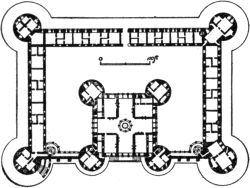

CHAPTER XX.
EARLY RENAISSANCE ARCHITECTURE IN ITALY.
Books Recommended: Anderson, Architecture of the Renaissance in Italy. Burckhardt, The Civilization of the Renaissance; Geschichte der Renaissance in Italien; Der Cicerone. Cellesi, Sei Fabbriche di Firenze. Cicognara, Le Fabbriche più cospicue di Venezia. Durm, Die Baukunst der Renaissance in Italien (in Hdbuch. d. Arch.). Fergusson, History of Modern Architecture. Geymüller, La Renaissance en Toscane. Montigny et Famin, Architecture Toscane. Moore, Character of Renaissance Architecture. Müntz, La Renaissance en Italie et en France à l’époque de Charles VIII. Palustre, L’Architecture de la Renaissance. Pater, Studies in the Renaissance. Symonds, The Renaissance of the Fine Arts in Italy. Tosi and Becchio, Altars, Tabernacles, and Tombs.
THE CLASSIC REVIVAL. The abandonment of Gothic architecture in Italy and the substitution in its place of forms derived from classic models were occasioned by no sudden or merely local revolution. The Renaissance was the result of a profound and universal intellectual movement, whose roots may be traced far back into the Middle Ages, and which manifested itself first in Italy simply because there the conditions were most propitious. It spread through Europe just as rapidly as similar conditions appearing in other countries prepared the way for it. The essence of this far-reaching movement was the protest of the individual reason against the trammels of external and arbitrary authority—a protest which found its earliest organized expression in the Humanists. In its assertion of the intellectual and moral rights of the individual, the Renaissance laid the foundations of modern civilization. The same spirit, in rejecting the authority and teachings of the 271 Church in matters of purely secular knowledge, led to the questionings of the precursors of modern science and the discoveries of the early navigators. But in nothing did the reaction against mediæval scholasticism and asceticism display itself more strikingly than in the joyful enthusiasm which marked the pursuit of classic studies. The long-neglected treasures of classic literature were reopened, almost rediscovered, in the fourteenth century by the immortal trio—Dante, Petrarch, and Boccaccio. The joy of living, the hitherto forbidden delight in beauty and pleasure for their own sakes, the exultant awakening to the sense of personal freedom, which came with the bursting of mediæval fetters, found in classic art and literature their most sympathetic expression. It was in Italy, where feudalism had never fully established itself, and where the municipalities and guilds had developed, as nowhere else, the sense of civic and personal freedom, that these symptoms first manifested themselves. In Italy, and above all in the Tuscan cities, they appeared throughout the fourteenth century in the growing enthusiasm for all that recalled the antique culture, and in the rapid advance of luxury and refinement in both public and private life.
THE RENAISSANCE OF THE ARTS. Classic Roman architecture had never lost its influence on the Italian taste. Gothic art, already declining in the West, had never been in Italy more than a borrowed garb, clothing architectural conceptions classic rather than Gothic in spirit. The antique monuments which abounded on every hand were ever present models for the artist, and to the Florentines of the early fifteenth century the civilization which had created them represented the highest ideal of human culture. They longed to revive in their own time the glories of ancient Rome, and appropriated with uncritical and undiscriminating enthusiasm the good and the bad, the early and the late forms of Roman art, Naïvely unconscious of the disparity 272 between their own architectural conceptions and those they fancied they imitated, they were, unknown to themselves, creating a new style, in which the details of Roman art were fitted in novel combinations to new requirements. In proportion as the Church lost its hold on the culture of the age, this new architecture entered increasingly into the service of private luxury and public display. It created, it is true, striking types of church design, and made of the dome one of the most imposing of external features; but its most characteristic products were palaces, villas, council halls, and monuments to the great and the powerful. The personal element in design asserted itself as never before in the growth of schools and the development of styles. Thenceforward the history of Italian architecture becomes the history of the achievements of individual artists.
EARLY BEGINNINGS. Already in the 13th century the pulpits of Niccolo Pisano at Sienna and Pisa had revealed that master’s direct recourse to antique monuments for inspiration and suggestion. In the frescoes of Giotto and his followers, and in the architectural details of many nominally Gothic buildings, classic forms had appeared with increasing frequency during the fourteenth century. This was especially true in Florence, which was then the artistic capital of Italy. Never, perhaps, since the days of Pericles, had there been another community so permeated with the love of beauty in art, and so endowed with the capacity to realize it. Nowhere else in Europe at that time was there such strenuous life, such intense feeling, or such free course for individual genius as in Florence. Her artists, with unexampled versatility, addressed themselves with equal success to goldsmiths’ work, sculpture, architecture and engineering—often to painting and poetry as well; and they were quick to catch in their art the spirit of the classic revival. The new movement achieved its first architectural 273 triumph in the dome of the cathedral of Florence (1420–64); and it was Florentine—or at least Tuscan—artists who planted in other centres the seeds of the new art that were to spring up in the local and provincial schools of Sienna, Milan, Pavia, Bologna, and Venice, of Brescia, Lucca, Perugia, and Rimini, and many other North Italian cities. The movement asserted itself late in Rome and Naples, as an importation from Northern Italy, but it bore abundant fruit in these cities in its later stages.
PERIODS. The classic styles which grew up out of the Renaissance may be divided for convenience into four periods.
The Early Renaissance or Formative Period, 1420–90; characterized by the grace and freedom of the decorative detail, suggested by Roman prototypes and applied to compositions of great variety and originality.
The High Renaissance or Formally Classic Period, 1490–1550. During this period classic details were copied with increasing fidelity, the orders especially appearing in almost all compositions; decoration meanwhile losing somewhat in grace and freedom.
The Early Baroque (or Baroco), 1550–1600; a period of classic formality characterized by the use of colossal orders, engaged columns and rather scanty decoration.
The Decline or Later Baroque, marked by poverty of invention in the composition and a predominance of vulgar sham and display in the decoration. Broken pediments, huge scrolls, florid stucco-work and a general disregard of architectural propriety were universal.
During the eighteenth century there was a reaction from these extravagances, which showed itself in a return to the servile copying of classic models, sometimes not without a certain dignity of composition and restraint in the decoration.
By many writers the name Renaissance is confined to the 274 first period. This is correct from the etymological point of view; but it is impossible to dissociate the first period historically from those which followed it, down to the final exhaustion of the artistic movement to which it gave birth, in the heavy extravagances of the Rococo.
Another division is made by the Italians, who give the name of the Quattrocento to the period which closed with the end of the fifteenth century, Cinquecento to the sixteenth century, and Seicento to the seventeenth century or Rococo. It has, however, become common to confine the use of the term Cinquecento to the first half of the sixteenth century.
FIG. 158.—EARLY RENAISSANCE CAPITAL, PAL. ZORZI, VENICE.
CONSTRUCTION AND DETAIL. The architects of the Renaissance occupied themselves more with form than with construction, and rarely set themselves constructive problems of great difficulty. Although the new architecture began with the colossal dome of the cathedral of Florence, and culminated in the stupendous church of St. Peter at Rome, it was pre-eminently an architecture of palaces and villas, of façades and of decorative display. Constructive difficulties were reduced to their lowest terms, and the constructive framework was concealed, not emphasized, by the decorative apparel of the design. Among the masterpieces of the early Renaissance are many buildings of small dimensions, such as gates, chapels, tombs and fountains. In these the individual fancy had full sway, and produced surprising results by the beauty of enriched mouldings, of carved friezes with infant genii, wreaths of fruit, griffins, masks and scrolls; by pilasters covered with arabesques as delicate in modelling as if wrought in silver; by inlays of marble, panels of glazed terra-cotta, marvellously carved doors, fine stucco-work in relief, capitals and cornices of wonderful richness and variety. The Roman orders appeared only in free imitations, with panelled and carved pilasters for the most part instead of columns, and capitals 275 of fanciful design, recalling remotely the Corinthian by their volutes and leaves (Fig. 158). Instead of the low-pitched classic pediments, there appears frequently an arched cornice enclosing a sculptured lunette. Doors and windows were enclosed in richly carved frames, sometimes arched and sometimes square. Façades were flat and unbroken, depending mainly for effect upon the distribution and adornment of the openings, and the design of doorways, courtyards and cornices. Internally vaults and flat ceilings of wood and plaster were about equally common, the barrel vault and dome occurring far more frequently than the groined vault. Many of the ceilings of this period are of remarkable richness and beauty.
FIG. 159.—SECTION OF DOME OF DUOMO,
FLORENCE.
THE EARLY RENAISSANCE IN FLORENCE: THE DUOMO. In the year 1417 a public competition was held for completing the cathedral of Florence by a dome over the immense octagon, 143 feet in diameter. Filippo Brunelleschi, sculptor and architect (1377–1446), who with Donatello had journeyed to Rome to study there the masterworks of ancient art, after demonstrating the inadequacy of all the solutions proposed by the competitors, was finally permitted to undertake the gigantic task according to his own plans. These provided for an octagonal dome in two shells, connected 276 by eight major and sixteen minor ribs, and crowned by a lantern at the top (Fig. 159). This wholly original conception, by which for the first time (outside of Moslem art) the dome was made an external feature fitly terminating in the light forms and upward movement of a lantern, was carried out between the years 1420 and 1464. Though in no wise an imitation of Roman forms, it was classic in its spirit, in its vastness and its simplicity of line, and was made possible solely by Brunelleschi’s studies of Roman design and construction (Fig. 160).
OTHER CHURCHES. From Brunelleschi’s designs were also erected the Pazzi Chapel in Sta. Croce, a charming design of a Greek cross covered with a dome at the intersection, and preceded by a vestibule with a richly decorated vault; and the two great churches of S. Lorenzo (1425) and S. Spirito (1433–1476, Fig. 161). Both reproduced in a measure the plan of the Pisa Cathedral, having a three-aisled nave and transepts, with a low dome over the crossing. The side aisles were covered with domical vaults and the central aisles with flat wooden or plaster ceilings. All the details of columns, arches and mouldings were imitated from Roman models, and yet the result was something entirely new. Consciously or unconsciously, Brunelleschi was reviving Byzantine rather than Roman conceptions in the planning and structural design of these domical churches, but the garb in which he clothed them was Roman, at least in detail. The Old Sacristy of S. Lorenzo was another domical design of great beauty.
277
FIG. 160.—EXTERIOR OF DOME OF DUOMO,
FLORENCE.
From this time on the new style was in general use for church designs. L. B. Alberti (1404–73), who had in Rome mastered classic details more thoroughly than Brunelleschi, remodelled the church of S. Francesco at Rimini with Roman pilasters and arches, and with engaged orders in the façade, which, however, was never completed. His great work was the church of S. Andrea at Mantua, a Latin cross in plan, with a dome at the intersection (the present high dome dating however, only from the 18th century) and a façade to which the conception of a Roman triumphal arch was skilfully adapted. His façade of incrusted marbles for the church of S. M. Novella at Florence was a less successful work, though its flaring consoles over the side aisles established an unfortunate precedent frequently imitated in later churches.
A great activity in church-building marked the period between 1475 and 1490. The plans of the churches erected about this time throughout north Italy display an interesting variety of arrangements, in nearly all of which the dome is combined with the three-aisled cruciform plan, either as a central feature at the crossing or as a domical vault over each bay. Bologna and Ferrara possess a number of churches of this kind. Occasionally the basilican arrangement was followed, with columnar arcades separating 278 the aisles. More often, however, the pier-arches were of the Roman type, with engaged columns or pilasters between them. The interiors, presumably intended to receive painted decorations, were in most cases somewhat bare of ornament, pleasing rather by happy proportions and effective vaulting or rich flat ceilings, panelled, painted and gilded, than by elaborate architectural detail. A similar scantiness of ornament is to be remarked in the exteriors, excepting the façades, which were sometimes highly ornate; the doorways, with columns, pediments, sculpture and carving, receiving especial attention. High external domes did not come into general use until the next period. In Milan, Pavia, and some other Lombard cities, the internal cupola over the crossing was, however, covered externally by a lofty structure in diminishing stages, like that of the Certosa at Pavia (Fig. 152), or that erected by Bramante for the church of S. M. delle Grazie at Milan. At Prato, in the church of the Madonna delle Carceri (1495–1516), by Giuliano da S. Gallo, the type of the Pazzi chapel reappears in a larger scale; the plan is cruciform, with equal or nearly equal arms covered by barrel vaults, at whose intersection rises a dome of 279 moderate height on pendentives. This charming edifice, with its unfinished exterior of white marble, its simple and dignified lines, and internal embellishments in della-Robbia ware, is one of the masterpieces of the period.
FIG. 161.—INTERIOR OF S. SPIRITO, FLORENCE.
In the designing of chapels and oratories the architects of the early Renaissance attained conspicuous success, these edifices presenting fewer structural limitations and being more purely decorative in character than the larger churches. Such façades as that of S. Bernardino at Perugia and of the Frati di S. Spirito at Bologna are among the most delightful products of the decorative fancy of the 15th century.

FIG. 162.—COURTYARD OF RICCARDI PALACE, FLORENCE.
FLORENTINE PALACES. While the architects of this period failed to develop any new and thoroughly satisfactory ecclesiastical type, they attained conspicuous success in palace-architecture. The Riccardi palace in Florence (1430) marks the first step of the Renaissance in this direction. It was built for the great Cosimo di Medici by Michelozzi (1397–1473), a contemporary of Brunelleschi and Alberti, and a man of great talent. Its imposing rectangular façade, with widely spaced mullioned windows in two stories over a massive basement, is crowned with a classic cornice of unusual and perhaps excessive size. In 280 spite of the bold and fortress-like character of the rusticated masonry of these façades, and the mediæval look they seem to present to modern eyes, they marked a revolution in style and established a type frequently imitated in later years. The courtyard, in contrast with this stern exterior, appears light and cheerful (Fig. 162). Its wall is carried on round arches borne by columns with Corinthianesque capitals, and the arcade is enriched with sculptured medallions. The Pitti Palace, by Brunelleschi (1435), embodies the same ideas on a more colossal scale, but lacks the grace of an adequate cornice. A lighter and more ornate style appeared in 1460 in the P. Rucellai, by Alberti, in which for the first time classical pilasters in superposed stages were applied to a street façade. To avoid the dilemma of either insufficiently crowning the edifice or making the cornice too heavy for the upper range of pilasters, Alberti made use of brackets, occupying the width of the upper frieze, and converting the whole upper entablature into a cornice. But this compromise was not quite successful, and it remained for later architects in Venice, Verona, and Rome to work out more satisfactory methods of applying the orders to many-storied palace façades. In the great P. Strozzi (Fig. 163), erected in 1490 by Benedetto da Majano and Cronaca, the architects reverted to the earlier type of the P. Riccardi, treating it with greater refinement and producing one of the noblest palaces of Italy.
FIG. 163.—FAÇADE OF STROZZI PALACE, FLORENCE.
COURTYARDS; ARCADES. These palaces were all built around interior courts, whose walls rested on columnar arcades, as in the P. Riccardi (Fig. 162). The origin of these arcades may be found in the arcaded cloisters of mediæval monastic churches, which often suggest classic models, as in those of St. Paul-beyond-the-Walls and St. John Lateran at Rome. Brunelleschi not only introduced columnar arcades into a number of cloisters and palace courts, but also used them effectively as exterior features in the Loggia S. Paolo and the Foundling Hospital (Ospedale degli Innocenti) at Florence. The chief drawback in these light arcades was their inability to withstand the thrust of the vaulting over the space behind them, and the consequent recourse to iron tie-rods where vaulting was used. The Italians, however, seemed to care little about this disfigurement.
MINOR WORKS. The details of the new style were developed quite as rapidly in purely decorative works as in monumental buildings. Altars, mural monuments, tabernacles, pulpits and ciboria afforded scope for the genius of the most distinguished artists. Among those who were specially celebrated in works of this kind should be named Lucca della Robbia (1400–82) and his successors, Mino da Fiesole (1431–84) and Benedetto da Majano (1442–97). Possessed of a wonderful fertility of invention, they and their pupils multiplied their works in extraordinary number and variety, not only throughout north Italy, but also in Rome and Naples. Among the most famous examples of this branch of design may be mentioned a pulpit in Sta. Croce by B. da Majano; a terra-cotta fountain in the sacristy of S. M. Novella, by the della Robbias; the Marsupini tomb in Sta. Croce, by Desiderio da Settignano (all in Florence); the della Rovere tomb in S. M. del Popolo, Rome, by Mino da Fiesole, and in the Cathedral at Lucca the Noceto tomb and the Tempietto, by Matteo Civitali. It was in 282 works of this character that the Renaissance oftenest made its first appearance in a new centre, as was the case in Sienna, Pisa, Lucca, Naples, etc.
FIG. 164.—TOMB OF PIETRO DI NOCETO, LUCCA.
NORTH ITALY. Between 1450 and 1490 the Renaissance presented in Sienna, in a number of important palaces, a sharp contrast to the prevalent Gothic style of that city. The P. Piccolomini—a somewhat crude imitation of the P. Riccardi in Florence—dates from 1463; the P. del Governo was built 1469, and the Spannocchi Palace in 1470. In 1463 Ant. Federighi built there the Loggia del Papa. About the same time Bernardo di Lorenzo was building for Pope Pius II. (Æneas Sylvius Piccolomini) an entirely new city, Pienza, with a cathedral, archbishop’s palace, town hall and Papal residence (the P. Piccolomini), which are interesting if not strikingly original works. Pisa possesses few early Renaissance structures, owing to the utter prostration of her fortunes 283 in the 15th century, and the dominance of Pisan Gothic traditions. In Lucca, besides a wealth of minor monuments (largely the work of Matteo Civitali, 1435–1501) in various churches, a number of palaces date from this period, the most important being the P. Pretorio and P. Bernardini. To Milan the Renaissance was carried by the Florentine masters Michelozzi and Filarete, to whom are respectively due the Portinari Chapel in S. Eustorgio (1462) and the earlier part of the great Ospedale Maggiore (1457). In the latter, an edifice of brick with terra-cotta enrichments, the windows were Gothic in outline—an unusual mixture of styles, even in Italy. The munificence of the Sforzas, the hereditary tyrants of the province, embellished the semi-Gothic Certosa of Pavia with a new marble façade, begun 1476 or 1491, which in its fanciful and exuberant decoration, and the small scale of its parts, belongs properly to the early Renaissance. Exquisitely beautiful in detail, it resembles rather a magnified altar-piece than a work of architecture, properly speaking. Bologna and Ferrara developed somewhat late in the century a strong local school of architecture, remarkable especially for the beauty of its courtyards, its graceful street arcades, and its artistic treatment of brick and terra-cotta (P. Bevilacqua, P. Fava, at Bologna; P. Scrofa, P. Roverella, at Ferrara). About the same time palaces with interior arcades and details in the new style were erected in Verona, Vicenza, Mantua, and other cities.
VENICE. In this city of merchant princes and a wealthy bourgeoisie, the architecture of the Renaissance took on a new aspect of splendor and display. It was late in appearing, the Gothic style with its tinge of Byzantine decorative traditions having here developed into a style well suited to the needs of a rich and relatively tranquil community. These traditions the architects of the new style appropriated in a measure, as in the marble incrustations of the exquisite little church of S. M. dei Miracoli (1480–89), and the façade 284 of the Scuola di S. Marco (1485–1533), both by Pietro Lombardo. Nowhere else, unless on the contemporary façade of the Certosa at Pavia, were marble inlays and delicate carving, combined with a framework of thin pilasters, finely profiled entablatures and arched pediments, so lavishly bestowed upon the street fronts of churches and palaces. The family of the Lombardi (Martino, his sons Moro and Pietro, and grandsons Antonio and Tullio), with Ant. Bregno and Bart. Buon, were the leaders in the architectural Renaissance of this period, and to them Venice owes her choicest masterpieces in the new style. Its first appearance is noted in the later portions of the church of S. Zaccaria (1456–1515), partly Gothic internally, with a façade whose semicircular pediment and small decorative arcades show a somewhat timid but interesting application of classic details. In this church, and still more so in S. Giobbe (1451–93) and the Miracoli above mentioned, the decorative element predominates throughout. It is hard to imagine details more graceful in design, more effective in the swing of their movement, or more delicate in execution than the mouldings, reliefs, wreaths, scrolls, and capitals one encounters in these buildings. Yet in structural interest, in scale and breadth of planning, these early Renaissance Venetian buildings hold a relatively inferior rank.
FIG. 165.—VENDRAMINI PALACE, VENICE.
PALACES. The great Court of the Doge’s Palace, begun 1483 by Ant. Rizzio, belongs only in part to the first period. It shows, however, the lack of constructive principle and of largeness of composition just mentioned, but its decorative effect and picturesque variety elicit almost universal admiration. Like the neighboring façade of St. Mark’s, it violates nearly every principle of correct composition, and yet in a measure atones for this capital defect by its charm of detail. Far more satisfactory from the purely architectural point of view is the façade of the P. Vendramini (Vendramin-Calergi), by Pietro Lombardo (1481). The simple, 285 stately lines of its composition, the dignity of its broad arched and mullioned windows, separated by engaged columns—the earliest example in Venice of this feature, and one of the earliest in Italy—its well-proportioned basement and upper stories, crowned by an adequate but somewhat heavy entablature, make this one of the finest palaces in Italy (Fig. 165) It established a type of large-windowed, vigorously modelled façades which later architects developed, but hardly surpassed. In the smaller contemporary, P. Dario, another type appears, better suited for small buildings, depending for effect mainly upon well-ordered openings and incrusted panelling of colored marble.
ROME. Internal disorders and the long exile of the popes had by the end of the fourteenth century reduced Rome to utter insignificance. Not until the second half of the fifteenth century did returning prosperity and wealth afford 286 the Renaissance its opportunity in the Eternal City. Pope Nicholas V. had, indeed, begun the rebuilding of St. Peter’s from designs by B. Rossellini, in 1450, but the project lapsed shortly after with the death of the pope. The earliest Renaissance building in Rome was the P. di Venezia, begun in 1455, together with the adjoining porch of S. Marco. In this palace and the adjoining unfinished Palazzetto we find the influence of the old Roman monuments clearly manifested in the court arcades, built like those of the Colosseum, with superposed stages of massive piers and engaged columns carrying entablatures. The proportions are awkward, the details coarse; but the spirit of Roman classicism is here seen in the germ. The exterior of this palace is, however, still Gothic in spirit. The architects are unknown; Giuliano da Majano (1452–90), Giacomo di Pietrasanta, and Meo del Caprino (1430–1501) are known to have worked upon it, but it is not certain in what capacity.
The new style, reaching, and in time overcoming, the conservatism of the Church, overthrew the old basilican traditions. In S. Agostino (1479–83), by Pietrasanta, and S. M. del Popolo, by Pintelli (?), piers with pilasters or half-columns and massive arches separate the aisles, and the crossing is crowned with a dome. To the same period belong the Sistine chapel and parts of the Vatican palace, but the interest of these lies rather in their later decorations than in their somewhat scanty architectural merit.
The architectural renewal of Rome, thus begun, reached its culmination in the following period.
OTHER MONUMENTS. The complete enumeration of even the most important Early Renaissance monuments of Italy is impossible within our limits. Two or three only can here be singled out as suggesting types. Among town halls of this period the first place belongs to the P. del Consiglio at Verona, by Fra Giocondo (1435–1515). In this beautiful edifice the façade consists of a light and graceful 287 arcade supporting a wall pierced with four windows, and covered with elaborate frescoed arabesques (recently restored). Its unfortunate division by pilasters into four bays, with a pier in the centre, is a blemish avoided in the contemporary P. del Consiglio at Padua. The Ducal Palace at Urbino, by Luciano da Laurano (1468), is noteworthy for its fine arcaded court, and was highly famed in its day. At Brescia S. M. dei Miracoli is a remarkable example of a cruciform domical church dating from the close of this period, and is especially celebrated for the exuberant decoration of its porch and its elaborate detail. Few campaniles were built in this period; the best of them are at Venice. Naples possesses several interesting Early Renaissance monuments, chief among which are the Porta Capuana (1484), by Giul. da Majano, the triumphal Arch of Alphonso of Arragon, by Pietro di Martino, and the P. Gravina, by Gab. d’Agnolo. Naples is also very rich in minor works of the early Renaissance, in which it ranks with Florence, Venice, and Rome.
288CHAPTER XXI.
RENAISSANCE ARCHITECTURE IN ITALY—Continued.
THE ADVANCED RENAISSANCE AND DECLINE.
Books Recommended: As before, Burckhardt, Cicognara, Fergusson, Palustre. Also, Gauthier, Les plus beaux edifices de Gênes. Geymüller, Les projets primitifs pour la basilique de St. Pierre de Rome. Gurlitt, Geschichte des Barockstiles in Italien. Letarouilly, Édifices de Rome Moderne; Le Vatican. Palladio, The Works of A. Palladio.
CHARACTER OF THE ADVANCED RENAISSANCE. It was inevitable that the study and imitation of Roman architecture should lead to an increasingly literal rendering of classic details and a closer copying of antique compositions. Toward the close of the fifteenth century the symptoms began to multiply of the approaching reign of formal classicism. Correctness in the reproduction of old Roman forms came in time to be esteemed as one of the chief of architectural virtues, and in the following period the orders became the principal resource of the architect. During the so-called Cinquecento, that is, from the close of the fifteenth century to nearly or quite 1550, architecture still retained much of the freedom and refinement of the Quattrocento. There was meanwhile a notable advance in dignity and amplitude of design, especially in the internal distribution of buildings. Externally the orders were freely used as subordinate features in the decoration of doors and windows, and in court arcades of the Roman type. The lantern-crowned 289 dome upon a high drum was developed into one of the noblest of architectural forms. Great attention was bestowed upon all subordinate features; doors and windows were treated with frames and pediments of extreme elegance and refinement; all the cornices and mouldings were proportioned and profiled with the utmost care, and the balustrade was elaborated into a feature at once useful and highly ornate. Interior decoration was even more splendid than before, if somewhat less delicate and subtle; relief enrichments in stucco were used with admirable effect, and the greatest artists exercised their talents in the painting of vaults and ceilings, as in P. del Té at Mantua, by Giulio Romano (1492–1546), and the Sistine Chapel at Rome, by Michael Angelo. This period is distinguished by an exceptional number of great architects and buildings. It was ushered in by Bramante Lazzari, of Urbino (1444–1514), and closed during the career of Michael Angelo Buonarotti (1475–1564); two names worthy to rank with that of Brunelleschi. Inferior only to these in architectural genius were Raphael (1483–1520), Baldassare Peruzzi (1481–1536), Antonio da San Gallo the Younger (1485–1546), and G. Barozzi da Vignola (1507–1572), in Rome; Giacopo Tatti Sansovino (1479–1570), in Venice, and others almost equally illustrious. This period witnessed the erection of an extraordinary series of palaces, villas, and churches, the beginning and much of the construction of St. Peter’s at Rome, and a complete transformation in the aspect of that city.
FIG. 166.—FAÇADE OF THE GIRAUD PALACE, ROME.
BRAMANTE’S WORKS. While precise time limits cannot be set to architectural styles, it is not irrational to date this period from the maturing of Bramante’s genius. While his earlier works in Milan belong to the Quattrocento (S. M. delle Grazie, the sacristy of San Satiro, the extension of the Great Hospital), his later designs show the classic tendency very clearly. The charming Tempietto in the court of 290 S. Pietro in Montorio at Rome, a circular temple-like chapel (1502), is composed of purely classic elements. In the P. Giraud (Fig. 166) and the great Cancelleria Palace, pilasters appear in the external composition, and all the details of doors and windows betray the results of classic study, as well as the refined taste of their designer.24 The beautiful courtyard of the Cancelleria combines the Florentine system of arches on columns with the Roman system of superposed arcades independent of the court wall. In 1506 Bramante began the rebuilding of St. Peter’s for Julius II. (see p. 294) and the construction of a new and imposing papal palace adjoining it on the Vatican hill. Of this colossal group of edifices, commonly known as the Vatican, he executed the greater Belvedere court (afterward divided in two by the Library and the Braccio Nuovo), the lesser octagonal court of the Belvedere, and the court of San Damaso, with its arcades afterward frescoed by Raphael and his school. Besides these, the cloister of S. M. della Pace, and many other works in and out of Rome, reveal the impress of Bramante’s genius, alike in their admirable plans and in the harmony and beauty of their details.
FLORENTINE PALACES. The P. Riccardi long remained the accepted type of palace in Florence. As we have seen, it was imitated in the Strozzi palace, as late as 1489, with 291 greater perfection of detail, but with no radical change of conception. In the P. Gondi, however, begun in the following year by Giuliano da San Gallo (1445–1516), a more pronounced classic spirit appears, especially in the court and the interior design. Early in the 16th century classic columns and pediments began to be used as decorations for doors and windows; the rustication was confined to basements and corner-quoins, and niches, loggias, and porches gave variety of light and shade to the façades (P. Bartolini, by Baccio d’Agnolo; P. Larderel, 1515, by Dosio; P. Guadagni, by Cronaca; P. Pandolfini, 1518, attributed to Raphael). In the P. Serristori, by Baccio d’Agnolo (1510), pilasters were applied to the composition of the façade, but this example was not often followed in Florence.
ROMAN PALACES. These followed a different type. They were usually of great size, and built around ample courts with arcades of classic model in two or three stories. The broad street façade in three stories with an attic or mezzanine was crowned with a rich cornice. The orders were sparingly used externally, and effect was sought principally in the careful proportioning of the stories, in the form and distribution of the square-headed and arched openings, and in the design of mouldings, string-courses, cornices, and other details. The piano nobile, or first story above the basement, was given up to suites of sumptuous reception-rooms and halls, with magnificent ceilings and frescoes by the great painters of the day, while antique statues and reliefs adorned the courts, vestibules, and niches of these princely dwellings. The Massimi palace, by Peruzzi, is an interesting example of this type. The Vatican, Cancelleria, and Giraud palaces have already been mentioned; other notable palaces are the Palma (1506) and Sacchetti (1540), by A. da San Gallo the Younger; the Farnesina, by Peruzzi, with celebrated fresco decorations designed by Raphael; 292 and the Lante (1520) and Altemps (1530), by Peruzzi. But the noblest creation of this period was the
FIG. 167.—PLAN OF FARNESE PALACE.
Larger View
FARNESE PALACE, by many esteemed the finest in Italy. It was begun in 1530 for Alex. Farnese (Paul III.) by A. da San Gallo the Younger, with Vignola’s collaboration. The simple but admirable plan is shown in Fig. 167, and the courtyard, the most imposing in Italy, in Fig. 168. The exterior is monotonous, but the noble cornice by Michael Angelo measurably redeems this defect. The fine vaulted columnar entrance vestibule, the court and the salons, make up an ensemble worthy of the great architects who designed it. The loggia toward the river was added by G. della Porta in 1580.
VILLAS. The Italian villa of this pleasure-loving period afforded full scope for the most playful fancies of the architect, decorator, and landscape gardener. It comprised usually a dwelling, a casino or amusement-house, and many minor edifices, summer-houses, arcades, etc., disposed in extensive grounds laid out with terraces, cascades, and shaded alleys. The style was graceful, sometimes trivial, but almost always pleasing, making free use of stucco enrichments, both internally and externally, with abundance of gilding and frescoing. The Villa Madama (1516), by Raphael, with stucco-decorations by Giulio Romano, though incomplete and now dilapidated, is a noted example of the style. More complete, the Villa of Pope Julius, by Vignola (1550), belongs by its purity of style to this period; its façade well exemplifies the simplicity, 293 dignity, and fine proportions of this master’s work. In addition to these Roman villas may be mentioned the V. Medici (1540, by Annibale Lippi; now the French Academy of Rome); the Casino del Papa in the Vatican Gardens, by Pirro Ligorio (1560); the V. Lante, near Viterbo, and the V. d’Este, at Tivoli, as displaying among almost countless others the Italian skill in combining architecture and gardening.
FIG. 168.—ANGLE OF COURT OF FARNESE
PALACE, ROME.
CHURCHES AND CHAPELS. This period witnessed the building of a few churches of the first rank, but it was especially prolific in memorial, votive, and sepulchral chapels added to churches already existing, like the Chigi Chapel of S. M. del Popolo, by Raphael. The earlier churches of this period generally followed antecedent types, with the dome as the central feature dominating a cruciform plan, and simple, unostentatious and sometimes uninteresting exteriors. Among them may be mentioned: at Pistoia, S. M. del Letto and S. M. dell’ Umiltà, the latter a fine domical rotunda by Ventura Vitoni (1509), with an imposing vestibule; at Venice, S. Salvatore, by Tullio Lombardo (1530), an admirable edifice with alternating domical and barrel-vaulted bays; S. Georgio dei Grechi (1536), by Sansovino, and S. M. Formosa; at Todi, the Madonna della Consolazione (1510), by Cola da Caprarola, a charming design with a high dome and four apses; at Montefiascone, the Madonna delle Grazie, by Sammichele (1523), besides several churches at Bologna, Ferrara, Prato, Sienna, and Rome of almost or quite equal 294 interest. In these churches one may trace the development of the dome as an external feature, while in S. Biagio, at Montepulciano, the effort was made by Ant. da San Gallo the Elder to combine with it the contrasting lines of two campaniles, of which, however, but one was completed.
FIG. 169.—ORIGINAL PLAN OF ST. PETER’S, ROME.
ST. PETER’S. The culmination of Renaissance church architecture was reached in St. Peter’s, at Rome. The original project of Nicholas V. having lapsed with his death, it was the intention of Julius II. to erect on the same site a stupendous mausoleum over the monument he had ordered of Michael Angelo. The design of Bramante, who began its erection in 1506, comprised a Greek cross with apsidal arms, the four angles occupied by domical chapels and loggias within a square outline (Fig. 169). The too hasty execution of this noble design led to the collapse of two of the arches under the dome, and to long delays after Bramante’s death in 1514. Raphael, Giuliano da San Gallo, Peruzzi, and A. da San Gallo the Younger successively supervised the works under the popes from Leo X. to Paul III., and devised a vast number of plans for its completion. Most of these involved fundamental alterations of the original scheme, and were motived by the abandonment of the proposed monument of Julius II.; a church, and not a mausoleum, being in consequence required. In 1546 Michael Angelo was assigned by Paul III. to the works, and gave final form to the general design in a simplified 295 version of Bramante’s plan with more massive supports, a square east front with a portico for the chief entrance, and the unrivalled Dome, which is its most striking feature. This dome, slightly altered and improved in curvature by della Porta after M. Angelo’s death in 1564, was completed by D. Fontana in 1604. It is the most majestic creation of the Renaissance, and one of the greatest architectural conceptions of all history. It measures 140 feet in internal diameter, and with its two shells rises from a lofty drum, buttressed by coupled Corinthian columns, to a height of 405 feet to the top of the lantern. The church, as left by Michael Angelo, was harmonious in its proportions, though the single order used internally and externally dwarfed by its colossal scale the vast dimensions of the edifice. Unfortunately in 1606 C. Maderna was employed by Paul V. to lengthen the nave by two bays, destroying the proportions of the whole, and hiding the dome from view on a near approach. The present tasteless façade was Maderna’s work. The splendid atrium or portico added (1629–67), by Bernini, as an approach, mitigates but does not cure the ugliness and pettiness of this front.
FIG. 170.—PLAN OF ST. PETER’S, ROME, AS NOW STANDING.
The portion below the line A, B, and the side chapels C, D, were added by Maderna. The remainder represents Michael Angelo’s plan.
St. Peter’s as thus completed (Fig. 170) is the largest 296 church in existence, and in many respects is architecturally worthy of its pre-eminence. The central aisle, nearly 600 feet long, with its stupendous panelled and gilded vault, 83 feet in span, the vast central area and the majestic dome, belong to a conception unsurpassed in majestic simplicity and effectiveness. The construction is almost excessively massive, but admirably disposed. On the other hand the nave is too long, and the details not only lack originality and interest, but are also too large and coarse in scale, dwarfing the whole edifice. The interior (Fig. 171) is wanting in the sobriety of color that befits so stately a design; it suggests rather a pagan temple than a Christian basilica. These faults reveal the decline of taste which had already set in before Michael Angelo took charge of the work, and which appears even in the works of that master.
THE PERIOD OF FORMAL CLASSICISM. With the middle of the 16th century the classic orders began to dominate all architectural design. While Vignola, who wrote a treatise upon the orders, employed them with unfailing refinement and judgment, his contemporaries showed less discernment and taste, making of them an end rather than a means. Too often mere classical correctness was substituted for the fundamental qualities of original invention ind intrinsic beauty of composition. The innovation of colossal orders extending through several stories, while it gave to exterior designs a certain grandeur of scale, tended to coarseness and even vulgarity of detail. Sculpture and ornament began to lose their refinement; and while street-architecture gained in monumental scale, and public squares received a more stately adornment than ever before, the street-façades individually were too often bare and uninteresting in their correct formality. In the interiors of churches and large halls there appears a struggle between a cold and dignified simplicity and a growing tendency toward pretentious sham. But these pernicious tendencies did 299 not fully mature till the latter part of the century, and the half-century after 1540 or 1550 was prolific of notable works in both ecclesiastical and secular architecture. The names of Michael Angelo and Vignola, whose careers began in the preceding period; of Palladio and della Porta (1541–1604) in Rome; of Sammichele and Sansovino in Verona and Venice, and of Galeazzo Alessi in Genoa, stand high in the ranks of architectural merit.
[297]
FIG. 171.—INTERIOR OF ST. PETER’S, ROME.
CHURCHES. The type established by St. Peter’s was widely imitated throughout Italy. The churches in which a Greek or Latin cross is dominated by a high dome rising from a drum and terminating in a lantern, and is treated both internally and externally with Roman Corinthian pilasters and arches, are almost numberless. Among the best churches of this type is the Gesù at Rome, by Vignola (1568), with a highly ornate interior of excellent proportions and a less interesting exterior, the façade adorned with two stories of orders and great flanking volutes over the sides (see p. 277). Two churches at Venice, by Palladio—S. Giorgio Maggiore (1560; façade by Scamozzi, 1575) and the Redentore—offer a strong contrast to the Gesù, in their cold and almost bare but pure and correct design. An imitation of Bramante’s plan for St. Peter’s appears in S. M. di Carignano, at Genoa, by Galeazzo Alessi (1500–72), begun 1552, a fine structure, though inferior in scale and detail to its original. Besides these and other important churches there were many large domical chapels of great splendor added to earlier churches; of these the Chapel of Sixtus V. in S. M. Maggiore, at Rome, by D. Fontana (1543–1607), is an excellent example.
PALACES: ROME. The palaces on the Capitoline Hill, built at different dates (1540–1644) from designs by Michael Angelo, illustrate the palace architecture of this period, and the imposing effect of a single colossal order running through two stories. This treatment, though well adapted 300 to produce monumental effects in large squares, was dangerous in its bareness and heaviness of scale, and was better suited for buildings of vast dimensions than for ordinary street-façades. In other Roman palaces of this time the traditions of the preceding period still prevailed, as in the Sapienza (University), by della Porta (1575), which has a dignified court and a façade of great refinement without columns or pilasters. The Papal palaces built by Domenico Fontana on the Lateran, Quirinal, and Vatican hills, between 1574 and 1590, externally copying the style of the Farnese, show a similar return to earlier models, but are less pure and refined in detail than the Sapienza. The great pentagonal Palace of Caprarola, near Rome, by Vignola, is perhaps the most successful and imposing production of the Roman classic school.
VERONA. Outside of Rome, palace-building took on various local and provincial phases of style, of which the most important were the closely related styles of Verona, Venice, and Vicenza. Michele Sammichele (1484–1549), who built in Verona the Bevilacqua, Canossa, Pompei, and Verzi palaces and the four chief city gates, and in Venice the P. Grimani, his masterpiece (1550), was a designer of great originality and power. He introduced into his military architecture, as in the gates of Verona, the use of rusticated orders, which he treated with skill and taste. The idea was copied by later architects and applied, with doubtful propriety, to palace-façades; though Ammanati’s garden-façade for the Pitti palace, in Florence (cir. 1560), is an impressive and successful design.
VENICE. Into the development of the maturing classic style Giacopo Tatti Sansovino (1477–1570) introduced in his Venetian buildings new elements of splendor. Coupled columns between arches themselves supported on columns, and a profusion of figure sculpture, gave to his palace-façades a hitherto unknown magnificence of effect, as 301 in the Library of St. Mark (now the Royal Palace, Fig. 172), and the Cornaro palace (P. Corner de Cà Grande), both dating from about 1530–40. So strongly did he impress upon Venice these ornate and sumptuous variations on classic themes, that later architects adhered, in a very debased period, to the main features and spirit of his work.
FIG. 172.—LIBRARY OF ST. MARK, VENICE.
VICENZA. Of Palladio’s churches in Venice we have already spoken; his palaces are mainly to be found in his native city, Vicenza. In these structures he displayed great fertility of invention and a profound familiarity with the classic orders, but the degenerate taste of the Baroque period already begins to show itself in his work. There is far less of architectural propriety and grace in these pretentious palaces, with their colossal orders and their affectation of grandeur, than in the designs of Vignola or Sammichele. Wood and plaster, used to mimic stone, indicate the approaching reign of sham in all design (P. Barbarano, 1570; Chieregati, 1560; Tiene, Valmarano, 1556; Villa Capra). His masterpiece is the two-storied arcade about the mediæval Basilica, in which the arches are supported on a minor order between engaged columns serving 302 as buttresses. This treatment has in consequence ever since been known as the Palladian Motive.
GENOA. During the second half of the sixteenth century a remarkable series of palaces was erected in Genoa, especially notable for their great courts and imposing staircases. These last were given unusual prominence owing to differences of level in the courts, arising from the slope of their sites on the hillside. Many of these palaces were by Galeazzo Alessi (1502–72); others by architects of lesser note; but nearly all characterized by their effective planning, fine stairs and loggias, and strong and dignified, if sometimes uninteresting, detail (P. Balbi, Brignole, Cambiasi, Doria-Tursi [or Municipio], Durazzo [or Reale], Pallavicini, and University).
FIG. 173.—INTERIOR OF SAN SEVERO, NAPLES.
THE BAROQUE STYLE. A reaction from the cold classicismo of the late sixteenth century showed itself in the following period, in the lawless and vulgar extravagances of the so-called Baroque style. The wealthy Jesuit order was a notorious contributor to the debasement of architectural taste. Most of the Jesuit churches and many others not belonging to the order, but following its pernicious example, are monuments of bad taste and pretentious sham. Broken 303 and contorted pediments, huge scrolls, heavy mouldings, ill-applied sculpture in exaggerated attitudes, and a general disregard for architectural propriety characterized this period, especially in its church architecture, to whose style the name Jesuit is often applied. Sham marble and heavy and excessive gilding were universal (Fig. 173). C. Maderna (1556–1629), Lorenzo Bernini (1589–1680), and F. Borromini (1599–1667) were the worst offenders of the period, though Bernini was an artist of undoubted ability, as proved by his colonnades or atrium in front of St. Peter’s. There were, however, architects of purer taste whose works even in that debased age were worthy of admiration.
FIG. 174.—CHURCH OF S. M. DELLA SALUTE, VENICE.
BAROQUE CHURCHES. The Baroque style prevailed in church architecture for almost two centuries. The majority of the churches present varieties of the cruciform plan crowned by a high dome which is usually the best part of the design. Everywhere else the vices of the period appear in these churches, especially in their façades and internal decoration. S. M. della Vittoria, by Maderna, and Sta. Agnese, by Borromini, both at Rome, are examples of the 304 style. Naples is particularly full of Baroque churches (Fig. 173), a few of which, like the Gesù Nuovo (1584), are dignified and creditable designs. The domical church of S. M. della Salute, at Venice (1631), by Longhena, is also a majestic edifice in excellent style (Fig. 174), and here and there other churches offer exceptions to the prevalent baseness of architecture. Particularly objectionable was the wholesale disfigurement of existing monuments by ruthless remodelling, as in S. John Lateran, at Rome, the cathedrals of Ferrara and Ravenna, and many others.
PALACES. These were generally superior to the churches, and not infrequently impressive and dignified structures. The two best examples in Rome are the P. Borghese, by Martino Lunghi the Elder (1590), with a fine court arcade on coupled Doric and Ionic columns, and the P. Barberini, by Maderna and Borromini, with an elliptical staircase by Bernini, one of the few palaces in Italy with projecting lateral wings. In Venice, Longhena, in the Rezzonico and Pesaro palaces (1650–80), showed his freedom from the mannerisms of the age by reproducing successfully the ornate but dignified style of Sansovino (see p. 301). At Naples D. Fontana, whose works overlap the Baroque period, produced in the Royal Palace (1600) and the Royal Museum (1586–1615) designs of considerable dignity, in some respects superior to his papal residences in Rome. In suburban villas, like the Albani and Borghese villas near Rome, the ostentatious style of the Decline found free and congenial expression.
LATER MONUMENTS. In the few eighteenth-century buildings which are worthy of mention there is noticeable a reaction from the extravagances of the seventeenth century, shown in the dignified correctness of the exteriors and the somewhat frigid splendor of the interiors. The most notable work of this period is the Royal Palace at Caserta, by Van Vitelli (1752), an architect of considerable taste and inventiveness, considering his time. This great palace, 800 305 feet square, encloses four fine courts, and is especially remarkable for the simple if monotonous dignity of the well proportioned exterior and the effective planning of its three octagonal vestibules, its ornate chapel and noble staircase. Staircases, indeed, were among the most successful features of late Italian architecture, as in the Scala Regia of the Vatican, and in the Corsini, Braschi, and Barberini palaces at Rome, the Royal Palace at Naples, etc.
In church architecture the east front of S. John Lateran in Rome, by Galilei (1734), and the whole exterior of S. M. Maggiore, by Ferd. Fuga (1743), are noteworthy designs: the former an especially powerful conception, combining a colossal order with two smaller orders in superposed loggie, but marred by the excessive scale of the statues which crown it. The Fountain of Trevi, conceived in much the same spirit (1735, by Niccola Salvi), is a striking piece of decorative architecture. The Sacristy of St. Peter’s, by Marchionne (1775), also deserves mention as a monumental and not uninteresting work. In the early years of the present century the Braccio Nuovo of the Vatican, by Stern, the imposing church of S. Francesco di Paola at Naples, by Bianchi, designed in partial imitation of the Pantheon, and the great S. Carlo Theatre at Naples, show the same coldly classical spirit, not wholly without merit, but lacking in true originality and freedom of conception.
CAMPANILES. The campaniles of the Renaissance and Decline deserve at least passing reference, though they are neither numerous nor often of conspicuous interest. That of the Campidoglio (Capitol) at Rome, by Martino Lunghi, is a good example of the classical type. Venetia possesses a number of graceful and lofty bell-towers, generally of brick with marble bell-stages, of which the upper part of the Campanile of St. Mark and the tower of S. Giorgio Maggiore are the finest examples.
The Decline attained what the early Renaissance aimed 306 at—the revival of Roman forms. But it was no longer a Renaissance; it was a decrepit and unimaginative art, held in the fetters of a servile imitation, copying the letter rather than the spirit of antique design. It was the mistaken and abject worship of precedent which started architecture upon its downward path and led to the atrocious products of the seventeenth century.
MONUMENTS (mainly in addition to those mentioned in the text). 15th Century—Florence: Foundling Hospital (Innocenti), 1421; Old Sacristy and Cloister S. Lorenzo; P. Quaratesi, 1440; cloisters at Sta. Croce and Certosa, all by Brunelleschi; façade S. M. Novella, by Alberti, 1456; Badia at Fiesole, from designs of Brunelleschi, 1462; Court of P. Vecchio, by Michelozzi, 1464 (altered and enriched, 1565); P. Guadagni, by Cronaca, 1490; Hall of 500 in P. Vecchio, by same, 1495.—Venice: S. Zaccaria, by Martino Lombardo, 1457–1515; S. Michele, by Moro Lombardo, 1466; S. M. del Orto, 1473; S. Giovanni Crisostomo, by Moro Lombardo, atrium of S. Giovanni Evangelista, Procurazie Vecchie, all 1481; Scuola di S. Marco, by Martino Lombardo, 1490; P. Dario; P. Corner-Spinelli.—Ferrara: P. Schifanoja, 1469; P. Scrofa or Costabili, 1485; S. M. in Vado, P. dei Diamanti, P. Bevilacqua, S. Francesco, S. Benedetto, S. Cristoforo, all 1490–1500.—Milan: Ospedale Grande (or Maggiore), begun 1457 by Filarete, extended by Bramante, cir. 1480–90 (great court by Richini, 17th century); S. M. delle Grazie, E. end, Sacristy of S. Satiro, S. M. presso S. Celso, all by Bramante, 1477–1499.—Rome: S. Pietro in Montorio, 1472; S. M. del Popolo, 1475?; Sistine Chapel of Vatican, 1475; S. Agostino, 1483.—Sienna: Loggia del Papa and P. Nerucci, 1460; P. del Governo, 1469–1500; P. Spannocchi, 1470; Sta. Catarina, 1490, by di Bastiano and Federighi, church later by Peruzzi; Library in cathedral by L. Marina, 1497; Oratory of S. Bernardino, by Turrapili, 1496.—Pienza: Cathedral, Bishop’s Palace (Vescovado), P. Pubblico, all cir. 1460, by B. di Lorenzo (or Rosselini?). Elsewhere (in chronological order): Arch of Alphonso, Naples, 1443, by P. di Martino; Oratory S. Bernardino, Perugia, by di Duccio, 1461; Church over Casa-Santa, Loreto, 1465–1526; P. del Consiglio at Verona, by Fra Giocondo, 1476; Capella Colleoni, Bergamo, 1476; S. M. in Organo, Verona, 1481; Porta Capuana, Naples, by Giul. da Majano, 1484; Madonna della Croce, Crema, by B. Battagli, 1490–1556; Madonna di Campagna and S. Sisto, Piacenza, both 1492–1511; P. Bevilacqua, Bologna, by Nardi, 1492 (?); P. Gravina, Naples; P. Fava, Bologna; P. Pretorio, Lucca; S. M. dei Miracoli Brescia; all at close of 15th century.
30716th Century—Rome: P. Sora, 1501; S. M. della Pace and cloister, 1504, both by Bramante (façade of church by P. da Cortona, 17th century); S. M. di Loreto, 1507, by A. da San Gallo the Elder; P. Vidoni, by Raphael; P. Lante, 1520; Vigna Papa Giulio, 1534, by Peruzzi; P. dei Conservatori, 1540, and P. del Senatore, 1563 (both on Capitol), by M. Angelo, Vignola, and della Porta; Sistine Chapel in S. M. Maggiore, 1590; S. Andrea della Valle, 1591, by Olivieri (façade, 1670, by Rainaldi).—Florence: Medici Chapel of S. Lorenzo, new sacristy of same, and Laurentian Library, all by M. Angelo, 1529–40; Mercato Nuovo, 1547, by B. Tasso; P. degli Uffizi, 1560–70, by Vasari; P. Giugni, 1560–8.—Venice: P. Camerlinghi, 1525, by Bergamasco; S. Francesco della Vigna, by Sansovino, 1539, façade by Palladio, 1568; Zecca or Mint, 1536, and Loggetta of Campanile, 1540, by Sansovino25, Procurazie Nuove, 1584, by Scamozzi.—Verona: Capella Pellegrini in S. Bernardino, 1514; City Gates, by Sammichele, 1530–40 (Porte Nuova, Stuppa, S. Zeno, S. Giorgio).—Vicenza: P. Porto, 1552; Teatro Olimpico, 1580; both by Palladio.—Genoa: P. Andrea Doria, by Montorsoli, 1529; P. Ducale, by Pennone, 1550; P. Lercari, P. Spinola, P. Sauli, P. Marcello Durazzo, all by Gal. Alessi, cir. 1550; Sta. Annunziata, 1587, by della Porta; Loggia dei Banchi, end of 16th century.—Elsewhere (in chronological order). P. Roverella, Ferrara, 1508; P. del Magnifico, Sienna, 1508, by Cozzarelli; P. Communale, Brescia, 1508, by Formentone; P. Albergati, Bologna, 1510; P. Ducale, Mantua, 1520–40; P. Giustiniani, Padua, by Falconetto, 1524; Ospedale del Ceppo, Pistoia, 1525; Madonna delle Grazie, Pistoia, by Vitoni, 1535; P. Buoncampagni-Ludovisi, Bologna, 1545; Cathedral, Padua, 1550, by Righetti and della Valle, after M. Angelo; P. Bernardini, 1560, and P. Ducale, 1578, at Lucca, both by Ammanati.
17th Century: Chapel of the Princes in S. Lorenzo, Florence, 1604, by Nigetti; S. Pietro, Bologna, 1605; S. Andrea delle Fratte, Rome, 1612; Villa Borghese, Rome, 1616, by Vasanzio; P. Contarini delle Scrigni, Venice, by Scamozzi; Badia at Florence, rebuilt 1625 by Segaloni; S. Ignazio, Rome, 1626–85; Museum of the Capitol, Rome, 1644–50; Church of Gli Scalzi, Venice, 1649; P. Pesaro, Venice, by Longhena, 1650; S. Moisé, Venice, 1668; Brera Palace, Milan; S. M. Zobenigo, Venice, 1680; Dogana di Mare, Venice, 1686, by Benone; Santi Apostoli, Rome.
18th and early 19th Century: Gesuati, at Venice, 1715–30; S. Geremia, Venice, 1753, by Corbellini; P. Braschi, Rome, by Morelli, 1790; Nuova Fabbrica, Venice, 1810.
24. See Appendix C.
25. See Appendix B.
CHAPTER XXII.
RENAISSANCE ARCHITECTURE IN FRANCE.
Books Recommended: As before, Fergusson, Müntz, Palustre. Also Berty, La Renaissance monumentale en France. Château, Histoire et caractères de l’architecture en France. Daly, Motifs historiques d’architecture et de sculpture. De Laborde, La Renaissance des arts à la cour de France. Du Cerceau, Les plus excellents bastiments de France. Lübke, Geschichte der Renaissance in Frankreich. Mathews, The Renaissance under the Valois Kings. Palustre, La Renaissance en France. Pattison, The Renaissance of the Fine Arts in France. Rouyer et Darcel, L’Art architectural en France. Sauvageot, Choix de palais, châteaux, hôtels, et maisons de France.
ORIGIN AND CHARACTER. The vitality and richness of the Gothic style in France, even in its decline in the fifteenth century, long stood in the way of any general introduction of classic forms. When the Renaissance appeared, it came as a foreign importation, introduced from Italy by the king and the nobility. It underwent a protracted transitional phase, during which the national Gothic forms and traditions were picturesquely mingled with those of the Renaissance. The campaigns of Charles VIII. (1489), Louis XII. (1499), and Francis I. (1515), in vindication of their claims to the thrones of Naples and Milan, brought these monarchs and their nobles into contact with the splendid material and artistic civilization of Italy, then in the full tide of the maturing Renaissance. They returned to France, filled with the ambition to rival the splendid palaces and gardens of Italy, taking with them Italian artists to teach their arts to the French. But while these Italians successfully 309 introduced many classic elements and details into French architecture, they wholly failed to dominate the French master-masons and tailleurs de pierre in matters of planning and general composition. The early Renaissance architecture of France is consequently wholly unlike the Italian, from which it derived only minor details and a certain largeness and breadth of spirit.
PERIODS. The French Renaissance and its sequent developments may be broadly divided into three periods, with subdivisions coinciding more or less closely with various reigns, as follows:
I. The Valois Period, or Renaissance proper, 1483–1589, subdivided into:
a. The Transition, comprising the reigns of Charles VIII. and Louis XII. (1483–1515), and the early years of that of Francis I.; characterized by a picturesque mixture of classic details with Gothic conceptions.
b. The Style of Francis I., or Early Renaissance, from about 1520 to that king’s death in 1547; distinguished by a remarkable variety and grace of composition and beauty of detail.
c. The Advanced Renaissance, comprising the reigns of Henry II. (1547), Francis II. (1559), Charles IX. (1560), and Henry III. (1574–89); marked by the gradual adoption of the classic orders and a decline in the delicacy and richness of the ornament.
II. The Bourbon or Classic Period (1589–1715):
a. Style of Henry IV., covering his reign and partly that of Louis XIII. (1610–45), employing the orders and other classic forms with a somewhat heavy, florid style of ornament.
b. Style of Louis XIV., beginning in the preceding reign and extending through that of Louis XIV. (1645–1715); the great age of classic architecture in France, corresponding to the Palladian in Italy.
310III. The Decline or Rococo Period, corresponding with the reign of Louis XV. (1715–74); marked by pompous extravagance and capriciousness.
During this period a reaction set in toward a severer classicism, leading to the styles of Louis XVI. and of the Empire, to be treated of in a later chapter.
THE TRANSITION. As early as 1475 the new style made its appearance in altars, tombs, and rood-screens wrought by French carvers with the collaboration of Italian artificers. The tomb erected by Charles of Anjou to his father in Le Mans cathedral (1475, by Francesco Laurana), the chapel of St. Lazare in the cathedral of Marseilles (1483), and the tomb of the children of Charles VIII. in Tours cathedral (1506), by Michel Columbe, the greatest artist of his time in France, are examples. The schools of Rouen and Tours were especially prominent in works of this kind, marked by exuberant fancy and great delicacy of execution. In church architecture Gothic traditions were long dominant, in spite of the great numbers of Italian prelates in France. It was in châteaux, palaces, and dwellings that the new style achieved its most notable triumphs.
EARLY CHÂTEAUX. The castle of Charles VIII., at Amboise on the Loire, shows little trace of Italian influence. It was under Louis XII. that the transformation of French architecture really began. The Château de Gaillon (of which unfortunately only fragments remain in the École des Beaux-Arts at Paris), built for the Cardinal George of Amboise, between 1497 and 1509, by Pierre Fain, was the masterwork of the Rouen school. It presented a curious mixture of styles, with its irregular plan, its moat, drawbridge, and round corner-towers, its high roofs, turrets, and dormers, which gave it, in spite of many Renaissance details, a mediæval picturesqueness. The Château de Blois (the east and south wings of the present group), begun for Louis XII. about 1500, was the first of a remarkable series 311 of royal palaces which are the glory of French architecture. It shows the new influences in its horizontal lines and flat, unbroken façades of brick and stone, rather than in its architectural details (Fig. 175). The Ducal Palace at Nancy and the Hôtel de Ville at Orléans, by Viart, show a similar commingling of the classic and mediæval styles.
FIG. 175.—BLOIS, COURT FAÇADE OF WING OF
LOUIS XII.
STYLE OF FRANCIS I. Early in the reign of this monarch, and partly under the lead of Italian artists, like il Rosso, Serlio, and Primaticcio, classic elements began to dominate the general composition and Gothic details rapidly disappeared. A simple and effective system of exterior design was adopted in the castles and palaces of this period. Finely moulded belt-courses at the sills and heads of the windows marked the different stories, and were crossed by a system of almost equally important vertical lines, formed by superposed pilasters flanking the windows continuously from basement to roof. The façade was crowned by a slight cornice and open balustrade, above which rose a steep and lofty roof, diversified by elaborate dormer windows which were 312 adorned with gables and pinnacles (Fig. 178). Slender pilasters, treated like long panels ornamented with arabesques of great beauty, or with a species of baluster shaft like a candelabrum, were preferred to columns, and were provided with graceful capitals of the Corinthianesque type. The mouldings were minute and richly carved; pediments were replaced by steep gables, and mullioned windows with stone crossbars were used in preference to the simpler Italian openings. In the earlier monuments Gothic details were still used occasionally; and round corner-towers, high dormers, and numerous turrets and pinnacles appear even in the châteaux of later date.
CHURCHES. Ecclesiastical architecture received but scant attention under Francis I., and, so far as it was practised, still clung tenaciously to Gothic principles. Among the few important churches of this period may be mentioned St. Etienne du Mont, at Paris (1517–38), in which classic and Gothic features appear in nearly equal proportions; the east end of St. Pierre, at Caen, with rich external carving; and the great parish church of St. Eustache, at Paris (1532, by Lemercier), in which the plan and construction are purely Gothic, while the details throughout belong to the new style, though with little appreciation of the spirit and proportions of classic art. New façades were also built for a number of already existing churches, among which St. Michel, at Dijon, is conspicuous, with its vast portal arch and imposing towers. The Gothic towers of Tours cathedral were completed with Renaissance lanterns or belfries, the northern in 1507, the southern in 1547.
FIG. 176.—STAIRCASE TOWER, BLOIS.
PALACES. To the palace at Blois begun by his predecessor, Francis I. added a northern and a western wing, completing the court. The north wing is one of the masterpieces of the style, presenting toward the court a simple and effective composition, with a rich but slightly projecting cornice and a high roof with elaborate dormers. This 313 façade is divided into two unequal sections by the open Staircase Tower (Fig. 176), a chef-d’œuvre in boldness of construction as well as in delicacy and richness of carving. The outer façade of this wing is a less ornate but more vigorous design, crowned by a continuous open loggia under the roof. More extensive than Blois was Fontainebleau, the favorite residence of the king and of many of his successors. Following in parts the irregular plan of the convent it replaced, its other portions were more symmetrically disposed, while the whole was treated externally in a somewhat severe, semi-classic style, singularly lacking in ornament. Internally, however, this palace, begun in 1528 by Gilles Le Breton, was at that time the most splendid in France, the gallery of Francis I. being especially noted. The Château of St. Germain, near Paris (1539, by Pierre Chambiges), is of a very different character. Built largely of brick, with flat balustraded roof and deep buttresses carrying three ranges of arches, it is neither Gothic nor classic, neither fortress nor palace in aspect, but a wholly unique conception.

FIG. 177.—PLAN OF CHAMBORD.
The rural châteaux and hunting-lodges erected by Francis I. display the greatest diversity of plan and treatment, 314 attesting the inventiveness of the French genius, expressing itself in a new-found language, whose formal canons it disdained. Chief among them is the Château of Chambord (Figs. 177, 178)—“a Fata Morgana in the midst of a wild, woody thicket,” to use Lübke’s language. This extraordinary edifice, resembling in plan a feudal castle with curtain-walls, bastions, moat, and donjon, is in its architectural treatment a palace with arcades, open-stair towers, a noble double spiral staircase terminating in a graceful lantern, and a roof of the most bewildering complexity of towers, chimneys, and dormers (1526, by Pierre le Nepveu). The hunting-lodges of La Muette and Chalvau, and the so-called Château de Madrid—all three demolished during or since the Revolution—deserve mention, especially 315 the last. This consisted of two rectangular pavilions, connected by a lofty banquet-hall, and adorned externally with arcades in Florentine style, and with medallions and reliefs of della Robbia ware (1527, by Gadyer).
THE LOUVRE. By far the most important of all the architectural enterprises of this reign, in ultimate results, if not in original extent, was the beginning of a new palace to replace the old Gothic fortified palace of the Louvre. To this task Pierre Lescot was summoned in 1542, and the work of erection actually begun in 1546. The new palace, in a sumptuous and remarkably dignified classic style, was to have covered precisely the area of the demolished fortress. Only the southwest half, comprising two sides of the court, was, however, undertaken at the outset (Fig. 179). It remained for later monarchs to amplify the original scheme, and ultimately to complete, late in the present century, the most extensive and beautiful of all the royal residences of Europe. (See Figs. 181, 208, 209.)
FIG. 179.—DETAIL OF COURT OF LOUVRE, PARIS.
Want of space forbids more than a passing reference to the rural castles of the nobility, rivalling those of the king. Among them Bury, La Rochefoucauld, Bournazel, and 316 especially Azay-le-Rideau (1520) and Chenonceaux (1515–23), may be mentioned, all displaying that love of rural pleasure, that hatred of the city and its confinement, which so distinguish the French from the Italian Renaissance.
OTHER BUILDINGS. The Hôtel-de-Ville (town hall), of Paris, begun during this reign, from plans by Domenico di Cortona (?), and completed under Henry IV., was the most important edifice of a class which in later periods numbered many interesting structures. The town hall of Beaugency (1527) is one of the best of minor public buildings in France, and in its elegant treatment of a simple two-storied façade may be classed with the Maison François I., at Paris. This stood formerly at Moret, whence it was transported to Paris and re-erected about 1830 in somewhat modified form. The large city houses of this period are legion; we can mention only the Hôtel Carnavalet at Paris; the Hôtel Bourgtheroude at Rouen; the Hôtel d’Écoville at Caen; the archbishop’s palace at Sens, and a number of houses in Orléans. The Tomb of Louis XII., at St. Denis, deserves especial mention for its fine proportions and beautiful arabesques.
THE ADVANCED RENAISSANCE. By the middle of the sixteenth century the new style had lost much of its earlier charm. The orders, used with increasing frequency, were more and more conformed to antique precedents. Façades were flatter and simpler, cornices more pronounced, arches more Roman in treatment, and a heavier style of carving took the place of the delicate arabesques of the preceding age. The reigns of Henry II. (1547–59) and Charles IX. (1560–74) were especially distinguished by the labors of three celebrated architects: Pierre Lescot (1515–78), who continued the work on the southwest angle of the Louvre; Jean Bullant (1515–78), to whom are due the right wing of Ecouen and the porch of colossal Corinthian columns in the left wing of the same, built under Francis I.; and, finally, Philibert de l’Orme (1515–70). Jean Goujon (1510–72) also 317 executed during this period most of the remarkable architectural sculptures which have made his name one of the most illustrious in the annals of French art. Chief among the works of de l’Orme was the palace of the Tuileries, built under Charles IX. for Cathérine de Médicis, not far from the Louvre, with which it was ultimately connected by a long gallery. Of the vast plan conceived for this palace, and comprising a succession of courts and wings, only a part of one side was erected (1564–72). This consisted of a domical pavilion, flanked by low wings only a story and a half high, to which were added two stories under Henry IV., to the great advantage of the design. Another masterpiece was the Château d’Anet, built in 1552 by Henry II. for Diane de Poitiers, of which, unfortunately, only fragments survive. This beautiful edifice, while retaining the semi-military moat and bastions of feudal tradition, was planned with classic symmetry, adorned with superposed orders, court arcades, and rectangular corner-pavilions, and provided with a domical cruciform chapel, the earliest of its class in France. All the details were unusually pure and correct, with just enough of freedom and variety to lend a charm wanting in later works of the period. To the reign of Henry II. belong also the châteaux of Ancy-le-Franc, Verneuil, Chantilly (the “petit château,” by Bullant), the banquet-hall over the bridge at Chenonceaux (1556), several notable residences at Toulouse, and the tomb of Francis I. at St. Denis. The châteaux of Pailly and Sully, distinguished by the sobriety and monumental quality of their composition, in which the orders are important elements, belong to the reign of Charles IX., together with the Tuileries, already mentioned.
FIG. 180.—THE LUXEMBURG, PARIS.
THE CLASSIC PERIOD: HENRY IV. Under this energetic but capricious monarch (1589–1610) and his Florentine queen, Marie de Médicis, architecture entered upon a new period of activity and a new stage of development. Without the 318 charm of the early Renaissance or the stateliness of the age of Louis XIV., it has a touch of the Baroque, attributable partly to the influence of Marie de Médicis and her Italian prelates, and partly to the Italian training of many of the French architects. The great work of this period was the extension of the Tuileries by J. B. du Cerceau, and the completion, by Métézeau and others, of the long gallery next the Seine, begun under Henry II., with the view of connecting the Tuileries with the Louvre. In this part of the work colossal orders were used with indifferent effect. Next in importance was the addition to Fontainebleau of a great court to the eastward, whose relatively quiet and dignified style offers less contrast than one might expect to the other wings and courts dating from Francis I. More successful architecturally than either of the above was the Luxemburg palace, built for the queen by Salomon De Brosse, in 1616 (Fig. 180). Its plan presents the favorite French arrangement of a main building separated from the street 319 by a garden or court, the latter surrounded on three sides by low wings containing the dependencies. Externally, rusticated orders recall the garden front of the Pitti at Florence; but the scale is smaller, and the projecting pavilions and high roofs give it a grace and picturesqueness wanting in the Florentine model. The Place Royale, at Paris, and the château of Beaumesnil, illustrate a type of brick-and-stone architecture much in vogue at this time, stone quoins decorating the windows and corners, and the orders being generally omitted.
Under Louis XIII. the Tuileries were extended northward and the Louvre as built by Lescot was doubled in size by the architect Lemercier, the Pavillon de l’Horloge being added to form the centre of the enlarged court façade.
CHURCHES. To this reign belong also the most important churches of the period. The church of St. Paul-St. Louis, at Paris (1627, by Derrand), displays the worst faults of the time, in the overloaded and meaningless decoration of its uninteresting front. Its internal dome is the earliest in Paris. Far superior was the chapel of the Sorbonne, a well-designed domical church by Lemercier, with a sober and appropriate exterior treated with superposed orders.
PERIOD OF LOUIS XIV. This was an age of remarkable literary and artistic activity, pompous and pedantic in many of its manifestations, but distinguished also by productions of a very high order. Although contemporary with the Italian Baroque—Bernini having been the guest of Louis XIV.—the architecture of this period was free from the wild extravagances of that style. In its often cold and correct dignity it resembled rather that of Palladio, making large use of the orders in exterior design, and tending rather to monotony than to overloaded decoration. In interior design there was more of lightness and caprice. Papier-maché and stucco were freely used in a fanciful style of relief ornamentation by scrolls, wreaths, shells, etc., and 320 decorative panelling was much employed. The whole was saved from triviality only by the controlling lines of the architecture which framed it. But it was better suited to cabinet-work or to the prettinesses of the boudoir than to monumental interiors. The Galerie d’Apollon, built during this reign over the Petite Galerie in the Louvre, escapes this reproach, however, by the sumptuous dignity of its interior treatment.
VERSAILLES. This immense edifice, built about an already existing villa of Louis XIII., was the work of Levau and J. H. Mansart (1647–1708). Its erection, with the laying out of its marvellous park, almost exhausted the resources of the realm, but with results quite incommensurate with the outlay. In spite of its vastness, its exterior is commonplace; the orders are used with singular monotony, which is not redeemed by the deep breaks and projections of the main front. There is no controlling or dominant feature; there is no adequate entrance or approach; the grand staircases are badly placed and unworthily treated, and the different elements of the plan are combined with singular lack of the usual French sense of monumental and rational arrangement. The chapel is by far the best single feature in the design.
Far more successful was the completion of the Louvre, in 1688, from the designs of Claude Perrault, the court physician, whose plans were fortunately adopted in preference to those of Bernini. For the east front he designed a magnificent Corinthian colonnade nearly 600 feet long, with coupled columns upon a plain high basement, and with a central pediment and terminal pavilions (Fig. 181). The whole forms one of the most imposing façades in existence; but it is a mere decoration, having no practical relation to the building behind it. Its height required the addition of a third story to match it on the north and south sides of the court, which as thus completed quadrupled the original area 321 proposed by Lescot. Fortunately the style of Lescot’s work was retained throughout in the court façades, while externally the colonnade was recalled on the south front by a colossal order of pilasters. The Louvre as completed by Louis XIV. was a stately and noble palace, as remarkable for the surpassing excellence of the sculptures of Jean Goujon as for the dignity and beauty of its architecture. Taken in connection with the Tuileries, it was unrivalled by any palace in Europe except the Vatican.
FIG. 181.—COLONNADE OF LOUVRE.
OTHER BUILDINGS. To Louis XIV. is also due the vast but uninteresting Hôtel des Invalides or veteran’s asylum, at Paris, by J. H. Mansart. To the chapel of this institution was added, in 1680–1706, the celebrated Dome of the Invalides, a masterpiece by the same architect. In plan it somewhat resembles Bramante’s scheme for St. Peter’s—a Greek cross with domical chapels in the four angles and a dome over the centre. The exterior (Fig. 182), with the lofty gilded dome on a high drum adorned with engaged columns, is somewhat high for its breadth, but is a 322 harmonious and impressive design; and the interior, if somewhat cold, is elegant and well proportioned. The chief innovation in the design was the wide separation of the interior stone dome from the lofty exterior decorative cupola and lantern of wood, this separation being designed to meet the conflicting demands of internal and external effect. To the same architect is due the formal monotony of the Place Vendôme, all the houses surrounding it being treated with a uniform architecture of colossal pilasters, at once monumental and inappropriate. One of the most pleasing designs of the time is the Château de Maisons (1658), by F. Mansart, uncle of J. H. Mansart. In this the proportions of the central and terminal pavilions, the mass and lines of the steep roof à la Mansarde, the simple and effective use of the orders, and the refinement of all the details impart a grace of aspect rare in contemporary works. The same qualities appear also in the Val-de-Grâce, by F. Mansart and Lemercier, a domical church of excellent proportions begun under Louis XIII. The want of space forbids mention of other buildings of this period.
FIG. 182.—DOME OF THE INVALIDES.
THE DECLINE. Under Louis XV. the pedantry of the classic period gave place to a protracted struggle between license and the severest classical correctness. The exterior designs of this time were often even more uninteresting and bare than under Louis XIV.; while, on the other hand, interior decoration tended to the extreme of extravagance and disregard of constructive propriety. Contorted lines and crowded scrolls, shells, and palm-leaves adorned the mantelpieces, cornices, and ceilings, to the almost complete suppression of straight lines.
FIG. 183.—FAÇADE OF ST. SULPICE, PARIS.
While these tendencies prevailed in many directions, a counter-current of severe classicism manifested itself in the designs of a number of important public buildings, in which it was sought to copy the grandeur of the old Roman colonnades and arcades. The important church of St. Sulpice at Paris (Fig. 183) is an excellent example of this. Its interior, dating from the preceding century, is well designed, but in no wise a remarkable composition, following Italian models. The façade, added in 1755 by Servandoni, is, on the other hand, one of the most striking architectural objects in the city. It is a correct and well proportioned classic composition in two stories—an Ionic arcade over a Doric colonnade, surmounted by two lateral turrets. Other monuments of this classic revival will be noticed in Chapter XXV.
324PUBLIC SQUARES. Much attention was given to the embellishment of open spaces in the cities, for which the classic style was admirably suited. The most important work of this kind was that on the north side of the Place de la Concorde, Paris. This splendid square, perhaps, on the whole, the finest in Europe (though many of its best features belong to a later date), was at this time adorned with the two monumental colonnades by Gabriel. These colonnades, which form the decorative fronts for blocks of houses, deserve praise for the beauty of their proportions, as well as for the excellent treatment of the arcade on which they rest, and of the pavilions at the ends.
IN GENERAL. French Renaissance architecture is marked by good proportions and harmonious and appropriate detail. Its most interesting phase was unquestionably that of Francis I., so far, at least, as concerns exterior design. It steadily progressed, however, in its mastery of planning; and in its use of projecting pavilions crowned by dominant masses of roof, it succeeded in preserving, even in severely classic designs, a picturesqueness and variety otherwise impossible. Roofs, dormers, chimneys, and staircases it treated with especial success; and in these matters, as well as in monumental dispositions of plan, the French have largely retained their pre-eminence to our own day.
MONUMENTS. (Mainly supplementary to text. Ch. = château; P. = palace; C. = cathedral; Chu. = church; H. = hôtel; T.H. = town hall.)
Transition: Blois, E. wing, 1499; Ch. Meillant; Ch. Chaumont; T.H. Amboise, 1502–05.
Francis I.: Ch. Nantouillet, 1517–25; Ch. Blois, W. wing (afterward demolished) and N. wing, 1520–30; H. Lallemant, Bourges, 1520; Ch. Villers-Cotterets, 1520–59; P. of Archbishop, Sens, 1521–35; P. Fontainebleau (Cour Ovale, Cour d’Adieux, Gallery Francis I., 1527–34; Peristyle, Chapel St. Saturnin, 1540–47, by Gilles le Breton; Cour du Cheval Blanc, 1527–31, by P. Chambiges); H. Bernuy, Toulouse, 1528–39; P. Granvelle, Besançon, 1532–40; T.H. Niort, T.H. Loches, 1532–43: H. de Ligeris (Carnavalet), Paris, 1544, by P. Lescot; churches of Gisors, 325 nave and façade, 1530; La Dalbade, Toulouse, portal, 1530; St. Symphorien Tours, 1531; Chu. Tillières, 1534–46.
Advanced Renaissance: Fontaine des Innocents, Paris, 1547–50, by P. Lescot and J. Goujon; tomb Francis I., at St. Denis, 1555, by Ph. de l’Orme; H. Catelan, Toulouse, 1555; tomb Henry II., at St. Denis, 1560; portal S. Michel, Dijon, 1564; Ch. Sully, 1567; T.H. Arras, 1573; P. Fontainebleau (Cour du Cheval Blanc remodelled, 1564–66, by P. Girard; Cour de la Fontaine, same date); T.H. Besançon, 1582; Ch. Charleval, 1585, by, J. B. du Cerceau.
Style of Henry IV.: P. Fontainebleau (Galerie des Cerfs, Chapel of the Trinity, Baptistery, etc.); P. Tuileries (Pav. de Flore, by du Cerceau, 1590–1610; long gallery continued); Hôtel Vogüé, at Dijon, 1607; Place Dauphine, Paris, 1608; P. de Justice, Paris, Great Hall, by S. de Brosse, 1618; H. Sully, Paris, 1624–39; P. Royal, Paris, by J. Lemercier, for Cardinal Richelieu, 1627–39; P. Louvre doubled in size, by the same; P. Tuileries (N. wing, and Pav. Marsan, long gallery completed); H. Lambert, Paris; T.H. Reims, 1627; Ch. Blois, W. wing for Gaston d’Orléans, by F. Mansart, 1635; façade St. Étienne du Mont, Paris, 1610; of St. Gervais, Paris, 1616–21, by S. de Brosse.
Style of Louis XIV.: T.H. Lyons, 1646; P. Louvre, E. colonnade and court completed, 1660–70; Tuileries altered by Le Vau, 1664; observatory at Paris, 1667–72; arch of St. Denis, Paris, 1672, by Blondel; Arch of St. Martin, 1674, by Bullet; Banque de France, H. de Luyne, H. Soubise, all in Paris; Ch. Chantilly; Ch. de Tanlay; P. St. Cloud; Place des Victoires, 1685; Chu. St. Sulpice, Paris, by Le Vau (façade, 1755); Chu. St. Roch, Paris, 1653, by Lemercier and de Cotte; Notre Dame des Victoires, Paris, 1656, by Le Muet and Bruant.
The Decline: P. Bourbon, 1722; T.H. Rouen; Halle aux Blés (recently demolished), 1748; École Militaire, 1752–58, by Gabriel; P. Louvre, court completed, 1754, by the same; Madeleine begun, 1764; H. des Monnaies (Mint), by Antoine; École de Médecine, 1774, by Gondouin; P. Royal, Great Court, 1784, by Louis; Théâtre Français, 1784 (all the above at Paris); Grand Théâtre, Bordeaux, 1785–1800, by Louis; Préfecture at Bordeaux, by the same; Ch. de Compiegne, 1770, by Gabriel; P. Versailles, theatre by the same; H. Montmorency, Soubise, de Varennes, and the Petit Luxembourg, all at Paris, by de Cotte; public squares at Nancy, Bordeaux, Valenciennes, Rennes, Reims.
CHAPTER XXIII.
RENAISSANCE ARCHITECTURE IN GREAT BRITAIN AND THE NETHERLANDS.
Books Recommended: As before, Fergusson, Palustre. Also, Belcher and Macartney, Later Renaissance Architecture in England. Billings, Baronial and Ecclesiastical Antiquities of Scotland. Blomfield, A Short History of Renaissance Architecture in England. Britton, Architectural Antiquities of Great Britain. Ewerbeck, Die Renaissance in Belgien und Holland. Galland, Geschichte der Hollandischen Baukunst im Zeitalter der Renaissance. Gotch and Brown, Architecture of the Renaissance in England. Loftie, Inigo Jones and Wren. Nash, Mansions of England. Papworth, Renaissance and Italian Styles of Architecture in Great Britain. Richardson, Architectural Remains of the Reigns of Elizabeth and James I. Schayes, Histoire de l’architecture en Belgique.
THE TRANSITION. The architectural activity of the sixteenth century in England was chiefly devoted to the erection of vast country mansions for the nobility and wealthy bourgeoisie. In these seignorial residences a degenerate form of the Gothic, known as the Tudor style, was employed during the reigns of Henry VII. and Henry VIII., and they still retained much of the feudal aspect of the Middle Ages. This style, with its broad, square windows and ample halls, was well suited to domestic architecture, as well as to collegiate buildings, of which a considerable number were erected at this time. Among the more important palaces and manor-houses of this period are the earlier parts of Hampton Court, Haddon and Hengreave Halls, and the now ruined castles of Raglan and Wolterton.
ELIZABETHAN STYLE. Under Elizabeth (1558–1603) the progress of classic culture and the employment of Dutch 327 and Italian artists led to a gradual introduction of Renaissance forms, which, as in France, were at first mingled with others of Gothic origin. Among the foreign artists in England were the versatile Holbein, Trevigi and Torregiano from Italy, and Theodore Have, Bernard Jansen, and Gerard Chrismas from Holland. The pointed arch disappeared, and the orders began to be used as subordinate features in the decoration of doors, windows, chimneys, and mantels. Open-work balustrades replaced externally the heavy Tudor battlements, and a peculiar style of carving in flat relief-patterns, resembling appliqué designs cut out with the jigsaw and attached by nails or rivets, was applied with little judgment to all possible features. Ceilings were commonly finished in plaster, with elaborate interlacing patterns in low relief; and this, with the increasing use of interior woodwork, gave to the mansions of this time a more homelike but less monumental aspect internally. English 328 architects, like Smithson and Thorpe, now began to win the patronage at first monopolized by foreigners. In Wollaton Hall (1580), by Smithson, the orders were used for the main composition with mullioned windows, much after the fashion of Longleat House, completed a year earlier by his master, John of Padua. During the following period, however (1590–1610), there was a reaction toward the Tudor practice, and the orders were again relegated to subordinate uses. Of their more monumental employment, the Gate of Honor of Caius College, Cambridge, is one of the earliest examples. Hardwicke and Charlton Halls, and Burghley, Hatfield, and Holland Houses (Fig. 184), are noteworthy monuments of the style.
JACOBEAN STYLE. During the reign of James I. (1603–25), details of classic origin came into more general use, but caricatured almost beyond recognition. The orders, though much employed, were treated without correctness or grace, and the ornament was unmeaning and heavy. It is not worth while to dwell further upon this style, which produced no important public buildings, and soon gave way to a more rigid classicism.
FIG. 185.—BANQUETING HALL, WHITEHALL.
CLASSIC PERIOD. If the classic style was late in its appearance in England, its final sway was complete and long-lasting. It was Inigo Jones (1572–1652) who first introduced the correct and monumental style of the Italian masters of classic design. For Palladio, indeed, he seems to have entertained a sort of veneration, and the villa which he designed at Chiswick was a reduced copy of Palladio’s Villa Capra, near Vicenza. This and other works of his show a failure to appreciate the unsuitability of Italian conceptions to the climate and tastes of Great Britain; his efforts to popularize Palladian architecture, without the resources which Palladio controlled in the way of decorative sculpture and painting, were consequently not always happy in their results. His greatest work was the design 329 for a new Palace at Whitehall, London. Of this colossal scheme, which, if completed, would have ranked as the grandest palace of the time, only the Banqueting Hall (now used as a museum) was ever built (Fig. 185). It is an effective composition in two stories, rusticated throughout and adorned with columns and pilasters, and contains a fine vaulted hall in three aisles. The plan of the palace, which was to have measured 1,152 × 720 feet, was excellent, largely conceived and carefully studied in its details, but it was wholly beyond the resources of the kingdom. The garden-front of Somerset House (1632; demolished) had the same qualities of simplicity and dignity, recalling the works of Sammichele. Wilton House, Coleshill, the Villa at Chiswick, and St. Paul’s, Covent Garden, are the best known of his works, showing him to have been a designer of ability, but hardly of the consummate genius which his admirers attribute to him.
FIG. 186.—PLAN OF ST. PAUL’S, LONDON.
ST. PAUL’S CATHEDRAL. The greatest of Jones’s successors was Sir Christopher Wren (1632–1723), principally known as the architect of St. Paul’s Cathedral, London, built to replace the earlier Gothic cathedral destroyed in the great fire of 1666. It was begun in 1675, and its designer had the rare good fortune to witness its completion in 1710. The plan, as finally adopted, retained the general 330 proportions of an English Gothic church, measuring 480 feet in length, with transepts 250 feet long, and a grand rotunda 108 feet in diameter at the crossing (Fig. 186). The style was strictly Italian, treated with sobriety and dignity, if somewhat lacking in variety and inspiration. Externally two stories of the Corinthian order appear, the upper story being merely a screen to hide the clearstory and its buttresses. This is an architectural deception, not atoned for by any special beauty of detail. The dominant feature of the design is the dome over the central area. It consists of an inner shell, reaching a height of 216 feet, above which rises the exterior dome of wood, surmounted by a stone lantern, the summit of which is 360 feet from the pavement (Fig. 187). This exterior dome, springing from a high drum surrounded by a magnificent peristyle, gives to the otherwise commonplace exterior of the cathedral a signal majesty of effect. Next to the dome the most successful part of the design is the west front, with its two-storied porch and flanking bell-turrets. Internally the excessive relative length, especially that of the choir, detracts from the effect of the dome, and the poverty of detail gives the whole a somewhat bare aspect. It is intended to relieve this ultimately by a systematic use of mosaic decoration, especially in the dome. The central area itself, in spite of the awkward treatment of the four smaller arches of the eight which support the dome, is a noble design, occupying the whole width of the three aisles, like the Octagon at Ely, and producing a striking effect of amplitude 331 and grandeur. The dome above it is constructively interesting from the employment of a cone of brick masonry to support the stone lantern which rises above the exterior wooden shell. The lower part of the cone forms the drum of the inner dome, its contraction upward being intended to produce a perspective illusion of increased height.
FIG. 187.—EXTERIOR OF ST. PAUL’S
CATHEDRAL.
St. Paul’s ranks among the five or six greatest domical buildings of Europe, and is the most imposing modern edifice in England.
WREN’S OTHER WORKS. Wren was conspicuously successful in the designing of parish churches in London. St. Stephen’s, Walbrook, is the most admired of these, with a dome resting on eight columns. Wren may be called the inventor of the English Renaissance type of steeple, in which a conical or pyramidal spire is harmoniously added 332 to a belfry on a square tower with classic details. The steeple of Bow Church, Cheapside, is the most successful example of the type. In secular architecture Wren’s most important works were the plan for rebuilding London after the Great Fire; the new courtyard of Hampton Court, a quiet and dignified composition in brick and stone; the pavilions and colonnade of Greenwich Hospital; the Sheldonian Theatre at Oxford, and the Trinity College Library at Cambridge. Without profound originality, these works testify to the sound good taste and intelligence of their designer.
FIG. 188.—PLAN OF BLENHEIM.
Larger View
THE 18TH CENTURY. The Anglo-Italian style as used by Jones and Wren continued in use through the eighteenth century, during the first half of which a number of important country-seats and some churches were erected. Van Brugh (1666–1726), Hawksmoor (1666–1736), and Gibbs (1683–1751) were then the leading architects. Van Brugh was especially skilful in his dispositions of plan and mass, and produced in the designs of Blenheim and Castle Howard effects of grandeur and variety of perspective hardly equalled by any of his contemporaries in France or Italy. Blenheim, with its monumental plan and the sweeping curves of its front (Fig. 188), has an unusually palatial aspect, though the striving for picturesqueness is carried too far. Castle Howard is simpler, depending largely for effect on a somewhat inappropriate dome. To Hawksmoor, his pupil, are due St. Mary’s, Woolnoth (1715), at London, in which by a bold rustication of the whole exterior and by windows set in 333 large recessed arches he was enabled to dispense wholly with the orders; St. George’s, Bloomsbury; the new quadrangle of All Souls at Oxford, and some minor works. The two most noted designs of James Gibbs are St. Martin’s-in-the-Fields, at London (1726), and the Radcliffe Library, at Oxford (1747). In the former the use of a Corinthian portico—a practically uncalled-for but decorative appendage—and of a steeple mounted on the roof, with no visible lines of support from the ground, are open to criticism. But the excellence of the proportions, and the dignity and appropriateness of the composition, both internally and externally, go far to redeem these defects (Fig. 189). The Radcliffe Library is a circular domical hall surrounded by a lower circuit of alcoves and rooms, the whole treated with straightforward simplicity and excellent proportions. Colin Campbell, Flitcroft, Kent and Wood, contemporaries of Gibbs, may be dismissed with passing mention.
FIG. 189.—ST. MARTIN’S-IN-THE-FIELDS, LONDON.
Sir William Chambers (1726–96) was the greatest of the later 18th-century architects. His fame rests chiefly on his Treatise on Civil Architecture, and the extension and remodelling of Somerset House, in which he retained the general ordonnance of Inigo Jones’s design, adapting it to a 334 frontage of some 600 feet. Robert Adams, the designer of Keddlestone Hall, Robert Taylor (1714–88), the architect of the Bank of England, and George Dance, who designed the Mansion House and Newgate Prison, at London—the latter a vigorous and appropriate composition without the orders—close the list of noted architects of the eighteenth century. It was a period singularly wanting in artistic creativeness and spontaneity; its productions were nearly all dull and respectable, or at best dignified, but without charm.
BELGIUM. As in all other countries where the late Gothic style had been highly developed, Belgium was slow to accept the principles of the Renaissance in art. Long after the dawn of the sixteenth century the Flemish architects continued to employ their highly florid Gothic alike for churches and town-halls, with which they chiefly had to do. The earliest Renaissance buildings date from 1530–40, among them being the Hôtel du Saumon, at Malines, at Bruges the Ancien Greffe, by Jean Wallot, and at Liège the Archbishop’s Palace, by Borset. The last named, in the singular and capricious form of the arches and baluster-like columns of its court, reveals the taste of the age for what was outré and odd; a taste partly due, no doubt, to Spanish influences, as Belgium was in reality from 1506 to 1712 a Spanish province, and there was more or less interchange of artists between the two countries. The Hôtel de Ville, at Antwerp, by Cornelius de Vriendt or Floris (1518–75), erected in 1565, is the most important monument of the Renaissance in Belgium. Its façade, 305 feet long and 102 feet high, in four stories, is an impressive creation in spite of its somewhat monotonous fenestration and the inartistic repetition in the third story of the composition and proportions of the second. The basement story forms an open arcade, and an open colonnade or loggia runs along under the roof, thus imparting to the composition a considerable play of light and shade, enhanced by the picturesque 335 central pavilion which rises to a height of six stories in diminishing stages. The style is almost Palladian in its severity, but in general the Flemish architects disdained the restrictions of classic canons, preferring a more florid and fanciful effect than could be obtained by mere combinations of Roman columns, arches, and entablatures. De Vriendt’s other works were mostly designs for altars, tabernacles and the like; among them the rood screen in Tournay Cathedral. His influence may be traced in the Hôtel de Ville at Flushing (1594).
FIG. 190.—RENAISSANCE HOUSES, BRUSSELS.
The ecclesiastical architecture of the Flemish Renaissance is almost as destitute of important monuments as is the secular. Ste. Anne, at Bruges, fairly illustrates the type, which is characterized in general by heaviness of detail and a cold and bare aspect internally. The Renaissance in Belgium is best exemplified, after all, by minor works and ordinary dwellings, many of which have considerable artistic grace, though they are quaint rather than monumental (Fig. 190). Stepped gables, high dormers, and volutes flanking each diminishing stage of the design, give a certain piquancy to the street architecture of the period.
HOLLAND. Except in the domain of realistic painting, the Dutch have never manifested pre-eminent artistic endowments, and the Renaissance produced in Holland few monuments of consequence. It began there, as in many 336 other places, with minor works in the churches, due largely to Flemish or Italian artists. About the middle of the 16th century two native architects, Sebastian van Noye and William van Noort, first popularized the use of carved pilasters and of gables or steep pediments adorned with carved scallop-shells, in remote imitation of the style of Francis I. The principal monuments of the age were town-halls, and, after the war of independence in which the yoke of Spain was finally broken (1566–79), local administrative buildings—mints, exchanges and the like. The Town Hall of The Hague (1565), with its stepped gable or great dormer, its consoles, statues, and octagonal turrets, may be said to have inaugurated the style generally followed after the war. Owing to the lack of stone, brick was almost universally employed, and stone imported by sea was only used in edifices of exceptional cost and importance. Of these the Town Hall at Amsterdam holds the first place. Its façade is of about the same dimensions as the one at Antwerp, but compares unfavorably with it in its monotony and want of interest. The Leyden Town Hall, by the Fleming, Lieven de Key (1597), the Bourse or Exchange and the Hanse House at Amsterdam, by Hendrik de Keyser, are also worthy of mention, though many lesser buildings, built of brick combined with enamelled terra-cotta and stone, possess quite as much artistic merit.
DENMARK. In Denmark the monuments of the Renaissance may almost be said to be confined to the reign of Christian IV. (1588–1648), and do not include a single church of any importance. The royal castles of the Rosenborg at Copenhagen (1610) and the Fredericksborg (1580–1624), the latter by a Dutch architect, are interesting and picturesque in mass, with their fanciful gables, mullioned windows and numerous turrets, but can hardly lay claim to beauty of detail or purity of style. The Exchange at Copenhagen, built of brick and stone in the same general 337 style (1619–40), is still less interesting both in mass and detail.
The only other important Scandinavian monument deserving of special mention in so brief a sketch as this is the Royal Palace at Stockholm, Sweden (1698–1753), due to a foreign architect, Nicodemus de Tessin. It is of imposing dimensions, and although simple in external treatment, it merits praise for the excellent disposition of its plan, its noble court, imposing entrances, and the general dignity and appropriateness of its architecture.
MONUMENTS (in addition to those mentioned in text). England, Tudor Style: Several palaces by Henry VIII., no longer extant; Westwood, later rebuilt; Gosfield Hall; Harlaxton.—Elizabethan: Buckhurst, 1565; Kirby House, 1570, both by Thorpe; Caius College, 1570–75, by Theodore Have; “The Schools,” Oxford, by Thomas Holt, 1600; Beaupré Castle, 1600.—Jacobean: Tombs of Mary of Scotland and of Elizabeth in Westminster Abbey; Audsley Inn; Bolsover Castle, 1613; Heriot’s Hospital, Edinburgh, 1628.—Classic or Anglo-Italian: St. John’s College, Oxford; Queen’s House, Greenwich; Coleshill; all by Inigo Jones, 1620–51; Amesbury, by Webb; Combe Abbey; Buckingham and Montague Houses; The Monument, London, 1670, by Wren; Temple Bar, by the same; Winchester Palace, 1683; Chelsea College; Towers of Westminster Abbey, 1696; St. Clement Dane’s; St. James’s, Westminster; St. Peter’s, Cornhill, and many others, all by Wren.—18th Century: Seaton Delaval and Grimsthorpe, by Van Brugh; Wanstead House, by Colin Campbell; Treasury Buildings, by Kent.
The most important Renaissance buildings of Belgium and Holland have been mentioned in the text.
CHAPTER XXIV.
RENAISSANCE ARCHITECTURE IN GERMANY, SPAIN, AND PORTUGAL.
Books Recommended: As before, Fergusson, Palustre Also, von Bezold, Die Baukunst der Renaissance in Deutschland, Holland, Belgien und Dänemark (in Hdbuch. d. Arch.). Caveda (tr. Kugler), Geschichte der Baukunst in Spanien. Fritsch, Denkmäler der deutschen Renaissance (plates). Junghändel, Die Baukunst Spaniens. Lambert und Stahl, Motive der deutschen Architektur. Lübke, Geschichte der Renaissance in Deutschland. Prentice, Renaissance Architecture and Ornament in Spain. Uhde, Baudenkmäler in Spanien. Verdier et Cattois, Architecture civile et domestique. Villa Amil, Hispania Artistica y Monumental.
AUSTRIA; BOHEMIA. The earliest appearance of the Renaissance in the architecture of the German states was in the eastern provinces. Before the close of the fifteenth century Florentine and Milanese architects were employed in Austria, Bohemia, and the Tyrol, where there are a number of palaces and chapels in an unmixed Italian style. The portal of the castle of Mahrisch-Trübau dates from 1492; while to the early years of the 16th century belong a cruciform chapel at Gran, the remodelling of the castle at Cracow, and the chapel of the Jagellons in the same city—the earliest domical structure of the German Renaissance, though of Italian design. The Schloss Porzia (1510), at Spital in Carinthia, is a fine quadrangular palace, surrounding a court with arcades on three sides, in which the open stairs form a picturesque interruption with their rampant arches. But for the massiveness of the details it might be a Florentine palace. In addition to this, the famous Arsenal at Wiener-Neustadt (1524), the portal of the Imperial 339 Palace (1552), and the Castle Schalaburg on the Danube (1530–1601), are attributed to Italian architects, to whom must also be ascribed a number of important works at Prague. Chief among these the Belvedere (1536, by Paolo della Stella), a rectangular building surrounded by a graceful open arcade, above which it rises with a second story crowned by a curved roof; the Waldstein Palace (1621–29), by Giov. Marini, with its imposing loggia; Schloss Stern, built on the plan of a six-pointed star (1459–1565) and embellished by Italian artists with stucco ornaments and frescoes; and parts of the palace on the Hradschin, by Scamozzi, attest the supremacy of Italian art in Bohemia. The same is true of Styria, Carinthia, and the Tyrol; e.g. Schloss Ambras at Innsbrück (1570).
GERMANY: PERIODS. The earliest manifestation of the Renaissance in what is now the German Empire, appeared in the works of painters like Dürer and Burkmair, and in occasional buildings previous to 1525. The real transformation of German architecture, however, hardly began until after the Peace of Augsburg, in 1555. From that time on its progress was rapid, its achievements being almost wholly in the domain of secular architecture—princely and ducal castles, town halls or Rathhäuser, and houses of wealthy burghers or corporations. It is somewhat singular that the German emperors should not have undertaken the construction of a new imperial residence on a worthy scale, the palaces of Munich and Berlin being aggregations of buildings of various dates about a nucleus of mediæval origin, and with no single portion to compare with the stately châteaux of the French kings. Church architecture was neglected, owing to the Reformation, which turned to its own uses the existing churches, while the Roman Catholics were too impoverished to replace the edifices they had lost.
The periods of the German Renaissance are less well 340 marked than those of the French; but its successive developments follow the same general progression, divided into three stages:
I. The Early Renaissance, 1525–1600, in which the orders were infrequently used, mainly for porches and for gable decoration. The conceptions and spirit of most monuments were still strongly tinged with Gothic feeling.
II. The Late Renaissance, 1600–1675, characterized by a dry, heavy treatment, in which too often neither the fanciful gayety of the previous period nor the simple and monumental dignity of classic design appears. Broken curves, large scrolls, obelisks, and a style of flat relief carving resembling the Elizabethan are common. Occasional monuments exhibit a more correct and classic treatment after Italian models.
III. The Decline or Baroque Period, 1675–1800, employing the orders in a style of composition oscillating between the extremes of bareness and of Rococo over-decoration. The ornament partakes of the character of the Louis XV. and Italian Jesuit styles, being most successful in interior decoration, but externally running to the extreme of unrestrained fancy.
FIG. 191.—SCHLOSS HÄMELSCHENBURG.
CHARACTERISTICS. In none of these periods do we meet with the sober, monumental treatment of the Florentine or Roman schools. A love of picturesque variety in masses and sky-lines, inherited from mediæval times, appears in the high roofs, stepped gables and lofty dormers which are universal. The roofs often comprise several stories, and are lighted by lofty gables at either end, and by dormers carried up from the side walls through two or three stories. Gables and dormers alike are built in diminishing stages, each step adorned with a console or scroll, and the whole treated with pilasters or colonnettes and entablatures breaking over each support (Fig. 191). These roofs, dormers, and gables contribute the most noticeable element to the general 341 effect of most German Renaissance buildings, and are commonly the best-designed features in them. The orders are scantily used and usually treated with utter disregard of classic canons, being generally far too massive and overloaded with ornament. Oriels, bay-windows, and turrets, starting from corbels or colonnettes, or rarely from the ground, diversify the façade, and spires of curious bulbous patterns give added piquancy to the picturesque sky-line. The plans seldom had the monumental symmetry and largeness of Italian and French models; courtyards were often irregular in shape and diversified with balconies and spiral staircase-turrets. The national leaning was always toward the quaint and fantastic, as well in the decoration as in the composition. Grotesques, caryatids, gaînes (half-figures terminating below in sheath-like supports), fanciful rustication, and many other details give a touch of the Baroque even to works of early date. The same principles were applied with better success to interior decoration, especially in the large halls of 342 the castles and town-halls, and many of their ceilings were sumptuous and well-considered designs, deeply panelled, painted and gilded in wood or plaster.
CASTLES. The Schloss or Burg of the German prince or duke retained throughout the Renaissance many mediæval characteristics in plan and aspect. A large proportion of these noble residences were built upon foundations of demolished feudal castles, reproducing in a new dress the ancient round towers and vaulted guard-rooms and halls, as in the Hartenfels at Torgau, the Heldburg (both in Saxony), and the castle of Trausnitz, in Bavaria, among many others. The Castle at Torgau (1540) is one of the most imposing of its class, with massive round and square towers showing externally, and court façades full of picturesque irregularities. In the great Castle at Dresden the plan is more symmetrical, and the Renaissance appears more distinctly in the details of the Georgenflügel (1530–50), though at that early date the classic orders were almost ignored. The portal of the Heldburg, however, built in 1562, is a composition quite in the contemporary French vein, with superposed orders and a crowning pediment over a massive basement.
Another important series of castles or palaces are of more regular design, in which the feudal traditions tend to disappear. The majority belong to the end of the 16th and beginning of the 17th centuries. They are built around large rectangular courts with arcades in two or three stories on one or more sides, but rarely surrounding it entirely. In these the segmental arch is more common than the semicircular, and springs usually from short and stumpy Ionic or Corinthian columns. The rooms and halls are arranged en suite, without corridors, and a large and lofty banquet hall forms the dominant feature of the series. The earliest of these regularly planned palaces are of Italian design. Chief among them is the Residenz at Landshut (1536–43), 343 with a thoroughly Roman plan, by pupils of Giulio Romano, and exterior and court façades of great dignity treated with the orders. More German in its details, but equally interesting, is the Fürstenhof at Wismar, in brick and terra-cotta, by Valentino di Lira and Van Aken (1553); while in the Piastenschloss at Brieg (1547–72), by Italian architects, the treatment in parts suggests the richest works of the style of Francis I. In other castles the segmental arch and stumpy columns or piers show the German taste, as in the Plassenburg, by Kaspar Vischer (1554–64), the castle at Plagnitz, and the Old Castle at Stuttgart, all dating from about 1550–55. Heidelberg Castle, in spite of its mediæval aspect from the river and its irregular plan, ranks as the highest achievement of the German Renaissance in palace design. The most interesting parts among its various wings built at different dates—the earlier portions still Gothic in design—are the Otto Heinrichsbau (1554) and the Friedrichsbau (1601). The first of these appears somewhat simpler in its lines than the second, by reason of having lost its original dormer-gables. The orders, freely treated, are superposed in three stories, and twin windows, niches, statues, gaînes, medallions and profuse carving produce an effect of great gayety and richness. The Friedrichsbau (Fig. 192), less quiet in its lines, and with high scroll-gabled and stepped dormers, is on the other hand more soberly decorated and more characteristically German. The Schloss Hämelschenburg (Fig. 191) is designed in somewhat the same spirit, but with even greater simplicity of detail.
FIG. 192.—THE FRIEDRICHSBAU, HEIDELBERG.
TOWN HALLS. These constitute the most interesting class of Renaissance buildings in Germany, presenting a considerable variety of types, but nearly all built in solid blocks without courts, and adorned with towers or spires. A high roof crowns the building, broken by one or more high gables or many-storied dormers. The majority of these town 344 halls present façades much diversified by projecting wings, as at Lemgo and Paderborn, or by oriels and turrets, as at Altenburg (1562–64); and the towers which dominate the whole terminate usually in bell-shaped cupolas, or in more capricious forms with successive swellings and contractions, as at Dantzic (1587). A few, however, are designed with monumental simplicity of mass; of these that at Bremen (1612) is perhaps the finest, with its beautiful exterior arcade on strong Doric columns. The town hall of Nuremberg is one of the few with a court, and presents a façade of almost Roman simplicity (1613–19); that at Augsburg (1615) is equally classic and more pleasing; while at Schweinfurt, Rothenburg (1572), Mülhausen, etc., are others worthy of mention.
CHURCHES. St. Michael’s, at Munich, is almost the only important church of the first period in Germany (1582), but it is worthy to rank with many of the most notable contemporary Italian churches. A wide nave covered by a majestic barrel vault, is flanked by side chapels, separated from each other by massive piers and 345 forming a series of gallery bays above. There are short transepts and a choir, all in excellent proportion and treated with details which, if somewhat heavy, are appropriate and reasonably correct. The Marienkirche at Wolfenbüttel (1608) is a fair sample of the parish churches of the second period. In the exterior of this church pointed arches and semi-Gothic tracery are curiously associated with heavy rococo carving. The simple rectangular mass, square tower, and portal with massive orders and carving are characteristic features. Many of the church-towers are well proportioned and graceful structures in spite of the fantastic outlines of their spires. One of the best and purest in style is that of the University Church at Würzburg (1587–1600).
HOUSES. Many of the German houses of the sixteenth and seventeenth centuries would merit extended notice in a larger work, as among the most interesting lesser monuments of the Renaissance. Nuremberg and Hildesheim are particularly rich in such houses, built either for private citizens or for guilds and corporations. Not a few of the half-timbered houses of the time are genuine works of art, though interest chiefly centres in the more monumental 346 dwellings of stone. In this domestic architecture the picturesque quality of German design appears to better advantage than in more monumental edifices, and their broadly stepped gables, corbelled oriels, florid portals and want of formal symmetry imparting a peculiar and undeniable charm. The Kaiserhaus and Wedekindsches Haus at Hildesheim; Fürstenhaus at Leipzig; Peller, Hirschvogel, and Funk houses at Nuremberg; the Salt House at Frankfurt, and Ritter House at Heidelberg, are a few of the most noted among these examples of domestic architecture.
FIG. 193.—ZWINGER PALACE, DRESDEN.
LATER MONUMENTS. The Zwinger Palace at Dresden (Fig. 193), is the most elaborate and wayward example of the German palace architecture of the third period. Its details are of the most exaggerated rococo type, like confectioner’s work done in stone; and yet the building has an air of princely splendor which partly atones for its details. Besides this palace, Dresden possesses in the domical Marienkirche (Fig. 194) a very meritorious example of late design. The proportions are good, and the detail, if not interesting, is at least inoffensive, while the whole is 347 a dignified and rational piece of work. At Vienna are a number of palaces of the third period, more interesting for their beautiful grounds and parks than for intrinsic architectural merit. As in Italy, this was the period of stucco, and although in Vienna this cheap and perishable material was cleverly handled, and the ornament produced was often quaint and effective, the results lack the permanence and dignity of true building in stone or brick, and may be dismissed without further mention.
FIG. 194.—CHURCH OF ST. MARY (MARIENKIRCHE), DRESDEN.
In minor works the Germans were far less prolific than the Italians or Spaniards. Few of their tombs were of the first importance, though one, the Sebald Shrine, in Nuremberg, by Peter Vischer (1506–19), is a splendid work in bronze, in the transitional style; a richly decorated canopy on slender metal colonnettes covering and enclosing the sarcophagus of the saint. There are a large number of fountains in the squares of German and Swiss cities which display a high order of design, and are among the most characteristic minor products of German art.
SPAIN. The flamboyant Gothic style sufficed for a while to meet the requirements of the arrogant and luxurious period which in Spain followed the overthrow of the Moors and the discovery of America. But it was inevitable that the Renaissance should in time make its influence felt in the arts of the Iberian peninsula, largely through the employment of Flemish artists. In jewelry and silverwork, arts which received a great impulse from the importation of the precious metals from the New World, the forms of the Renaissance found special acceptance, so that the new style received the name of the Plateresque (from platero, silversmith). This was a not inept name for the minutely detailed and sumptuous decoration of the early Renaissance, which lasted from 1500 to the accession of Philip II. in 1556. It was characterized by surface-decoration spreading over broad areas, especially around doors and windows, 348 florid escutcheons and Gothic details mingling with delicately chiselled arabesques. Decorative pilasters with broken entablatures and carved baluster-shafts were employed with little reference to constructive lines, but with great refinement of detail, in spite of the exuberant profusion of the ornament.
To this style, after the artistic inaction of Philip II.’s reign, succeeded the coldly classic style practised by Berruguete and Herrera, and called the Griego-Romano. In spite of the attempt to produce works of classical purity, the buildings of this period are for the most part singularly devoid of originality and interest. This style lasted until the middle of the seventeenth century, and in the case of certain works and artists, until its close. It was followed, at least in ecclesiastical architecture, by the so-called Churrigueresque, a name derived from an otherwise insignificant architect, Churriguera, who like Maderna and Borromini in Italy, discarded all the proprieties of architecture, and rejoiced in the wildest extravagances of an untrained fancy and debased taste.
EARLY MONUMENTS. The earliest ecclesiastical works of the Renaissance period, like the cathedrals of Salamanca, Toledo, and Segovia, were almost purely Gothic in style. Not until 1525 did the new forms begin to dominate in cathedral design. The cathedral at Jaen, by Valdelvira (1525), an imposing structure with three aisles and side chapels, was treated internally with the Corinthian order throughout. The Cathedral of Granada (1529, by Diego de Siloe) is especially interesting for its great domical sanctuary 70 feet in diameter, and for the largeness and dignity of its conception and details. The cathedral of Malaga, the church of San Domingo at Salamanca, and the monastery of San Girolamo in the same city are either wholly or in part Plateresque, and provided with portals of especial richness of decoration. Indeed, the portal of S. Domingo practically forms the whole façade.
349
FIG. 195.—DOOR OF THE UNIVERSITY,
SALAMANCA.
In secular architecture the Hospital of Santa Cruz at Toledo, by Enrique de Egaz (1504–16), is one of the earliest examples of the style. Here, as also in the University at Salamanca (Fig. 195), the portal is the most notable feature, suggesting both Italian and French models in its details. The great College at Alcala de Heñares is another important early monument of the Renaissance (1500–17, by Pedro Gumiel). In most designs the preference was for long façades of moderate height, with a basement showing few openings, and a bel étage lighted by large windows widely spaced. Ornament was chiefly concentrated about the doors and windows, except for the roof balustrades, which were often exceedingly elaborate. Occasionally a decorative motive is spread over the whole façade, as in the Casa de las Conchas at Salamanca, adorned with cockle-shells carved at intervals all over the front—a bold and effective device; or the Infantada palace with its spangling of carved diamonds. The courtyard or patio was an indispensable feature of these buildings, as in all hot countries, and was surrounded 350 by arcades frequently of the most fanciful design overloaded with minute ornament, as in the Infantado at Guadalajara, the Casa de Zaporta, formerly at Saragossa (now removed to Paris; Fig. 196), and the Lupiana monastery. The patios in the Archbishop’s Palace at Alcala de Heñares and the Collegio de los Irlandeses at Salamanca are of simpler design; that of the Casa de Pilatos at Seville is almost purely Moorish. Salamanca abounds in buildings of this period.

FIG. 196.—CASA DE ZAPORTA: COURTYARD.
THE GRIEGO-ROMANO. The more classic treatment of architectural designs by the use of the orders was introduced by Alonzo Berruguete (1480–1560?), who studied in Italy after 1503. The Archbishop’s Palace and the Doric Gate of San Martino, both at Toledo, were his work, as well as the first palace at Madrid. The Palladio of Spain was, however, by Juan de Herrera (died 1597), the architect of Valladolid Cathedral, built under Philip V. This vast edifice follows the general lines of the earlier cathedrals of Jaen and Granada, but in a style of classical correctness almost 351 severe in aspect, but well suited to the grand scale of the church. The masterpiece of this period was the monastery of the Escurial, begun by Juan Battista of Toledo, in 1563, but not completed until nearly one hundred and fifty years later. Its final architectural aspect was largely due to Herrera. It is a vast rectangle of 740 × 580 feet, comprising a complex of courts, halls, and cells, dominated by the huge mass of the chapel. This last is an imposing domical church covering 70,000 square feet, treated throughout with the Doric order, and showing externally a lofty dome and campaniles with domical lanterns, which serve to diversify the otherwise monotonous mass of the monastery. What the Escurial lacks in grace or splendor is at least in a measure redeemed by its majestic scale and varied sky-lines. The Palace of Charles V. (Fig. 197), adjoining the Alhambra at Granada, though begun as early as 1527 by Machuca, was mainly due to Berruguete, and is an excellent example of the Spanish Palladian style. With its circular court, admirable proportions and well-studied details, this often maligned edifice deserves to be ranked among the most successful examples of the style. During this period the cathedral of Seville received many alterations, and the upper part of the adjoining 352 Moorish tower of the Giralda, burned in 1395, was rebuilt by Fernando Ruiz in the prevalent style, and with considerable elegance and appropriateness of design.
FIG. 197.—PALACE OF CHARLES V., GRANADA.
Of the Palace at Madrid, rebuilt by Philip V. after the burning of the earlier palace in 1734, and mainly the work of an Italian, Ivara; the Aranjuez palace (1739, by Francisco Herrera), and the Palace at San Ildefonso, it need only be said that their chief merit lies in their size and the absence of those glaring violations of good taste which generally characterized the successors of Churriguera. In ecclesiastical design these violations of taste were particularly abundant and excessive, especially in the façades and in the sanctuary—huge aggregations of misplaced and vulgar detail, with hardly an unbroken pediment, column, or arch in the whole. Some extreme examples of this abominable style are to be found in the Spanish-American churches of the 17th and 18th centuries, as at Chihuahua (Mexico), Tucson (Arizona), and other places. The least offensive features of the churches of this period were the towers, usually in pairs at the west end, some of them showing excellent proportions and good composition in spite of their execrable details.
Minor architectural works, such as the rood screens in the churches of Astorga and Medina de Rio Seco, and many tombs at Granada, Avila, Alcala, etc., give evidence of superior skill in decorative design, where constructive considerations did not limit the exercise of the imagination.
PORTUGAL. The Renaissance appears to have produced few notable works in Portugal. Among the chief of these are the Tower, the church, and the Cloister, at Belem. These display a riotous profusion of minute carved ornament, with a free commingling of late Gothic details, wearisome in the end in spite of the beauty of its execution (1500–40?). The church of Santa Cruz at Coimbra, and that of Luz, near Lisbon, are among the most noted of the religious 353 monuments of the Renaissance, while in secular architecture the royal palace at Mafra is worthy of mention.
MONUMENTS. (Mainly supplementary to preceding text.) Austria, Bohemia, etc.: At Prague, Schloss Stern, 1459–1565; Schwarzenburg Palace, 1544; Waldstein Palace, 1629; Salvator Chapel, Vienna, 1515; Schloss Schalaburg, near Mölk, 1530–1601; Standehaus, Gratz, 1625. At Vienna: Imperial palace, various dates; Schwarzenburg and Lichtenstein palaces, 18th century.
Germany, First Period: Schloss Baden, 1510–29 and part 1569–82; Schloss Merseburg, 1514, with late 16th-century portals; Fuggerhaus at Augsburg, 1516; castles of Neuenstein, 1530–64; Celle, 1532–46 (and enlarged, 1665–70); Dessau, 1533; Leignitz, portal, 1533; Plagnitz, 1550; Schloss Gottesau, 1553–88; castle of Güstrow, 1555–65; of Oels, 1559–1616; of Bernburg, 1565; of Heiligenburg, 1569–87; Münzhof at Munich, 1575; Lusthaus (demolished) at Stuttgart, 1575; Wilhelmsburg Castle at Schmalkald, 1584–90; castle of Hämelschenburg, 1588–1612.—Second Period: Zunfthaus at Basle, 1578, in advanced style; so also Juleum at Helmstädt, 1593–1612; gymnasium at Brunswick, 1592–1613; Spiesshof at Basle, 1600; castle at Berlin, 1600–1616, demolished in great part; castle Bevern, 1603; Dantzic, Zeughaus, 1605; Wallfahrtskirche at Dettelbach, 1613; castle Aschaffenburg, 1605–13; Schloss Weikersheim, 1600–83.—Third Period: Zeughaus at Berlin, 1695; palace at Berlin by Schlüter, 1699–1706; Catholic church, Dresden. (For Classic Revival, see next chapter.)—Town Halls: At Heilbronn, 1535; Görlitz, 1537; Posen, 1550; Mülhausen, 1552; Cologne, porch with Corinthian columns and Gothic arches, 1569; Lübeck (Rathhaushalle), 1570; Schweinfurt, 1570; Gotha, 1574; Emden, 1574–76; Lemgo, 1589; Neisse, 1604; Nordhausen, 1610; Paderborn, 1612–16; Gernsbach, 1617.
Spain, 16th Century: Monastery San Marcos at Leon; palace of the Infanta, Saragossa; Carcel del Corte at Baez; Cath. of Malaga, W. front, 1538, by de Siloë; Tavera Hospital, Toledo, 1541, by de Bustamente; Alcazar at Toledo, 1548; Lonja (Town Hall) at Saragossa, 1551; Casa de la Sal, Casa Monterey, and Collegio de los Irlandeses, all at Salamanca; Town Hall, Casa de los Taveras and upper part of Giralda, all at Seville.—17th Century: Cathedral del Pilar, Saragossa, 1677; Tower del Seo, 1685.—18th Century: palace at Madrid, 1735; at Aranjuez, 1739; cathedral of Santiago, 1738; Lonja at Barcelona, 1772.
CHAPTER XXV.
THE CLASSIC REVIVALS IN EUROPE.
Books Recommended: As before, Fergusson. Also Chateau, Histoire et caractères de l’architecture en France; and Lübke, Geschichte der Architektur. (For the most part, however, recourse must be had to the general histories of architecture, and to monographs on special cities or buildings.)
THE EIGHTEENTH CENTURY. By the end of the seventeenth century the Renaissance, properly speaking, had run its course in Europe. The increasing servility of its imitation of antique models had exhausted its elasticity and originality. Taste rapidly declined before the growth of the industrial and commercial spirit in the eighteenth century. The ferment of democracy and the disquiet of far-reaching political changes had begun to preoccupy the minds of men to the detriment of the arts. By the middle of the eighteenth century, however, the extravagances of the Rococo, Jesuit, and Louis XV. styles had begun to pall upon the popular taste. The creative spirit was dead, and nothing seemed more promising as a corrective for these extravagances than a return to classic models. But the demand was for a literal copying of the arcades and porticos of Rome, to serve as frontispieces for buildings in which modern requirements should be accommodated to these antique exteriors, instead of controlling the design. The result was a manifest gain in the splendor of the streets and squares adorned by these highly decorative frontispieces, but at the expense of convenience 355 and propriety in the buildings themselves. While this academic spirit too often sacrificed logic and originality to an arbitrary symmetry and to the supposed canons of Roman design, it also, on the other hand, led to a stateliness and dignity in the planning, especially in the designing of vestibules, stairs, and halls, which render many of the public buildings it produced well worthy of study. The architecture of the Roman Revival was pompous and artificial, but seldom trivial, and its somewhat affected grandeur was a welcome relief from the dull extravagance of the styles it replaced.
THE GREEK REVIVAL. The Roman revival was, however, displaced in England and Germany by the Greek Revival, which set in near the close of the eighteenth century. This was the result of a newly awakened interest in the long-neglected monuments of Attic art which the discoveries of Stuart and Revett—sent out in 1732 by the London Society of Dilettanti—had once more made known to the world. It led to a veritable furore in England for Greek Doric and Ionic columns, which were applied indiscriminately to every class of buildings, with utter disregard of propriety. The British taste was at this time at its lowest ebb, and failed to perceive the poverty of Greek architecture when deprived of its proper adornments of carving and sculpture, which were singularly lacking in the British examples. Nevertheless the Greek style in England had a long run of popular favor, yielding only during the reign of the present sovereign to the so-called Victorian Gothic, a revival of mediæval forms. In Germany the Greek Revival was characterized by a more cultivated taste and a more rational application of its forms, which were often freely modified to suit modern needs. In France, where the Roman Revival under Louis XV. had produced fairly satisfactory results, and where the influence of the Royal School of Fine Arts (École des Beaux-Arts) tended to perpetuate the 356 principles of Roman design, the Greek Revival found no footing. The Greek forms were seen to be too severe and intractable for present requirements. About 1830, however, a modified style of design, known since as the Néo-Grec, was introduced by the exertions of a small coterie of talented architects; and though its own life was short, it profoundly influenced French art in the direction of freedom and refinement for a long time afterward. In Italy there was hardly anything in the nature of a true revival of either Roman or Greek forms. The few important works of the late eighteenth and early nineteenth centuries were conceived in the spirit of the late Renaissance, and took from the prevalent revival of classicism elsewhere merely a greater correctness of detail, not any radical change of form or spirit.
FIG. 198.—BRITISH MUSEUM, LONDON.
ENGLAND. There was, strictly speaking, no Roman revival in Great Britain. The modified Palladian style of Wren and Gibbs and their successors continued until superseded by the Greek revival. The first fruit of the new movement seems to have been the Bank of England at London, by Sir John Soane (1788). In this edifice the Greco-Roman order of the round temple at Tivoli was closely copied, and applied to a long façade, too low for its length and with no sufficient stylobate, but fairly effective with its recessed colonnade and unpierced walls. The British Museum, by Robert Smirke (Fig. 198), was a more ambitious essay in a more purely Greek style. Its colossal Ionic colonnade was, however, a mere frontispiece, applied to a badly planned and commonplace building, from which it cut off needed light. The more modest but appropriate columnar façade to the Fitzwilliam Museum at Cambridge, by Bassevi, was a more successful attempt in the same direction, better proportioned and avoiding the incongruity of modern windows in several stories. These have always been the stumbling-block of the revived Greek style. The 357 difficulties they raise are avoided, however, in buildings presenting but two stories, the order being applied to the upper story, upon a high stylobate serving as a basement. The High School and the Royal Institution at Edinburgh, and the University at London, by Wilkins, are for this reason, if for no other, superior to the British Museum and other many-storied Anglo-Greek edifices. In spite of all difficulties, however, the English extended the applications of the style with doubtful success not only to all manner of public buildings, but also to country residences. Carlton House, Bowden Park, and Grange House are instances of this misapplication of Greek forms. Neither did it prove more tractable for ecclesiastical purposes. St. Pancras’s Church at London, and several churches by Thomson (1817–75), in Glasgow, though interesting as experiments in such adaptation, are not to be commended for imitation. The most successful of all British Greek designs is perhaps St. George’s 358 Hall at Liverpool (Fig. 199), whose imposing peristyle and porches are sufficiently Greek in spirit and detail to class it among the works of the Greek Revival. But its great hall and its interior composition are really Roman and not Greek, emphasizing the teaching of experience that Greek architecture does not lend itself to the exigencies of modern civilization to nearly the same extent as the Roman.
FIG. 199.—ST. GEORGE’S HALL, LIVERPOOL.
GERMANY. During the eighteenth century the classic revival in Germany, which at first followed Roman precedents (as in the columns carved with spirally ascending reliefs in front of the church of St. Charles Borromeo, at Vienna), was directed into the channel of Greek imitation by the literary works of Winckelmann, Lessing, Goethe, and others, as well as by the interest aroused by the discoveries of Stuart and Revett. The Brandenburg Gate at Berlin (1784, by Langhans) was an early example of this Hellenism in architecture, and one of its most successful applications to civic purposes. Without precisely copying any Greek structure, it was evidently inspired from the Athenian Propylæa, and nothing in its purpose is foreign to the style employed. The greatest activity in the style came later, however, and was greatly stimulated by the achievements of Fr. Schinkel (1771–1841), one of the greatest of modern German architects. 359 While in the domical church of St. Nicholas at Potsdam, he employed Roman forms in a modernized Roman conception, and followed in one or two other buildings the principles of the Renaissance, his predilections were for Greek architecture. His masterpiece was the Museum at Berlin, with an imposing portico of 18 Ionic columns (Fig. 200). This building with its fine rotunda was excellently planned, and forms, in conjunction with the New Museum by Stuhler (1843–55), a noble palace of art, to whose monumental requirements and artistic purpose the Greek colonnades and pediments were not inappropriate. Schinkel’s greatest successor was Leo von Klenze (1784–1864), whose more textual reproductions of Greek models won him great favor and wide employment. The Walhalla near Ratisbon is a modernized Parthenon, internally vaulted with glass; elegant externally, but too obvious a plagiarism to be greatly admired. The Ruhmeshalle at Munich, a double L partly enclosing a colossal statue of Bavaria, and devoted to the commemoration of Bavaria’s great men, is copied from no Greek building, though purely Greek in design and correct to the smallest detail. In the Glyptothek (Sculpture Gallery), in the same city, the one distinctively 360 Greek feature introduced by Klenze, an Ionic portico, is also the one inappropriate note in the design. The Propylæa at Munich, by the same (Fig. 201), and the Court Theatre at Berlin, by Schinkel, are other important examples of the style. The latter is externally one of the most beautiful theatres in Europe, though less ornate than many. Schinkel’s genius was here remarkably successful in adapting Greek details to the exigent difficulties of theatre design, and there is no suggestion of copying any known Greek building.
FIG. 200.—THE OLD MUSEUM, BERLIN.
In Vienna the one notable monument of the Classic Revival is the Reichsrathsgebäude or Parliament House, by Th. Hansen (1843), an imposing two-storied composition with a lofty central colonnade and lower side-wings, harmonious in general proportions and pleasingly varied in outline and mass.

FIG. 201.—THE PROPYLÆA, MUNICH.
In general, the Greek Revival in Germany presents the aspect of a sincere striving after beauty, on the part of a limited number of artists of great talent, misled by the idea 361 that the forms of a dead civilization could be galvanized into new life in the service of modern needs. The result was disappointing, in spite of the excellent planning, admirable construction and carefully studied detail of these buildings, and the movement here as elsewhere was foredoomed to failure.
FIG. 202.—PLAN OF PANTHÉON, PARIS.
FRANCE. In France the Classic Revival, as we have seen, had made its appearance during the reign of Louis XV. in a number of important monuments which expressed the protest of their authors against the caprice of the Rococo style then in vogue. The colonnades of the Garde-Meuble, the façade of St. Sulpice, and the coldly beautiful Panthéon (Figs. 202, 203) testified to the conviction in the most cultured minds of the time that Roman grandeur was to be attained only by copying the forms of Roman architecture with the closest possible approach to correctness. In the Panthéon, the greatest ecclesiastical monument of its time in France (otherwise known as the church of Ste. Genéviève), the spirit of correct classicism dominates the interior as well as the exterior. It is a Greek cross, measuring 362 × 267 feet, with a dome 265 feet high, and internally 69 feet in diameter. The four arms have domical vaulting and narrow aisles separated by Corinthian columns. The whole interior is a cold but extremely elegant composition. The most notable features of the exterior are its imposing portico of colossal Corinthian columns and the fine peristyle which surrounds the drum of the dome, giving it great dignity and richness of effect.
362
FIG. 203.—EXTERIOR OF PANTHÉON,
PARIS.
The dome, which is of stone throughout, has three shells, the
intermediate shell serving to support the heavy stone lantern. The
architect was Soufflot (1713–81). The Grand Théâtre,
at Bordeaux (1773, by Victor Louis), one of the largest and
finest theatres in Europe, was another product of this movement, its
stately colonnade forming one of the chief ornaments of the city. Under
Louis XVI. there was a temporary reaction from this somewhat pompous
affectation of antique grandeur; but there were few important buildings
erected during that unhappy reign, and the reaction showed itself mainly
in a more delicate and graceful style of interior decoration. It was
reserved for the Empire to set the seal of official approval on the
Roman Revival.
FIG. 204.—ARC DE L’ÉTOILE, PARIS.
The Arch of Triumph of the Carrousel, behind the Tuileries, by
Percier and Fontaine, the magnificent Arc de l’Étoile, at the
summit of the Avenue of the Champs Elysées, by Chalgrin; the wing
begun by Napoleon to connect the Tuileries with the Louvre on the land
side, and the church of the Madeleine, by Vignon, erected as a
temple to the heroes of the Grande Armée, were all designed, in
accordance with the expressed will of the Emperor himself, in a style as
Roman as the requirements
363
of each case would permit. All these monuments, begun between 1806 and
1809, were completed after the Restoration. The Arch of the
Carrousel is a close copy of Roman models; that of the
Étoile (Fig. 204) was a much more original design, of colossal
dimensions. Its admirable proportions, simple composition and striking
sculptures give it a place among the noblest creations of its class. The
Madeleine (Fig. 205), externally a Roman Corinthian temple of the
largest size, presents internally an almost Byzantine conception with
the three pendentive domes that vault its vast nave, but all the details
are Roman. However suitable for a pantheon or mausoleum, it seems
strangely inappropriate as a design for a Christian church. To these
monuments should be added the Bourse or Exchange, by
Brongniart, heavy in spite of its Corinthian peristyle, and the
river front of the Corps Législatif or Palais Bourbon, by
Poyet, the only extant example of a dodecastyle portico with a
pediment. All of these designs are characterized by great elegance of
detail and excellence of execution, and however inappropriate in style
to modern uses, they add immensely to the splendor of the French
capital. Unquestionably no feature can take the place of a Greek or
Roman
364
colonnade as an embellishment for broad avenues and open squares, or as
the termination of an architectural vista.
FIG. 205.—THE MADELEINE, PARIS.
The Greek revival took little hold of the Parisian imagination. Its forms were too cold, too precise and fixed, too intractable to modern requirements to appeal to the French taste. It counts but one notable monument, the church of St. Vincent de Paul, by Hittorff, who sought to apply to this design the principles of Greek external polychromy; but the frescoes and ornaments failed to withstand the Parisian climate, and were finally erased. The Néo-Grec movement already referred to, initiated by Duc, Duban, and Labrouste about 1830, aimed only to introduce into modern design the spirit and refinement, the purity and delicacy of Greek art, not its forms (Fig. 206). Its chief monuments were the remodelling, by Duc, of the Palais de Justice, of which the new west façade is the most striking single feature; the beautiful Library of the École des Beaux-Arts, by Duban; the 365 library of Ste. Genéviève, by Labrouste, in which a long façade is treated without a pilaster or column, simple arches over a massive basement forming the dominant motive, while in the interior a system of iron construction with glazed domes controls the design; and the commemorative Colonne Juillet, by Duc, the most elegant and appropriate of all modern memorial columns. All these buildings, begun between 1830 and 1850 and completed at various dates, are distinguished by a remarkable purity and freedom of conception and detail, quite unfettered by the artificial trammels of the official academic style then prevalent.
FIG. 206.—DOORWAY, ÉCOLE DES BEAUX-ARTS, PARIS.
THE CLASSIC REVIVAL ELSEWHERE. The other countries of Europe have little to show in the way of imitations of classic monuments or reproductions of Roman colonnades. In Italy the church of S. Francesco di Paola, at Naples, in quasi-imitation of the Pantheon at Rome, with wing-colonnades, and the Superga, at Turin (1706, by Ivara); the façade of the San Carlo Theatre, at Naples, and the Braccio Nuovo of the Vatican (1817, by Stern) are the monuments which come the nearest to the spirit and style of the Roman 366 Revival. Yet in each of these there is a large element of originality and freedom of treatment which renders doubtful their classification as examples of that movement.
A reflection of the Munich school is seen in the modern public buildings of Athens, designed in some cases by German architects, and in others by native Greeks. The University, the Museum buildings, the Academy of Art and Science, and other edifices exemplify fairly successful efforts to adapt the severe details of classic Greek art to modern windowed structures. They suffer somewhat from the too liberal use of stucco in place of marble, and from the conscious affectation of an extinct style. But they are for the most part pleasing and monumental designs, adding greatly to the beauty of the modern city.
FIG. 207.—ST. ISAAC’S CATHEDRAL, ST. PETERSBURG.
In Russia, during and after the reign of Peter the Great (1689–1725), there appeared a curious mixture of styles. A style analogous to the Jesuit in Italy and the Churrigueresque in Spain was generally prevalent, but it was in many cases modified by Muscovite traditions into nondescript forms like those of the Kremlin, at Moscow, or the less extravagant Citadel Church and Smolnoy Monastery at St. Petersburg. Along with this heavy and barbarous style, which prevails generally in the numerous palaces of the capital, finished in stucco with atrocious details, a more severe and classical spirit is met with. The church of the Greek Rite at St. Petersburg 367 combines a Roman domical interior with an exterior of the Greek Doric order. The Church of Our Lady of Kazan has a semicircular colonnade projecting from its transept, copying as nearly as may be the colonnades in front of St. Peter’s. But the greatest classic monument in Russia is the Cathedral of St. Isaac (Fig. 207), at St. Petersburg, a vast rectangular edifice with four Roman Corinthian pedimental colonnades projecting from its faces, and a dome with a peristyle crowning the whole. Despite many defects of detail, and the use of cast iron for the dome, which pretends to be of marble, this is one of the most impressive churches of its size in Europe. Internally it displays the costliest materials in extraordinary profusion, while externally its noble colonnades go far to redeem its bare attic and the material of its dome. The Palace of the Grand Duke Michael, which reproduces, with improvements, Gabriel’s colonnades of the Garde Meuble at Paris on its garden front, is a nobly planned and commendable design, agreeably contrasting with the debased architecture of many of the public buildings of the city. The Admiralty with its Doric pilasters, and the New Museum, by von Klenze of Munich, in a skilfully modified Greek style, with effective loggias, are the only other monuments of the classic revival in Russia which can find mention in a brief sketch like this. Both are notable and in many respects admirable buildings, in part redeeming the vulgarity which is unfortunately so prevalent in the architecture of St. Petersburg.
The MONUMENTS of the Classic Revival have been referred to in the foregoing text at sufficient length to preclude the necessity of further enumeration here.
368CHAPTER XXVI.
RECENT ARCHITECTURE IN EUROPE.
Books Recommended: As before, Chateau, Fergusson. Also Barqui, L’Architecture moderne en France.—Berlin und seine Bauten (and a series of similar works on the modern buildings of other German cities). Daly, Architecture privée du XIXe siècle. Garnier, Le nouvel Opéra. Gourlier, Choix d’édifices publics. Licht, Architektur Deutschlands. Lübke, Denkmäler der Kunst. Lützow und Tischler, Wiener Neubauten. Narjoux, Monuments élevés par la ville de Paris, 1850–1880. Rückwardt, Façaden und Details modernen Bauten.—Sammelmappe hervorragenden Concurrenz-Entwurfen. Sédille, L’Architecture moderne. Selfridge, Modern French Architecture. Statham, Modern Architecture. Villars, England, Scotland, and Ireland (tr. Henry Frith). Consult also Transactions of the Royal Institute of British Architects, and the leading architectural journals of recent years.
MODERN CONDITIONS. The nineteenth century has been pre-eminently an age of industrial progress. Its most striking advances have been along mechanical, scientific, and commercial lines. As a result of this material progress the general conditions of mankind in civilized countries have undoubtedly been greatly bettered. Popular education and the printing-press have also raised the intellectual level of society, making learning the privilege of even the poorest. Intellectual, scientific, and commercial pursuits have thus largely absorbed those energies which in other ages found exercise in the creation of artistic forms and objects. The critical and sceptical spirit, the spirit of utilitarianism and realism, has checked the free and general development of the creative imagination, at least in the plastic arts. While 369 in poetry and music there have been great and noble achievements, the plastic arts, including architecture, have only of late years attained a position at all worthy of the intellectual advancement of the times.
Nevertheless the artistic spirit has never been wholly crushed out by the untoward pressure of realism and commercialism. Unfortunately it has repeatedly been directed in wrong channels. Modern archæology and the publication of the forms of historic art by books and photographs have too exclusively fastened attention upon the details of extinct styles as a source of inspiration in design. The whole range of historic art is brought within our survey, and while this has on the one hand tended toward the confusion and multiplication of styles in modern work, it has on the other led to a slavish adherence to historic precedent or a literal copying of historic forms. Modern architecture has thus oscillated between the extremes of archæological servitude and of an unreasoning eclecticism. In the hands of men of inferior training the results have been deplorable travesties of all styles, or meaningless aggregations of ill-assorted forms.
An important factor in this demoralization of architectural design has been the development of new constructive methods, especially in the use of iron and steel. It has been impossible for modern designers, in their treatment of style, to keep pace with the rapid changes in the structural use of metal in architecture. The roofs of vast span, largely composed of glass, which modern methods of trussing have made possible for railway stations, armories, and exhibition buildings; the immense unencumbered spaces which may be covered by them; the introduction and development, especially in the United States, of the post-and-girder system of construction for high buildings, in which the external walls are a mere screen or filling-in; these have revolutionized architecture so rapidly and completely 370 that architects are still struggling and groping to find the solution of many of the problems of style, scale, and composition which they have brought forward.
Within the last thirty years, however, architecture has, despite these new conditions, made notable advances. The artistic emulation of repeated international exhibitions, the multiplication of museums and schools of art, the general advance in intelligence and enlightenment, have all contributed to this artistic progress. There appears to be more of the artistic and intellectual quality in the average architecture of the present time, on both sides of the Atlantic, than at any previous period in this century. The futility of the archæological revival of extinct styles is generally recognized. New conditions are gradually procuring the solution of the very problems they raise. Historic precedent sits more lightly on the architect than formerly, and the essential unity of principle underlying all good design is coming to be better understood.26
FIG. 208.—PLAN OF LOUVRE AND TUILERIES, PARIS.
A, A, the Old Louvre, so called; B, B, the New
Louvre.
FRANCE. It is in France, Germany (including Austria), and England that the architectural progress of this period in Europe has been most marked. We have already noticed the results of the classic revivals in these three countries. Speaking broadly, it may be said that in France the influence of the École des Beaux-Arts, while it has tended to give greater unity and consistency to the national architecture, and has exerted a powerful influence in behalf of refinement of taste and correctness of style, has also stood in the way of a free development of new ideas. French architecture has throughout adhered to the principles of the Renaissance, though the style has during this century been modified by various influences. The first of these was the Néo-Grec movement, alluded to in the last chapter, which broke the grip of Roman tradition in matters of detail and gave greater elasticity to the national style. Next should be mentioned the Gothic movement represented by Viollet-le-Duc, 371 Lassus, Ballu, and their followers. Beginning about 1845, it produced comparatively few notable buildings, but gave a great impulse to the study of mediæval archæology and the restoration of mediæval monuments. The churches of Ste. Clothilde and of St. Jean de Belleville, at Paris, and the reconstruction of the Château de Pierrefonds, were among its direct results. Indirectly it led to a freer and more rational treatment of constructive forms and materials than had prevailed with the academic designers. The church of St. Augustin, by Baltard, at Paris, illustrates this in its use of iron and brick for the dome and vaulting, and the College Chaptal, by E. Train, in its decorative treatment of brick and tile externally. The general adoption of iron for roof-trusses and for the construction of markets and similar buildings tended further in the same direction, the Halles Centrales at Paris, by Baltard, being a notable example.
FIG. 209.—PAVILION OF RICHELIEU, LOUVRE.
THE SECOND EMPIRE. The reign of Napoleon III. (1852–70) was a period of exceptional activity, especially in Paris. The greatest monument of his reign was the completion of the Louvre and Tuileries, under Visconti and 372 Lefuel, including the remodelling of the pavilions de Flore and de Marsan. The new portions constitute the most notable example of modern French architecture, and the manner in which the two palaces were united deserves high praise. In spite of certain defects, this work is marked by a combination of dignity, richness, and refinement, such as are rarely found in palace architecture (Figs. 208, 209). The New Opera (1863–75), by Garnier (d. 1898), stands next to the Louvre in importance as a national monument. It is by far the most sumptuous building for amusement in existence, but in purity of detail and in the balance and restraint of its design it is inferior to the work of Visconti and Lefuel (Fig. 210). To this reign belong the Palais de l’Industrie, by Viel, built for the exhibition of 1855, and several great railway stations (Gare du Nord, by Hitorff, Gare de l’Est, Gare d’Orléans, etc.), in which the modern French version of the Renaissance was applied with considerable skill to buildings largely constructed of iron and glass. Town halls and theatres were erected in great numbers, and in decorative works like fountains and monuments the French were particularly successful. The fountains of St. Michel, Cuvier, and Molière, at Paris, and of Longchamps, at Marseilles (Fig. 211), 373 illustrate the fertility of resource and elegance of detailed treatment of the French in this department. Mention should also here be made of the extensive enterprises carried out by Napoleon III., in rectifying and embellishing the street-plan of Paris by new avenues and squares on a vast scale, adding greatly to the monumental splendor of the city.
FIG. 210.—GRAND STAIRCASE OF THE OPERA,
PARIS.
THE REPUBLIC. Since the disasters of 1870 a number of important structures have been erected, and French architecture has shown a remarkable vitality and flexibility under new conditions. Its productions have in general been marked by a refined taste and a conspicuous absence of eccentricity and excess; but it has for the most part trodden in well-worn paths. The most notable recent monuments are, in church architecture, the Sacré-Cœur, at Montmartre, by Abadie, a votive church inspired from the Franco-Byzantine style of Aquitania; in civil architecture the new Hôtel de Ville, at Paris, by Ballu and Déperthes, recalling the original structure destroyed by the Commune, but in reality an original creation of great merit; in scholastic 374 architecture the new École de Médecine, and the new Sorbonne, by Nénot, and in other branches of the art the metal-and-glass exhibition buildings of 1878, 1889, and 1900. In the last of these the striving for originality and the effort to discard traditional forms reached the extreme, although accompanied by much very clever detail and a masterly use of color-decoration. To these should be added many noteworthy theatres, town-halls, court-houses, and préfectures in provincial cities, and commemorative columns and monuments almost without number. In street architecture there is now much more variety and originality than formerly, especially in private houses, and the reaction against the orders and against traditional methods of design has of late been growing stronger. 375 The chief excellence of modern French architecture lies in its rational planning, monumental spirit, and refinement of detail (Fig. 212).
FIG. 211.—FOUNTAIN OF LONGCHAMPS, MARSEILLES.
GERMANY AND AUSTRIA. German architecture has been more affected during the past fifty years by the archæological spirit than has the French. A pronounced mediæval revival partly accompanied, partly followed the Greek revival in Germany, and produced a number of churches and a few secular buildings in the basilican, Romanesque, and Gothic styles. These are less interesting than those in the Greek style, because mediæval forms are even more foreign to modern needs than the classic, being compatible only with systems of design and construction which are no longer practicable. At Munich the Auekirche, by Ohlmuller, in an attenuated Gothic style; the Byzantine Ludwigskirche, and Ziebland’s Basilica following Early Christian models; the Basilica by Hübsch, at Bulach, and the Votive Church at Vienna (1856) by H. Von Ferstel (1828–1883) are notable neo-mediæval monuments. The last-named church may be classed with Ste. Clothilde at Paris (see p. 371), and St. Patrick’s Cathedral at New York, all three being of approximately the same size and general style, recalling St. Ouen at Rouen. They are correct and elaborate, but more or less cold and artificial.
FIG. 212.—MUSÉE GALLIÉRA, PARIS.
More successful are many of the German theatres and concert halls, in which Renaissance and classic forms have been freely used. In several of these the attempt has been 376 made to express by the external form the curvilinear plan of the auditorium, as in the Dresden Theatre, by Semper (1841; Fig. 213), the theatre at Carlsruhe, by Hübsch, and the double winter-summer Victoria Theatre, at Berlin, by Titz. But the practical and æsthetic difficulties involved in this treatment have caused its general abandonment. The Opera House at Vienna, by Siccardsburg and Van der Null (1861–69), is rectangular in its masses, and but for a certain triviality of detail would rank among the most successful buildings of its kind. The new Burgtheater in the same city is a more elaborately ornate structure in Renaissance style, somewhat florid and overdone.
Modern German architecture is at its best in academic and residential buildings. The Bauschule, at Berlin, by Schinkel, in which brick is used in a rational and dignified design without the orders; the Polytechnic School, at Zürich, by Semper; university buildings, and especially buildings for technical instruction, at Carlsruhe, Stuttgart, Strasburg, Vienna, and other cities, show a monumental 377 treatment of the exterior and of the general distribution, combined with a careful study of practical requirements. In administrative buildings the Germans have hardly been as successful; and the new Parliament House, at Berlin, by Wallot, in spite of its splendor and costliness, is heavy and unsatisfactory in detail. The larger cities, especially Berlin, contain many excellent examples of house architecture, mostly in the Renaissance style, sufficiently monumental in design, though usually, like most German work, inclined to heaviness of detail. The too free use of stucco in imitation of stone is also open to criticism.
FIG. 214.—BLOCK OF DWELLINGS (MARIE-THERESIENHOF), VIENNA.
VIENNA. During the last thirty years Vienna has undergone a transformation which has made it the rival of Paris as a stately capital. The remodelling of the central portion, the creation of a series of magnificent boulevards and 378 squares, and the grouping of the chief state and municipal buildings about these upon a monumental scheme of arrangement, have given the city an unusual aspect of splendor. Among the most important monuments in this group are the Parliament House, by Hansen (see p. 360), and the Town Hall, by Schmidt. This latter is a Neo-Gothic edifice of great size and pretentiousness, but strangely thin and meagre in detail, and quite out of harmony with its surroundings. The university and museums are massive piles in Renaissance style; and it is the Renaissance rather than the classic or Gothic revival which prevails throughout the new city. The great blocks of residences and apartments (Fig. 214) which line its streets are highly ornate in their architecture, but for the most part done in stucco, which fails after all to give the aspect of solidity and durability which it seeks to counterfeit.
The city of Buda-Pesth has also in recent years undergone a phenomenal transformation of a similar nature to that effected in Vienna, but it possesses fewer monuments of conspicuous architectural interest. The Synagogue is the most noted of these, a rich and pleasing edifice of brick in a modified Hispano-Moresque style.
FIG. 215.—HOUSES OF PARLIAMENT, WESTMINSTER,
LONDON.
GREAT BRITAIN. During the closing years of the Anglo-Greek style a coterie of enthusiastic students of British mediæval monuments—archæologists rather than architects—initiated a movement for the revival of the national Gothic architecture. The first fruits of this movement, led by Pugin, Brandon, Rickman, and others (about 1830–40), were seen in countless pseudo-Gothic structures in which the pointed arches, buttresses, and clustered shafts of mediæval architecture were imitated or parodied according to the designer’s ability, with frequent misapprehension of their proper use or significance. This unintelligent misapplication of Gothic forms was, however, confined to the earlier stages of the movement. With increasing light and experience 379 came a more correct and consistent use of the mediæval styles, dominated by the same spirit of archæological correctness which had produced the classicismo of the Late Renaissance in Italy. This spirit, stimulated by extensive enterprises in the restoration of the great mediæval monuments of the United Kingdom, was fatal to any free and original development of the style along new lines. But it rescued church architecture from the utter meanness and debasement into which it had fallen, and established a standard of taste which reacted on all other branches of design.
FIG. 216.—ASSIZE COURTS, MANCHESTER. DETAIL.
THE VICTORIAN GOTHIC. Between 1850 and 1870 the striving after archæological correctness gave place to the more rational effort to adapt Gothic principles to modern 380 requirements, instead of merely copying extinct styles. This effort, prosecuted by a number of architects of great intelligence, culture, and earnestness (Sir Gilbert Scott, George Edmund Street, William Burges, and others), resulted in a number of extremely interesting buildings. Chief among these in size and cost stand the Parliament Houses at Westminster, by Sir Charles Barry (begun 1839), in the Perpendicular style. This immense structure (Fig. 215), imposing in its simple masses and refined in its carefully studied detail, is the most successful monument of the Victorian Gothic style. It suffers, however, from the want of proper relation of scale between its decorative elements and the vast proportions of the edifice, which belittle its component elements. It cannot, on the whole, be claimed as a successful vindication of the claims of the promoters of the style as to the adaptability of Gothic forms to structures planned and built after the modern fashion. The Assize Courts at Manchester (Fig. 216), the New Museum at Oxford, the gorgeous Albert Memorial at London, by Scott, and the New Law Courts at London, by Street, are 381 all conspicuous illustrations of the same truth. They are conscientious, carefully studied designs in good taste, and yet wholly unsuited in style to their purpose. They are like labored and scholarly verse in a foreign tongue, correct in form and language, but lacking the naturalness and charm of true and unfettered inspiration. A later essay of the same sort in a slightly different field is the Natural History Museum at South Kensington, by Waterhouse (1879), an imposing building in a modified Romanesque style (Fig. 217).
FIG. 217.—NATURAL HISTORY MUSEUM, LONDON.
OTHER WORKS. The Victorian Gothic style responded to no deep and general movement of the popular taste, and, like the Anglo-Greek style, was doomed to failure from the inherent incongruity between modern needs and mediæval forms. Within the last twenty years there has been a quite general return to Renaissance principles, and the result is seen in a large number of town-halls, exchanges, museums, and colleges, in which Renaissance forms, with and without the orders, have been treated with increasing freedom and skilful 382 adaptation to the materials and special requirements of each case. The Albert Memorial Hall (1863, by General Scott) may be taken as an early instance of this movement, and the Imperial Institute (Colonial offices), by Collcutt, and Oxford Town Hall, by Aston Webb, as among its latest manifestations. In domestic architecture the so-called Queen Anne style has been much in vogue, as practised by Norman Shaw, Ernest George, and others. It is really a modern style, originating in the imitation of the modified Palladian style as used in the brick architecture of Queen Anne’s time, but freely and often artistically altered to meet modern tastes and needs.
In its emancipation from the mistaken principles of archæological revivals, and in its evidences of improved taste and awakened originality, contemporary British architecture shows promise of good things to come. It is still inferior to the French in the monumental quality, in technical resource and refinement of decorative detail.
ELSEWHERE IN EUROPE. In other European countries recent architecture shows in general increasing freedom and improved good taste, but both its opportunities and its performance have been nowhere else as conspicuous as in France, Germany, and England. The costly Bourse and the vast but overloaded Palais de Justice at Brussels, by Polaert, are neither of them conspicuous for refined and cultivated taste. A few buildings of note in Switzerland, Russia, and Greece might find mention in a more extended review of architecture, but cannot here even be enumerated. In Italy, especially at Rome, Milan, Naples, and Turin, there has been a great activity in building since 1870, but with the exception of the Monument to Victor Emmanuel and the National Museum at Rome, monumental arcades and passages at Milan and Naples, and Campi Santi or monumental cemeteries at Bologna, Genoa, and one or two other places, there has been almost nothing of real importance built in Italy of late years.
26. See Appendix D.
383CHAPTER XXVII.
ARCHITECTURE IN THE UNITED STATES.
Books Recommended: As before, Fergusson, Statham. Also, Chandler, The Colonial Architecture of Maryland, Pennsylvania, and Virginia. Cleaveland and Campbell, American Landmarks. Corner and Soderholz, Colonial Architecture in New England. Crane and Soderholz, Examples of Colonial Architecture in Charleston and Savannah. Drake, Historic Fields and Mansions of Middlesex. Everett, Historic Churches of America. King, Handbook of Boston; Handbook of New York. Little, Early New England Interiors. Schuyler, American Architecture. Van Rensselaer, H. H. Richardson and His Works. Wallis, Old Colonial Architecture and Furniture.
GENERAL REMARKS. The colonial architecture of modern times presents a peculiar phenomenon. The colonizing nation, carrying into its new habitat the tastes and practices of a long-established civilization, modifies these only with the utmost reluctance, under the absolute compulsion of new conditions. When the new home is virgin soil, destitute of cultivation, government, or civilized inhabitants, the accompaniments and activities of civilization introduced by the colonists manifest themselves at first in curious contrast to the primitive surroundings. The struggle between organized life and chaos, the laborious subjugation of nature to the requirements of our complex modern life, for a considerable period absorb the energies of the colonists. The amenities of culture, the higher intellectual life, the refinements of art can, during this period, receive little 384 attention. Meanwhile a new national character is being formed; the people are undergoing the moral training upon which their subsequent achievements must depend. With the conquest of brute nature, however, and the gradual emergence of a more cultivated class, with the growth of commerce and wealth and the consequent increase of leisure, the humanities find more place in the colonial life. The fine arts appear in scattered centres determined by peculiarly favorable conditions. For a long time they retain the impress, and seek to reproduce the forms, of the art of the mother country. But new conditions impose a new development. Maturing commerce with other lands brings in foreign influences, to which the still unformed colonial art is peculiarly susceptible. Only with political and commercial independence, fully developed internal resources, and a high national culture do the arts finally attain, as it were, their majority, and enter upon a truly national growth.
These facts are abundantly illustrated by the architectural history of the United States. The only one among the British colonies to attain political independence, it is the only one among them whose architecture has as yet entered upon an independent course of development, and this only within the last twenty-five or thirty years. Nor has even this development produced as yet a distinctive local style. It has, however, originated new constructive methods, new types of buildings, and a distinctively American treatment of the composition and the masses; the decorative details being still, for the most part, derived from historic precedents. The architecture of the other British colonies has retained its provincial character, though producing from time to time individual works of merit. In South America and Mexico the only buildings of importance are Spanish, French, or German in style, according to the nationality of the architects employed. The following 385 sketch of American architecture refers, therefore, exclusively to its development in the United States.
FORMATIVE PERIOD. Buildings in stone were not undertaken by the early English colonists. The more important structures in the Southern and Dutch colonies were of brick imported from Europe. Wood was, however, the material most commonly employed, especially in New England, and its use determined in large measure the form and style of the colonial architecture. There was little or no striving for architectural elegance until well into the eighteenth century, when Wren’s influence asserted itself in a modest way in the Middle and Southern colonies. The very simple and unpretentious town-hall at Williamsburg, Va., and St. Michael’s, Charleston, are attributed to him; but the most that can be said for these, as for the brick churches and manors of Virginia previous to 1725, is that they are simple in design and pleasing in proportion, without special architectural elegance. The same is true of the wooden houses and churches of New England of the period, except that they are even simpler in design.
FIG. 218.—CHRIST CHURCH, PHILADELPHIA.
From 1725 to 1775 increased population and wealth along the coast brought about a great advance in architecture, especially in churches and in the dwellings of the wealthy. During this period was developed the Colonial style, based on that of the reigns of Anne and the first two Georges in England, and in church architecture on the models set by Wren and Gibbs. All the details were, however, freely modified by the general employment of wood. The scarcity of architects trained in Old World traditions contributed to this departure from classic precision of form. The style, especially in interior design, reflected the cultured taste of the colonial aristocracy in its refined treatment of the woodwork. But there was little or no architecture of a truly monumental character. Edifices of stone were singularly few, and administrative buildings were small and modest, 386 owing to insufficient grants from the Crown, as well as to the poverty of the colonies.
The churches of this period include a number of interesting designs, especially pleasing in the forms of their steeples. The “Old South” at Boston (now a museum), Trinity at Newport, and St. Paul’s at New York—one of the few built of stone (1764)—are good examples of the style. Christ Church at Philadelphia (1727–35, by Dr. Kearsley) is another example, historically as well as architecturally interesting (Fig. 218); and there are scores of other churches almost equally noteworthy, scattered through New England, Maryland, Virginia, and the Middle States.
DWELLINGS. These reflect better than the churches the varying tastes of the different colonies. Maryland and Virginia abound in fine brick manor-houses, set amid extensive grounds walled in and entered through iron gates of artistic design. The interior finish of these houses was often elaborate in conception and admirably executed. Westover (1737), Carter’s Grove (1737) in Virginia, and the Harwood and Hammond Houses at Annapolis, Md. (1770), are examples. The majority of the New England houses were of wood, more compact in plan, more varied and picturesque in design than those of the South, but wanting somewhat of their stateliness. 387 The interior finish of wainscot, cornices, stairs, and mantelpieces shows, however, the same general style, in a skilful and artistic adaptation of classic forms to the slender proportions of wood construction. Externally the orders appear in porches and in colossal pilasters, with well designed entablatures, and windows of Italian model. The influence of the Adams and Sheraton furniture is doubtless to be seen in these quaint and often charming versions of classic motives. The Hancock House, Boston (of stone, demolished); the Sherburne House, Portsmouth (1730); Craigie House, Cambridge (1757, Fig. 219); and Rumford House, North Woburn (Mass.), are typical examples.
FIG. 219.—CRAIGIE (LONGFELLOW) HOUSE, CAMBRIDGE.
In the Middle States architectural activity was chiefly centred in Philadelphia and New York, and one or two other towns, where a number of manor-houses, still 388 extant, attest the wealth and taste of the time. It is noticeable that the veranda or piazza was confined to the Southern States, but that the climate seems to have had little influence on the forms of roofs. These were gambrelled, hipped, gabled, or flat, alike in the North and South, according to individual taste.
PUBLIC BUILDINGS. Of public and monumental architecture this period has little to show. Large cities did not exist; New York, Boston, and Philadelphia were hardly more than overgrown villages. The public buildings—court-houses and town-halls—were modest and inexpensive structures. The Old State House and Faneuil Hall at Boston, the Town Hall at Newport (R.I.), and Independence Hall at Philadelphia, the best known of those now extant, are not striking architecturally. Monumental design was beyond the opportunities and means of the colonies. It was in their churches, all of moderate size, and in their dwellings that the colonial builders achieved their greatest successes; and these works are quaint, charming, and refined, rather than impressive or imposing.
To the latter part of the colonial period belong a number of interesting buildings which remain as monuments of Spanish rule in California, Florida, and the Southwest. The old Fort S. Marco, now Fort Marion (1656–1756), and the Catholic cathedral (1793; after the fire of 1887 rebuilt in its original form with the original façade uninjured), both at St. Augustine, Fla.; the picturesque buildings of the California missions (mainly 1769–1800), the majority of them now in ruins; scattered Spanish churches in California, Arizona, and New Mexico, and a few unimportant secular buildings, display among their modern and American settings a picturesque and interesting Spanish aspect and character, though from the point of view of architectural detail they represent merely a crude phase of the Churrigueresque style.
389
FIG. 220.—NATIONAL CAPITOL, WASHINGTON.
EARLY REPUBLICAN PERIOD. Between the Revolution and the War of 1812, under the new conditions of independence and self-government, architecture took on a more monumental character. Buildings for the State and National administrations were erected with the rapidly increasing resources of the country. Stone was more generally used; colonnades, domes, and cupolas or bell-towers, were adopted as indispensable features of civic architecture. In church-building the Wren-Gibbs type continued to prevail, but with greater correctness of classic forms. The gambrel roof tended to disappear from the houses of this period, and there was some decline in the refinement and delicacy of the details of architecture. The influence of the Louis XVI. style is traceable in many cases, as in the New York City Hall (1803–12, by McComb and Mangin), one of the very best designs of the time, and in the delicate stucco-work and interior finish of many houses, The original Capitol at Washington—the central portion of the present edifice—by Thornton, Hallet, and B. H. Latrobe (1793–1830; Fig. 220), 390 the State House at Boston (1795, by Bulfinch), and the University of Virginia, at Charlotteville, by Thomas Jefferson (1817; recently destroyed in part by fire), are the most interesting examples of the classic tendencies of this period. Their freedom from the rococo vulgarities generally prevalent at the time in Europe is noticeable.
FIG. 221.—CUSTOM HOUSE, NEW YORK.
THE CLASSIC REVIVAL. The influence of the classic revivals of Europe began to appear before the close of this period, and reached its culmination about 1830–40. It left its impress most strongly on our Federal architecture, although it invaded domestic architecture, producing countless imitations, in brick and wooden houses, of Grecian colonnades and porticos. One of its first-fruits was the White House, or Executive Mansion, at Washington, by Hoban (1792), recalling the large English country houses of the time. The Treasury and Patent Office buildings at Washington, the Philadelphia Mint, the Sub-treasury and Custom House at New York (the latter erected originally for a bank; Fig. 221), and the Boston Custom House are among the important Federal buildings of this period. Several State capitols were also erected under the same influence; and the Marine Exchange and Girard College at Philadelphia should also be mentioned 391 as conspicuous examples of the pseudo-Greek style. The last-named building is a Corinthian dormitory, its tiers of small windows contrasting strangely with its white marble columns. These classic buildings were solidly and carefully constructed, but lacked the grace, cheerfulness, and appropriateness of earlier buildings. The Capitol at Washington was during this period greatly enlarged by terminal wings with fine Corinthian porticos, of Roman rather than Greek design. The Dome, by Walters, was not added until 1858–73; it is a successful and harmonious composition, nobly completing the building. Unfortunately, it is an afterthought, built of iron painted to simulate marble, the substructure being inadequate to support a dome of masonry. The Italian or Roman style which it exemplified, in time superseded the less tractable Greek style.
THE WAR PERIOD. The period from 1850 to 1876 was one of intense political activity and rapid industrial progress. The former culminated in the terrible upheaval of the civil war; the latter in the completion of the Pacific Railroad (1869) and a remarkable development of the mining resources and manufactures of the country. It was a period of feverish commercial activity, but of artistic stagnation, and witnessed the erection of but few buildings of architectural importance. A number of State capitols, city halls and churches, of considerable size and cost but of inferior design, attest the decline of public taste and architectural skill during these years. The huge Municipal Building at Philadelphia and the still unfinished Capitol at Albany are full of errors of planning and detail which twenty-five years of elaboration have failed to correct. Next to the dome of the Capitol at Washington, completed during this period, of which it is the most signal architectural achievement, its most notable monument was the St. Patrick’s Cathedral at New York, by Renwick; a Gothic church which, if somewhat cold and mechanical in detail, is 392 a stately and well-considered design. Its west front and spires (completed 1886) are particularly successful. Trinity Church (1843, by Upjohn) and Grace Church (1840, by Renwick), though of earlier date, should be classed with this cathedral as worthy examples of modern Gothic design. Indeed, the churches designed in this style by a few thoroughly trained architects during this period are the most creditable and worthy among its lesser productions. In general an undiscriminating eclecticism of style prevailed, unregulated by sober taste or technical training. The Federal buildings by Mullett were monuments of perverted design in a heavy and inartistic rendering of French Renaissance motives. The New York Post Office and the State, Army and Navy Department building at Washington are examples of this style.
FIG. 222.—TRINITY CHURCH, BOSTON.
THE ARTISTIC AWAKENING. Between 1870 and 1880 a remarkable series of events exercised a powerful influence on the artistic life of the United States. Two terrible conflagrations in Chicago (1871) and Boston (1872) gave unexampled opportunities for architectural improvement and greatly stimulated the public interest in the art. The feverish and abnormal industrial activity which followed the war and the rapid growth of the parvenu spirit were checked by the disastrous “panic” of 1873. With the completion of the Pacific railways and the settlement of new communities in the West, industrial prosperity, when it returned, was established on a firmer basis. An extraordinary expansion of travel to Europe began to disseminate the seeds of artistic culture throughout the country. The successful establishment of schools of architecture in Boston (1866) and other cities, and the opening or enlargement of art museums in New York, Boston, Philadelphia, Baltimore, Detroit, Milwaukee, and elsewhere, stimulated the artistic awakening which now manifested itself. In architecture the personal influence of two men, trained in the Paris École des Beaux-Arts, 393 was especially felt—of R. M. Hunt (1827–95) through his words and deeds quite as much as through his works; and of H. H. Richardson (1828–86) predominantly through his works. These two men, with others of less fame but of high ideals and thorough culture, did much to elevate architecture as an art in the public esteem. To all these influences new force was added by the Centennial Exhibition at Philadelphia (1876). Here for the first time the American people were brought into contact, in their own land, with the products of European and Oriental art. It was to them an artistic revelation, whose results were prompt and far-reaching. Beginning first in the domain of industrial and decorative art, its stimulating influence rapidly extended to painting and architecture, and with permanent consequences. American students began to throng the centres of Old World art, while the setting of higher standards of artistic excellence at home, and the development of important art-industries, were other fruits of this artistic awakening. The recent Columbian Exhibition at Chicago (1893), its latest and most important manifestation, has added a new impulse to the movement, especially in architecture.
FIG. 223.—LIBRARY AT WOBURN, MASS.
STYLE IN RECENT ARCHITECTURE. The rapid increase in the number of American architects trained in Paris or under the indirect influence of the École des Beaux-Arts has been an important factor in recent architectural progress. Yet it has by no means imposed the French academic formulæ upon American architecture. The conditions, materials, and constructive processes here prevailing, and above all the eclecticism of the public taste, have prevented this. The French influence is perceived rather in a growing appreciation of monumental design in the planning, composition, and setting of buildings, than in any direct imitation of French models. The Gothic revival which prevailed more or less widely from 1840 to 1875, as already noticed, and of which the State Capitol at Hartford 394 (Conn.; 1875–78), and the Fine Arts Museum at Boston, were among the last important products, was generally confined to church architecture, for which Gothic forms are still largely employed, as in the Protestant Cathedral of All Saints now building at Albany (N.Y.), by an English architect. For the most part the works of the last twenty years show a more or less judicious eclecticism, the choice of style being determined partly by the person and training of the designer, partly by the nature of the building. The powerfully conceived works of Richardson, in a free version of the French Romanesque, for a time exercised a wide influence, especially among the younger architects. Trinity Church, Boston (Fig. 222), his earliest important work; many public libraries and business buildings, and finally the impressive County Buildings at Pittsburgh (Pa.), all 395 treated in this style, are admirable rather for the strong individuality of their designer, displayed in their vigorous composition, than on account of the historic style he employed (Fig. 223). Yet it appeared in his hands so flexible and effective that it was widely imitated. But if easy to use, it is most difficult to use well; its forms are too massive for ordinary purposes, and in the hands of inferior designers it was so often travestied that it has now lost its wide popularity. While a number of able architects have continued to use it effectively in ecclesiastical, civic, and even commercial architecture, it is being generally superseded by various forms of the Renaissance. Here also a wide eclecticism prevails, the works of the same architect often varying from the gayest Francis I. designs in domestic architecture, or free adaptations of Quattrocento details for theatres and street architecture, to the most formal classicism in colossal exhibition-buildings, museums, libraries, and the like. Meanwhile there are many more or less successful ventures in other historic 396 styles applied to public and private edifices. Underlying this apparent confusion, almost anarchy in the use of historic styles, the careful observer may detect certain tendencies crystallizing into definite form. New materials and methods of construction, increased attention to detail, a growing sense of monumental requirements, even the development of the elevator as a substitute for the grand staircase, are leaving their mark on the planning, the proportions, and the artistic composition of American buildings, irrespective of the styles used. The art is with us in a state of transition, and open to criticism in many respects; but it appears to be full of life and promise for the future.
FIG. 224.—“TIMES” BUILDING, NEW YORK.
COMMERCIAL BUILDINGS. This class of edifices has in our great cities developed wholly new types, which have taken shape under four imperative influences. These are the demand for fire-proof construction, the demand for well-lighted offices, the introduction of elevators, and the concentration of business into limited areas, within which land has become inordinately costly. These causes have led to the erection of buildings of excessive height (Fig. 224); the more recent among them constructed with a framework of iron or steel columns and beams, the visible walls being a mere filling-in. To render a building of twenty stories attractive to the eye, especially when built on an irregular site, is a difficult problem, of which a wholly satisfactory solution has yet to be found. There have been, however, some notable achievements in this line, in most of which the principle has been clearly recognized that a lofty building should have a well-marked 397 basement or pedestal and a somewhat ornate crowning portion or capital, the intervening stories serving as a die or shaft and being treated with comparative simplicity. The difficulties of scale and of handling one hundred and fifty to three hundred windows of uniform style have been surmounted with conspicuous skill (American Surety Building and Broadway Chambers, New York; Ames Building, Boston; Carnegie Building, Pittsburgh; Union Trust, St. Louis). In some cases, especially in Chicago and the Middle West, the metallic framework is suggested by slender piers between the windows, rising uninterrupted from the basement to the top story. In others, especially in New York and the East, the walls are treated as in ordinary masonry buildings. The Chicago school is marked by a more utilitarian and unconventional treatment, with results which are often extremely bold and effective, but rarely as pleasing to the eye as those attained by the more conservative Eastern school. In the details of American office-buildings every variety of style is to be met with; but the Romanesque and the Renaissance, freely modified, predominate. The tendency towards two or three well-marked types in the external composition of these buildings, as above suggested, promises, however, the evolution of a style in which the historic origin of the details will be a secondary matter. Certain Chicago architects have developed an original treatment of architectural forms by exaggerating some of the structural lines, by suppressing the mouldings and more familiar historic forms, and by the free use of flat surface ornament. The Schiller, Auditorium, and Fisher Buildings, all at Chicago, Guaranty Building, Buffalo, and Majestic Building, Detroit, are examples of this personal style, which illustrates the untrammelled freedom of the art in a land without traditions.27
FIG. 225.—COUNTRY HOUSE, MASSACHUSETTS.
DOMESTIC ARCHITECTURE. It is in this field that the most characteristic and original phases of American architecture 398 are to be met with, particularly in rural and suburban residences. In these the peculiar requirements of our varying climates and of American domestic life have been studied and in large measure met with great frankness and artistic appreciation. The broad staircase-hall, serving often as a sort of family sitting-room, the piazza, and a picturesque massing of steep roofs, have been the controlling factors in the evolution of two or three general types which appear in infinite variations. The material most used is wood, but this has had less influence in the determination of form than might have been expected. The artlessness of the planning, which is arranged to afford the maximum of convenience rather than to conform to any traditional type, has been the element of greatest artistic success. It has resulted in exteriors which are the natural outgrowth of 399 the interior arrangements, frankly expressed, without affectation of style (Fig. 225). The resulting picturesqueness has, however, in many cases been treated as an end instead of an incidental result, and the affectation of picturesqueness has in such designs become as detrimental as any affectation of style. In the internal treatment of American houses there has also been a notable artistic advance, harmony of color and domestic comfort and luxury being sought after rather than monumental effects. A number of large city and country houses designed on a palatial scale have, however, given opportunity for a more elaborate architecture; notably the Vanderbilt, Villard, and Huntington residences at New York, the great country-seat of Biltmore, near Asheville (N.C.), in the Francis I. style (by R. M. Hunt), and many others.
OTHER BUILDINGS. American architects have generally been less successful in public, administrative, and ecclesiastical architecture than in commercial and domestic work. The preference for small parish churches, treated as audience-rooms rather than as places of worship, has interfered with the development of noble types of church-buildings. Yet there are signs of improvement; and the new Cathedral of St. John the Divine at New York, in a modified Romanesque style, promises to be a worthy and monumental building. In semi-public architecture, such as hotels, theatres, clubs, and libraries, there are many notable examples of successful design. The Ponce de Leon Hotel at St. Augustine, a sumptuous and imposing pile in a free version of the Spanish Plateresco; the Auditorium Theatre at Chicago, the Madison Square Garden and the Casino at New York, may be cited as excellent in general conception and well carried out in detail, externally and internally. The Century and Metropolitan Clubs at New York, the Boston Public Library, the Carnegie Library at Pittsburgh, the Congressional Library at Washington, and the recently 400 completed Minnesota State Capitol at St. Paul, exemplify in varying degrees of excellence the increasing capacity of American architects for monumental design. This was further shown in the buildings of the Columbian Exposition at Chicago in 1893. These, in spite of many faults of detail, constituted an aggregate of architectural splendor such as had never before been seen or been possible on this side the Atlantic. They further brought architecture into closer union with the allied arts and formed an object lesson in the value of appropriate landscape gardening as a setting to monumental structures.
It should be said, in conclusion, that with the advances of recent years in artistic design in the United States there has been at least as great improvement in scientific construction. The sham and flimsiness of the Civil War period are passing away, and solid and durable building is becoming more general throughout the country, but especially in the Northeast and in some of the great Western cities, notably in Chicago. In this onward movement the Federal buildings—post-offices, custom-houses, and other governmental edifices—have not, till lately, taken high rank. Although solidly and carefully constructed, those built during the period 1875–1895 were generally inferior to the best work produced by private enterprise, or by State and municipal governments. This was in large part due to enactments devolving upon the supervising architect at Washington the planning of all Federal buildings, as well as a burden of supervisory and clerical duties incompatible with the highest artistic results. Since 1898, however, a more enlightened policy has prevailed, and a number of notable designs for Federal buildings have been secured by carefully-conducted competitions.
27. See Appendix, D and E.
401CHAPTER XXVIII.
ORIENTAL ARCHITECTURE.
INDIA, CHINA, AND JAPAN.
Books Recommended: Cole, Monographs of Ancient Monuments of India. Conder, Notes on Japanese Architecture (in Transactions of R.I.B.A., for 1886). Cunningham, Archæological Survey of India. Fergusson, Indian and Eastern Architecture; Picturesque Illustrations of Indian Architecture. Le Bon, Les Monuments de l’Inde. Morse, Japanese Houses. Stirling, Asiatic Researches. Consult also the Journal and the Transactions of the Royal Asiatic Society.
INTRODUCTORY NOTE. The architecture of the non-Moslem countries and races of Asia has been reserved for this closing chapter, in order not to interrupt the continuity of the history of European styles, with which it has no affinity and scarcely even a point of contact. Among them all, India alone has produced monuments of great architectural importance. The buildings of China and Japan, although interesting for their style, methods, and detail, and so deserving at least of brief mention, are for the most part of moderate size and of perishable materials. Outside of these three countries there is little to interest the general student of architecture.
INDIA: PERIODS. It is difficult to classify the non-Mohammedan styles of India, owing to their frequently overlapping, both geographically and artistically; while the lack of precise dates in Indian literature makes the chronology of many of the monuments more or less doubtful. The 402 divisions given below are a modification of those first established by Fergusson, and are primarily based on the three great religions, with geographical subdivisions, as follows:
THE BUDDHIST STYLE, from the reign of Asoka, cir. 250 B.C., to the 7th century A.D. Its monuments occupy mainly a broad band running northeast and southwest, between the Indian Desert and the Dekkan. Offshoots of the style are found as far north as Gandhara, and as far south as Ceylon.
THE JAINA STYLE, akin to the preceding if not derived from it, covering the same territory as well as southern India; from 1000 A.D. to the present time.
THE BRAHMAN or HINDU STYLES, extending over the whole peninsula. They are sub-divided geographically into the NORTHERN BRAHMAN, the CHALUKYAN in the Dekkan, and the DRAVIDIAN in the south; this last style being coterminous with the populations speaking the Tamil and cognate languages. The monuments of these styles are mainly subsequent to the 10th century, though a few date as far back as the 7th.
The great majority of Indian monuments are religious—temples, shrines, and monasteries. Secular buildings do not appear until after the Moslem conquests, and most of them are quite modern.
GENERAL CHARACTER. All these styles possess certain traits in common. While stone and brick are both used, sandstone predominating, the details are in large measure derived from wooden prototypes. Structural lines are not followed in the exterior treatment, purely decorative considerations prevailing. Ornament is equally lavished on all parts of the building, and is bewildering in its amount and complexity. Realistic and grotesque sculpture is freely used, forming multiplied horizontal bands of extraordinary richness and minuteness of execution. Spacious and lofty 403 interiors are rarely attempted, but wonderful effects are produced by seemingly endless repetition of columns in halls, and corridors, and by external emphasis of important parts of the plan by lofty tower-like piles of masonry.
The source of the various Indian styles, the origin of the forms used, the history of their development, are all wrapped in obscurity. All the monuments show a fully developed style and great command of technical resources from the outset. When, where, and how these were attained is as yet an unsolved mystery. In all its phases previous to the Moslem conquest Indian architecture appears like an indigenous art, borrowing little from foreign styles, and having no affinities with the arts of Occidental nations.
BUDDHIST STYLE. Although Buddhism originated in the sixth century B.C., the earliest architectural remains of the style date from its wide promulgation in India under Asoka (272–236 B.C.). Buddhist monuments comprise three chief classes of structures: the stupas or topes, which are mounds more or less domical in shape, enclosing relic-shrines of Buddha, or built to mark some sacred spot; chaityas, or temple halls, cut in the rock; and viharas, or monasteries. The style of the detail varies considerably in these three classes, but is in general simpler and more massive than in the other styles of India.
TOPES. These are found in groups, of which the most important are at or near Bhilsa in central India, at Manikyala in the northwest, at Amravati in the south, and in Ceylon at Ruanwalli and Tuparamaya. The best known among them is the Sanchi Tope, near Bhilsa, 120 feet in diameter and 56 feet high. It is surrounded by a richly carved stone rail or fence, with gateways of elaborate workmanship, having three sculptured lintels crossing the carved uprights. The tope at Manikyala is larger, and dates from the 7th century. It is exceeded in size by many in Ceylon, that at Abayagiri measuring 360 feet in 404 diameter. Few of the topes retain the tee, or model of a shrine, which, like a lantern, once crowned each of them.
Besides the topes there are a few stupas of tower-like form, square in plan, of which the most famous is that at Buddh Gaya, near the sacred Bodhi tree, where Buddha attained divine light in 588 B.C.
CHAITYA HALLS. The Buddhist speos-temples—so far as known the only extant halls of worship of that religion, except one at Sanchi—are mostly in the Bombay Presidency, at Ellora, Karli, Ajunta, Nassick, and Bhaja. The earliest, that at Karli, dates from 78 B.C., the latest (at Ellora), cir. 600 A.D. They consist uniformly of a broad nave ending in an apse, and covered by a roof like a barrel vault, and two narrow side aisles. In the apse is the dagoba or relic-shrine, shaped like a miniature tope. The front of the cave was originally adorned with an open-work screen or frame of wood, while the face of the rock about the opening was carved into the semblance of a sumptuous structural façade. Among the finest of these caverns is that at Karli, whose massive columns and impressive scale recall Egyptian models, though the resemblance is superficial and has no historic significance. More suggestive is the affinity of many of the columns which stand before these caves to Persian prototypes (see Fig. 21). It is not improbable that both Persian and classic forms were introduced into India through the Bactrian kingdom 250 years B.C. Otherwise we must seek for the origin of nearly all Buddhist forms in a pre-existing wooden architecture, now wholly perished, though its traditions may survive in the wooden screens in the fronts of the caves. While some of these caverns are extremely simple, as at Bhaja, others, especially at Nassick and Ajunta, are of great splendor and complexity.
VIHARAS. Except at Gandhara in the Punjab, the structural monasteries of the Buddhists were probably all of wood and have long ago perished. The Gandhara monasteries 405 of Jamalgiri and Takht-i-Bahi present in plan three or four courts surrounded by cells. The centre of one court is in both cases occupied by a platform for an altar or shrine. Among the ruins there have been found a number of capitals whose strong resemblance to the Corinthian type is now generally attributed to Byzantine rather than Bactrian influences. These viharas may therefore be assigned to the 6th or 7th century A.D.
The rock-cut viharas are found in the neighborhood of the chaityas already described. Architecturally, they are far more elaborate than the chaityas. Those at Salsette, Ajunta, and Bagh are particularly interesting, with pillared halls or courts, cells, corridors, and shrines. The hall of the Great Vihara at Bagh is 96 feet square, with 36 columns. Adjoining it is the school-room, and the whole is fronted by a sumptuous rock-cut colonnade 200 feet long. These caves were mostly hewn between the 5th and 7th centuries, at which time sculpture was more prevalent in Buddhist works than previously, and some of them are richly adorned with figures.
JAINA STYLE. The religion and the architecture of the Jainas so closely resemble those of the Buddhists, that recent authorities are disposed to treat the Jaina style as a mere variation or continuation of the Buddhist. Chronologically they are separated by an interval of some three centuries, cir. 650–950 A.D., which have left us almost no monuments of either style. The Jaina is moreover easily distinguished from the Buddhist architecture by the great number and elaborateness of its structural monuments. The multiplication of statues of Tirthankhar in the cells about the temple courts, the exuberance of sculpture, the use of domes built in horizontal courses, and the imitation in stone of wooden braces or struts are among its distinguishing features.
FIG. 226.—PORCH OF TEMPLE ON MOUNT ABU.
JAINA TEMPLES. The earliest examples are on Mount Abu 406 in the Indian Desert. Built by Vimalah Sah in 1032, the chief of these consists of a court measuring 140 × 90 feet, surrounded by cells and a double colonnade. In the centre rises the shrine of the god, containing his statue, and terminating in a lofty tower or sikhra. An imposing columnar porch, cruciform in plan, precedes this cell (Fig. 226). The intersection of the arms is covered by a dome supported on eight columns with stone brackets or struts. The dome and columns are covered with profuse carving and sculptured figures, and the total effect is one of remarkable dignity and splendor. The temple of Sadri is much more extensive, twenty minor domes and one of larger size forming cruciform porches on all four sides of the central sikhra. The cells about the court are each covered by a small sikhra, and these, with the twenty-one domes (four of which are 407 built in three stories), all grouped about the central tower and adorned with an astonishing variety of detail, constitute a monument of the first importance. It was built by Khumbo Rana, about 1450. At Girnar are several 12th-century temples with enclosed instead of open vestibules. One of these, that of Neminatha, retains intact its court enclosure and cells, which in most other cases have perished. The temple at Somnath resembles it, but is larger; the dome of its porch, 33 feet in diameter, is the largest Jaina dome in India. Other notable temples are at Gwalior, Khajuraho, and Parasnatha.
In all the Jaina temples the salient feature is the sikhra or vimana. This is a tower of approximately square plan, tapering by a graceful curve toward a peculiar terminal ornament shaped like a flattened melon. Its whole surface is variegated by horizontal bands and vertical breaks, covered with sculpture and carving. Next in importance are the domes, built wholly in horizontal courses and resting on stone lintels carried by bracketed columns. These same traits appear in relatively modern examples, as at Delhi.
FIG. 227.—TOWER OF VICTORY, CHITTORE.
TOWERS. A similar predilection for minutely broken surfaces marks the towers which sometimes adjoin the temples, as at Chittore (tower of Sri Allat, 13th century), or were erected as trophies of victory, like that of Khumbo Rana in 408 the same town (Fig. 227). The combination of horizontal and vertical lines, the distribution of the openings, and the rich ornamentation of these towers are very interesting, though lacking somewhat in structural propriety of design.
HINDU STYLES: NORTHERN BRAHMAN. The origin of this style is as yet an unsolved problem. Its monuments were mainly built between 600 and 1200 A.D., the oldest being in Orissa, at Bhuwanesevar, Kanaruk, and Puri. In northern India the temples are about equally divided between the two forms of Brahmanism—the worship of Vishnu or Vaishnavism, and that of Siva or Shaivism—and do not differ materially in style. As in the Jaina style, the vimana is their most striking feature, and this is in most cases adorned with numerous reduced copies of its own form grouped in successive stages against its sides and angles. This curious system of design appears in nearly all the great temples, both of Vishnu and Siva. The Jaina melon ornament is universal, surmounted generally by an urn-shaped finial.
In plan the vimana shrine is preceded by two or three chambers, square or polygonal, some with and some without columns. The foremost of these is covered by a roof formed like a stepped pyramid set cornerwise. The fine porch of the ruined temple at Bindrabun is cruciform in plan and forms the chief part of the building, the shrine at the further end being relatively small and its tower unfinished or ruined. In some modern examples the antechamber is replaced by an open porch with a Saracenic dome, as at Benares; in others the old type is completely abandoned, as in the temple at Kantonnuggur (1704–22). This is a square hall built of terra-cotta, with four three-arched porches and nine towers, more Saracenic than Brahman in general aspect.
The Kandarya Mahadeo, at Khajuraho, is the most noted example of the northern Brahman style, and one of the most splendid structures extant. A strong and lofty basement 409 supports an extraordinary mass of roofs, covering the six open porches and the antechamber and hypostyle hall, which precede the shrine, and rising in successive pyramidal masses until the vimana is reached which covers the shrine. This is 116 feet high, but seems much loftier, by reason of the small scale of its constituent parts and the marvellously minute decoration which covers the whole structure. The vigor of its masses and the grand stairways which lead up to it give it a dignity unusual for its size, 60 × 109 feet in plan (cir. 1000 A.D.).
At Puri, in Orissa, the Temple of Jugganat, with its double enclosure and numerous subordinate shrines, the Teli-ka-Mandir at Gwalior, and temples at Udaipur near Bhilsa, at Mukteswara in Orissa, at Chittore, Benares, and Barolli, are important examples. The few tombs erected subsequent to the Moslem conquest, combining Jaina bracket columns with Saracenic domes, and picturesquely situated palaces at Chittore (1450), Oudeypore (1580), and Gwalior, should also be mentioned.
CHALUKYAN STYLE. Throughout a central zone crossing the peninsula from sea to sea about the Dekkan, and extending south to Mysore on the west, the Brahmans developed a distinct style during the later centuries of the Chalukyan dynasty. Its monuments are mainly comprised between 1050 and the Mohammedan conquest in 1310. The most notable examples of the style are found along the southwest coast, at Hullabid, Baillur, and Somnathpur.
FIG. 228.—TEMPLE AT HULLABÎD. DETAIL.
TEMPLES. Chalukyan architecture is exclusively religious and its temples are easily recognized. The plans comprise the same elements as those of the Jainas, but the Chalukyan shrine is always star-shaped externally in plan, and the vimana takes the form of a stepped pyramid instead of a curved outline. The Jaina dome is, moreover, wholly wanting. All the details are of extraordinary richness and beauty, and the breaking up of the surfaces by rectangular 410 projections is skilfully managed so as to produce an effect of great apparent size with very moderate dimensions. All the known examples stand on raised platforms, adding materially to their dignity. Some are double temples, as at Hullabid (Fig. 228); others are triple in plan. A noticeable feature of the style is the deeply cut stratification of the lower part of the temples, each band or stratum bearing a distinct frieze of animals, figures or ornament, carved with masterly skill. Pierced stone slabs filling the window openings are also not uncommon.
The richest exemplars of the style are the temples at Baillur and Somnathpur, and at Hullabîd the Kait Iswara and the incomplete Double Temple. The Kurti Stambha, or gate at Worangul, and the Great Temple at Hamoncondah should also be mentioned.
DRAVIDIAN STYLE. The Brahman monuments of southern India exhibit a style almost as strongly marked as the Chalukyan. This appears less in their details than in their general plan and conception. The Dravidian temples are not single structures, but aggregations of buildings of varied size and form, covering extensive areas enclosed by walls 411 and entered through gates made imposing by lofty pylons called gopuras. As if to emphasize these superficial resemblances to Egyptian models, the sanctuary is often low and insignificant. It is preceded by much more imposing porches (mantapas) and hypostyle halls or choultries, the latter being sometimes of extraordinary extent, though seldom lofty. The choultrie, sometimes called the Hall of 1,000 Columns, is in some cases replaced by pillared corridors of great length and splendor, as at Ramisseram and Madura. The plans are in most cases wholly irregular, and the architecture, so far from resembling the Egyptian in its scale and massiveness, is marked by the utmost minuteness of ornament and tenuity of detail, suggesting wood and stucco rather than stone. The Great Hall at Chillambaram is but 10 to 12 feet high, and the corridors at Ramisseram, 700 feet long, are but 30 feet high. The effect of ensemble of the Dravidian temples is disappointing. They lack the emphasis of dominant masses and the dignity of symmetrical and logical arrangement. The very loftiness of the gopuras makes the buildings of the group within seem low by contrast. In nearly every temple, however, some one feature attracts merited admiration by its splendor, extent, or beauty. Such are the Choultrie, built by Tirumalla Nayak at Madura (1623–45), measuring 333 × 105 feet; the corridors already mentioned at Ramisseram and in the Great Temple at Madura; the gopuras at Tarputry and Vellore, and the Mantapa of Parvati at Chillambaram (1595–1685). Very noticeable are the compound columns of this style, consisting of square piers with slender shafts coupled to them and supporting brackets, as at Chillambaram, Peroor, and Vellore; the richly banded square piers, the grotesques of rampant horses and monsters, and the endless labor bestowed upon minute carving and ornament in superposed bands.
OTHER MONUMENTS. Other important temples are at Tiruvalur, Seringham, Tinevelly, and Conjeveram, all alike 412 in general scheme of design, with enclosures varying from 300 to 1,000 feet in length and width. At Tanjore is a magnificent temple with two courts, in the larger of which stands a pagoda or shrine with a pyramidal vimana, unusual in Dravidian temples, and beside it the smaller Shrine of Soubramanya (Fig. 229), a structure of unusual beauty of detail. In both, the vertical lower story with its pilasters and windows is curiously suggestive of Renaissance design. The pagoda dates from the 14th, the smaller temple from the 15th century.
FIG. 229.—SHRINE OF SOUBRAMANYA, TANJORE.
ROCK-CUT RATHS. All the above temples were built subsequently to the 12th century. The rock-cut shrines date in some cases as far back as the 7th century; they are called kylas and raths, and are not caves, but isolated edifices, 413 imitating structural designs, but hewn bodily from the rock. Those at Mahavellipore are of diminutive size; but at Purudkul there is an extensive temple with shrine, choultrie, and gopura surrounded by a court enclosure measuring 250 × 150 feet (9th century). More famous still is the elaborate Kylas at Ellora, of about the same size as the above, but more complex and complete in its details.
PALACES. At Madura, Tanjore, and Vijayanagar are Dravidian palaces, built after the Mohammedan conquest and in a mixed style. The domical octagonal throne-room and the Great Hall at Madura (17th century), the most famous edifices of the kind, were evidently inspired from Gothic models, but how this came about is not known. The Great Hall with its pointed arched barrel vault of 67 feet span, its cusped arches, round piers, vaulting shafts, and triforium, appears strangely foreign to its surroundings.
CAMBODIA. The subject of Indian architecture cannot be dismissed without at least brief mention of the immense temple of Nakhon Wat in Cambodia. This stupendous creation covers an area of a full square mile, with its concentric courts, its encircling moat or lake, its causeways, porches, and shrines, dominated by a central structure 200 feet square with nine pagoda-like towers. The corridors around the inner court have square piers of almost classic Roman type. The rich carving, the perfect masonry, and the admirable composition of the whole leading up to the central mass, indicate architectural ability of a high order.
CHINESE ARCHITECTURE. No purely Mongolian nation appears ever to have erected buildings of first-rate importance. It cannot be denied, however, that the Chinese are possessed of considerable decorative skill and mechanical ingenuity; and these qualities are the most prominent elements in their buildings. Great size and splendor, massiveness and originality of construction, they do not possess. Built in large measure of wood, cleverly framed and decorated 414 with a certain richness of color and ornament, with a large element of the grotesque in the decoration, the Chinese temples, pagodas, and palaces are interesting rather than impressive. There is not a single architectural monument of imposing size or of great antiquity, so far as we know. The celebrated Porcelain Tower of Nankin is no longer extant, having been destroyed in the Tæping rebellion in 1850. It was a nine-storied polygonal pagoda 236 feet high, revetted with porcelain tiles, and was built in 1412. The largest of Chinese temples, that of the Great Dragon at Pekin, is a circular structure of moderate size, though its enclosure is nearly a mile square. Pagodas with diminishing stories, elaborately carved entrance gates and successive terraces are mainly relied upon for effect. They show little structural art, but much clever ornament. Like the monasteries and the vast lamaseries of Thibet, they belong to the Buddhist religion.
Aside from the ingenious framing and bracketing of the carpentry, the most striking peculiarity of Chinese buildings is their broad-spreading tiled roofs. These invariably slope downward in a curve, and the tiling, with its hip-ridges, crestings, and finials in terra-cotta or metal, adds materially to the picturesqueness of the general effect. Color and gilding are freely used, and in some cases—as in a summer pavilion at Pekin—porcelain tiling covers the walls, with brilliant effect. The chief wonder is that this resource of the architectural decorator has not been further developed in China, where porcelain and earthenware are otherwise treated with such remarkable skill.
JAPANESE ARCHITECTURE. Apparently associated in race with the Chinese and Koreans, the Japanese are far more artistic in temperament than either of their neighbors. The refinement and originality of their decorative art have given it a wide reputation. Unfortunately the prevalence of earthquakes has combined with the influence of the traditional 415 habits of the people to prevent the maturing of a truly monumental architecture. Except for the terraces, gates, and enclosures of their palaces and temples, wood is the predominant building material. It is used substantially as in China, the framing, dovetailing, bracketing, broad eaves and tiled roofs of Japan closely resembling those of China. The chief difference is in the greater refinement and delicacy of the Japanese details and the more monumental disposition of the temple terraces, the beauty of which is greatly enhanced by skillful landscape gardening. The gateways recall somewhat those of the Sanchi Tope in India (p. 403), but are commonly of wood. Owing to the danger from earthquakes, lofty towers and pagodas are rarely seen.
The domestic architecture of Japan, though interesting for its arrangements, and for its sensible and artistic use of the most flimsy materials, is too trivial in scale, detail, and construction to receive more than passing reference. Even the great palace at Tokio,28 covering an immense area, is almost entirely composed of one-storied buildings of wood, with little of splendor or architectural dignity.
MONUMENTS (additional to those in text). BUDDHIST: Topes at Sanchi, Sonari, Satdara, Andher, in Central India; at Sarnath, near Benares; at Jelalabad and Salsette; in Ceylon at Anuradhapura, Tuparamaya, Lankaramaya.—Grotto temples (chaityas), mainly in Bombay and Bengal Presidencies; at Behar, especially the Lomash Rishi, and Cuttack; at Bhaja, Bedsa, Ajunta, and Ellora (Wiswakarma Cave); in Salsette, the Kenheri Cave.—Viharas: Structural at Nalanda and Sarnath, demolished; rock-cut in Bengal, at Cuttack, Udayagiri (the Ganesa); in the west, many at Ajunta, also at Bagh, Bedsa, Bhaja, Nassick (the Nahapana, Vadnya Sri, etc.), Salsette, Ellora (the Dekrivaria, etc.). In Nepâl, stupas of Swayanbunath and Bouddhama.
JAINA: Temples at Aiwulli, Kanaruc (Black Pagoda), and Purudkul; 416 groups of temples at Palitana, Gimar, Mount Abu, Somnath, Parisnath; the Sas Bahu at Gwalior, 1093; Parswanatha and Ganthai (650) at Khajuraho; temple at Gyraspore, 7th century; modern temples at Ahmedabad (Huttising), Delhi, and Sonaghur; in the south at Moodbidri, Sravana Belgula; towers at Chittore.
NORTHERN BRAHMAN: Temples, Parasumareswara (500 A.D.), Mukteswara, and Great Temple (600–650), all at Bhuwaneswar, among many others; of Papanatha at Purudkul; grotto temples at Dhumnar, Ellora, and Poonah; temples at Chandravati, Udaipur, and Amritsur (the last modern); tombs of Singram Sing and others at Oudeypore; of Rajah Baktawar at Ulwar, and others at Goverdhun; ghâts or landings at Benares and elsewhere.
CHALUKYAN: Temples at Buchropully and Hamoncondah, 1163; ruins at Kalyani; grottoes of Hazar Khutri.
DRAVIDIAN: Rock-cut temples (raths) at Mahavellipore; Tiger Cave at Saluvan Kuppan; temples at Pittadkul (Purudkul), Tiruvalur, Combaconum, Vellore, Peroor, Vijayanagar; pavilions at Tanjore and Vijayanagar.
There are also many temples in the Kashmir Valley difficult of assignment to any of the above styles and religions.
28. See Transactions R.I.B.A., 52d year, 1886, article by R. J. Conder, pp. 185–214.
417APPENDIX.
A. PRIMITIVE GREEK ARCHITECTURE.—The researches of Schliemann commented by Schuchardt, of Dörpfeld, Stamakis, Tsoundas, Perrot, and others, in Troy, Mycenæ, and Tiryns, and the more recent discoveries of Evans at Gnossus, in Crete, have greatly extended our knowledge of the prehistoric art of Greece and the Mediterranean basin, and established many points of contact on the one hand with ancient Egyptian and Phœnician art, and on the other, with the art of historic Greece. They have proved the existence of an active and flourishing commerce between Egypt and the Mediterranean shores and Aegean islands more than 2000 B.C., and of a flourishing material civilization in those islands and on the mainland of Greece, borrowing much, but not everything, from Egypt. While the origin of the Doric order in the structural methods of the pre-Homeric architecture of Tiryns and Mycenæ, as set forth by Dörpfeld and by Perrot and Chipiez, can hardly be regarded as proved in all details, since much of the argument advanced for this derivation rests on more or less conjectural restorations of the existing remains, it seems to be fairly well established that the Doric order, and historic Greek architecture in general, trace their genesis in large measure back in direct line to this prehistoric art. The remarkable feature of this early architecture is the apparently complete absence of temples. Fortifications, houses, palaces, and tombs make up the ruins thus far discovered, and seem to indicate clearly the derivation of the temple-type of later Greek art from the primitive house, consisting of a hall or megaron with four columns about the central hearth (whence 418 no doubt, the atrium and peristyle of Roman houses, through their Greek intermediary prototypes) and a porch or aithousa, with or without columns in antis, opening directly into the megaron, or indirectly through an ante-room called the prodomos. Here we have the prototypes of the Greek temple in antis, with its naos having interior columns, whether roofed over or hypæthral (see pp. 54, 55). It is probable also that the evidently liberal use of timber for many of the structural details led in time to many of the forms later developed in stone in the entablature of the Doric order. But it is hard to discover, as Dörpfeld would have it, in the slender Mycenæan columns with their inverted taper, the prototype of the massive Doric column with its upward taper. The Mycenæan column was evidently derived from wooden models; the sturdy Doric column—the earliest being the most massive—seems plainly derived from stone or rubble piers (see p. 50), and thus to have come from a different source from the Mycenæan forms.
The gynecæum, or women’s apartments, the men’s apartments, and the bath were in these ancient palaces grouped in varying relations about the megaron: their plan, purpose, and arrangement are clearly revealed in the ruins of Tiryns, where they are more complete and perfect than either at Troy or Mycenæ.
B. CAMPANILES IN ITALY.—Reference is made on page 264 to the towers or campaniles of the Italian Gothic style and period, and six of these are specifically mentioned; and on page 305 mention is also made of those of the Renaissance in Italy. The number and importance of the Italian campaniles and the interest attaching to their origin and design, warrant a more extended notice than has been assigned them in the pages cited.
The oldest of these bell-towers appear to be those adjoining 419 the two churches of San Apollinare in and near Ravenna (see p. 114), and date presumably from the sixth century. They are plain circular towers with few and small openings, except in the uppermost story, where larger arched openings permit the issue of the sound of the bells. This type, which might have been developed into a very interesting form of tower, does not seem to have been imitated. It was at Rome, and not till the ninth or tenth century, that the campanile became a recognized feature of church architecture. It was invariably treated as a structure distinct from the church, and was built of brick upon a square plan, rising with little or no architectural adornment to a height usually of a hundred feet or more, and furnished with but a few small openings below the belfry stage, where a pair of coupled arched windows separated by a simple column opened from each face of the tower. Above these windows a pyramidal roof of low pitch terminated the tower. In spite of their simplicity of design these Roman bell-towers often possess a noticeable grace of proportions, and furnish the prototype of many of the more elaborate campaniles erected during the Middle Ages in other central and north Italian cities. The towers of Sta. Maria in Cosmedin, Sta. Maria in Trastevere, and S. Giorgio in Velabro are examples of this type. Most of the Roman examples date from the eleventh and twelfth centuries.
In other cities, the campanile was treated with some variety of form and decoration, as well as of material. In Lombardy and Venetia the square red-brick shaft of the tower is often adorned with long, narrow pilaster strips, as at Piacenza (p. 158, Fig. 91) and Venice, and an arcaded cornice not infrequently crowns the structure. The openings at the top may be three or four in number on each face, and even the plan is sometimes octagonal or circular. The brick octagonal campanile of S. Gottardo at Milan is one of the finest Lombard church towers. At Verona the 420 brick tower on the Piazza dell’ Erbe and that of S. Zeno are conspicuous; but every important town of northern Italy possesses one or more examples of these structures dating from the eleventh, twelfth, or thirteenth century.
Undoubtedly the three most noted bell-towers in Italy are those of Venice, Pisa, and Florence. The great Campanile of St. Mark at Venice, first begun in 874, carried higher in the twelfth and fourteenth centuries, and finally completed in the sixteenth century with the marble belvedere and wooden spire so familiar in pictures of Venice, was formerly the highest of all church campaniles in Italy, measuring approximately 325 feet to the summit. But this superb historic monument, weakened by causes not yet at this writing fully understood, fell in sudden ruin on the 14th of July, 1902, to the great loss not only of Venice, but of the world of art, though fortunately without injuring the neighboring buildings on the Piazza and Piazzetta of St. Mark. Since then the campanile of S. Stefano, in the same city, has been demolished to forestall another like disaster. The Leaning Tower of Pisa (see p. 160, Fig. 92) dates from 1174, and is unique in its plan and its exterior treatment with superposed arcades. Begun apparently as a leaning tower, it seems to have increased this lean to a dangerous point, by the settling of its foundations during construction, as its upper stages were made to deviate slightly towards the vertical from the inclination of the lower portion. It has always served rather as a watch-tower and belvedere than as a bell-tower. The Campanile adjoining the Duomo at Florence is described on p. 263 and illustrated in Fig. 154, and does not require further notice here. The black-and-white banded towers of Sienna, Lucca, and Pistoia, and the octagonal lanterns crowning those of Verona and Mantua, also referred to in the text on p. 264, need here only be mentioned again as illustrating the variety of treatment of these Italian towers.
421The Renaissance architects developed new types of campanile, and in such variety that they can only be briefly referred to. Some, like a brick tower at Perugia, are simple square towers with pilasters; more often engaged columns and entablatures mark the several stories, and the upper portion is treated either with an octagonal lantern or with diminishing stages, and sometimes with a spire. Of the latter class the best example is that of S. Biagio, at Montepulciano,—one of the two designed to flank the façade of Ant. da S. Gallo’s beautiful church of that name. One or two good late examples are to be found at Naples. Of the more massive square type there are examples in the towers of S. Michele, Venice; of the cathedral at Ferrara, Sta. Chiara at Naples, and Sta. Maria dell’ Anima—one of the earliest—at Rome. The most complete and perfect of these square belfries of the Renaissance is that of the Campidoglio at Rome, by Martino Lunghi, dating from the end of the sixteenth century, which groups so admirably with the palaces of the Capitol.
C. BRAMANTE’S WORKS.—A more or less animated controversy has arisen regarding the authenticity of many of the works attributed to Bramante, and the tendency has of late been to deny him any part whatever in several of the most important of these works. The first of these to be given a changed assignment was the church of the Consolazione at Todi (p. 293), now believed to be by Cola di Caprarola; and it is now denied by many investigators that either the Cancelleria or the Giraud palace (p. 290) is his work, or any one of two or three smaller houses in Rome showing a somewhat similar architectural treatment. The evidence adduced in support of this denial is rather speculative and critical than documentary, but is not without weight. The date 1495 carved on a doorway of the Cancelleria palace is thought to forbid its attribution to 422 Bramante, who is not known to have come to Rome till 1503; and there is a lack of positive evidence of his authorship of the Giraud palace and the other houses which seem to be by the same hand as the Cancelleria. To the advocates of this view there is not enough resemblance in style between this group of buildings and his acknowledged work either in Milan or in the Vatican to warrant their being attributed to him.
It must, however, be remarked, that this notable group of works, stamped with the marks and even the mannerisms of a strong personality, reveal in their unknown author gifts amounting to genius, and heretofore deemed not unworthy of Bramante. It is almost inconceivable that they should have been designed by a mere beginner previously utterly unknown and forgotten soon after. It is incumbent upon those who deny the attribution to Bramante to find another name, if possible, on which to fasten the credit of these works. Accordingly, they have been variously attributed to Alberti (who died in 1472) or his followers; to Bernardo di Lorenzo, and to other later fifteenth-century artists. The difficulty here is to discover any name that fits the conditions even as well as Bramante’s; for the supposed author must have been in Rome between 1495 and 1505, and his other works must be at least as much like these as were Bramante’s. No name has thus far been found satisfactory to careful critics; and the alternative theory, that there existed in Rome, before Bramante’s coming, a group of architects unknown to later fame, working in a common style and capable of such a masterpiece as the Cancelleria, does not harmonize with the generally accepted facts of Renaissance art history. Moreover, the comparison of these works with Bramante’s Milanese work on the one hand and his great Court of the Belvedere in the Vatican on the other, yields, to some critics, conclusions quite opposed to those of the advocates of another authorship than Bramante’s.
423The controversy must be considered for the present as still open. There are manifest difficulties with either of the two opposed views, and these can hardly be eliminated, except by the discovery of documents not now known to exist, whose testimony will be recognized as unimpeachable.
D. L’ART NOUVEAU.—Since 1896, and particularly since the Paris Exposition of 1900, a movement has manifested itself in France and Belgium, and spread to Germany and Austria and even measurably to England, looking towards a more personal and original style of decorative and architectural design, in which the traditions and historic styles of the past shall be ignored. This movement has received from its adherents and the public the name of “L’Art Nouveau,” or, according to some, “L’Art Moderne”; but this name must not be held to connote either a really new style or a fundamentally new principle in art. Indeed, it may be questioned whether any clearly-defined body of principles whatever underlies the movement, or would be acknowledged equally by all its adherents. It appears to be a reaction against a too slavish adherence to traditional forms and methods of design (see pp. 370, 375), a striving to ignore or forget the past rather than a reaching out after any well-understood, positive end; as such, it possesses the negative strength of protest rather than the affirmative strength of a vital principle. Its lack of cohesion is seen in the division of its adherents into groups, some looking to nature for inspiration, while others decry this as a mistaken quest; some seeking to emphasize structural lines, and others to ignore them altogether. All, however, are united in the avoidance of commonplace forms and historic styles, and this preoccupation has developed an amazing amount of originality and individualism of style, frequently reaching the extreme of eccentricity. The results have therefore been, as might be expected, extremely varied in 424 merit, ranging from the most refined and reserved in style to the most harshly bizarre and extravagant. As a rule, they have been most successful in small and semi-decorative objects—jewelry, silverware, vases, and small furniture; and one most desirable feature of the movement has been the stimulus it has given (especially in France and England), to the organization and activity of “arts-and-crafts” societies which occupy themselves with the encouragement of the decorative and industrial arts and the diffusion of an improved taste. In the field of the larger objects of design, in which the dominance of traditional form and of structural considerations is proportionally more imperious, the struggle to evade these restrictions becomes more difficult, and results usually in more obvious and disagreeable eccentricities, which the greater size and permanence of the object tend further to exaggerate. The least successful achievements of the movement have accordingly been in architecture. The buildings designed by its most fervent disciples (e.g. the Pavillon Bleu at the Exposition of 1900, the Castel Béranger, Paris, by H. Guimard, the houses of the artist colony at Darmstadt, and others) are for the most part characterized by extreme stiffness, eccentricity, or ugliness. The requirements of construction and of human habitation cannot easily be met without sometimes using the forms which past experience has developed for the same ends; and the negation of precedent is not the surest path to beauty or even reasonableness of design. It is interesting to notice that in the intermediate field of furniture-design some of the best French productions recall the style of Louis XV., modified by Japanese ideas and spirit. This singular but not unpleasing combination is less surprising when we reflect that the style of Louis XV. was itself a protest against the formalism of the heavy classic architecture of preceding reigns, and achieved its highest successes in the domain of furniture and interior decoration.
425It may be fair to credit the new movement with one positive characteristic in its prevalent regard for line, especially for the effect of long and swaying lines, whether in the contours or ornamentation of an object. This is especially noticeable in the Belgian work, and in that of the Viennese “Secessionists,” who have, however, carried eccentricity to a further point of extravagance than any others.
Whether “L’Art Nouveau” will ever produce permanent results time alone can show. Its present vogue is probably evanescent and it cannot claim to have produced a style; but it seems likely to exert on European architecture an influence, direct and indirect, not unlike that of the Néo-Grec movement of 1830 in France (p. 364), but even more lasting and beneficial. It has already begun to break the hold of rigid classical tradition in design; and recent buildings, especially in Germany and Austria, like the works of the brilliant Otto Wagner in Vienna, show a pleasing freedom of personal touch without undue striving after eccentric novelty. Doubtless in French and other European architecture the same result will in time manifest itself.
The search for novelty and the desire to dispense wholly with historic forms of design which are the chief marks of the Art Nouveau, were emphatically displayed in many of the remarkable buildings of the Paris Exhibition of 1900, in which a striking fertility and facility of design in the decorative details made more conspicuous the failure to improve upon the established precedents of architectural style in the matters of proportion, scale, general composition, and contour. As usual the metallic construction of these buildings was almost without exception admirable, and the decorative details, taken by themselves, extremely clever and often beautiful, but the combined result was not satisfactory.
In the United States the movement has not found a firm foothold because there has been no dominant, enslaving tradition to protest against. Not a few of the ideas, not a 426 little of the spirit of the movement may be recognized in the work of individual architects and decorative artists in the United States, executed years before the movement took recognizable form in Europe: and American decorative design has generally been, at least since 1880 or 1885, sufficiently free, individual and personal, to render unnecessary and impossible any concerted movement of artistic revolt against slavery to precedent.
E. RECENT AMERICAN ARCHITECTURE.—Architectural activity in the United States continues to share in the general prosperity which has marked the years since 1898, and this activity has by no means been confined to industrial and commercial architecture. Indeed, while the erection of “sky scrapers” or excessively lofty office-buildings has continued to be a feature of this activity in the great commercial centres, the most notable architectural enterprises of recent years have been in the field of educational buildings, both in the East and West. In 1898 a great international competition resulted in the selection of the design of Mr. E. Bénard of Paris for a magnificent group of buildings for the University of California on a scale of unexampled grandeur, and the erection of this colossal project has been begun. An almost equally ambitious project, by a firm of Philadelphia architects, has been adopted for the Washington University at St. Louis; and many other universities and colleges have either added extensively to their existing buildings or planned an entire rebuilding on new designs. Among these the national military and naval academies at West Point and Annapolis take the first rank in the extent and splendor of the projected improvements. Museums and libraries have also been erected or begun in various cities, and the New York Public Library, now building, will rank in cost and beauty with those already erected in Boston and Washington.
427In other departments mention should be made of recent Federal buildings (custom-houses, post-offices, and court-houses) erected under the provisions of the Tarsney act from designs secured by competition among the leading architects of the country; among those the New York Custom House is the most important, but other buildings, at Washington, Indianapolis, and elsewhere, are also conspicuous, and many of them worthy of high praise. The tendency to award the designing of important public buildings, such as State capitols, county court houses, city halls, libraries, and hospitals, by competition instead of by personal and political favor, has resulted in a marked improvement in the quality of American public architecture.
F. THE ERECHTHEUM: RECENT INVESTIGATIONS.—During the past two years, extensive repairs and partial restorations of the Erechtheum at Athens, undertaken by the Greek Archæological Society, have afforded opportunities for a new and thoroughgoing study of the existing portions of the building and of the surrounding ruins. In these investigations a prominent part has been borne by Mr. Gorham P. Stevens, representing the Archæological Institute of America, to whom must be credited, among other things, the demonstration of the existence, in the east wall of the original structure, of two windows previously unknown. Other peculiarities of design and construction were also discovered, which add greatly to the interest of the building. These investigations are reported in the American Journal of Archæology, Second Series; Journal of the Archæological Institute of America, Vol. X., No. 1, et seq. The illustrations, Figures 35 and 36, are, by Mr. Stevens’ courtesy, based upon, though not reproductions of, his original drawings.